Em uma imagem, este é o mapa dos conteúdos trabalhados no Nanodegree de IA & ML:
Os conteúdos equilibram duas forças da área: fundamentos e novidades. As bases da matemática e do aprendizado de máquina provavelmente não vão mudar, e é por isso que trabalhamos esses conteúdos: uma base sólida importa. Por outro lado, muita coisa nova apareceu nos últimos três anos. Abordamos essas novidades dentro do contexto dos fundamentos, para que você fique bem informado dos últimos avanços da área.
Importante
Em qualquer área sempre existem fundamentos. Dominar os fundamentos é essencial! Mas estar a par das tendências atuais é um segundo passo importante.
Você não precisa saber programar bem, nem lembrar de cálculo, para acompanhar. Cada aula parte de uma situação concreta, o preço de um aluguel, a previsão de vendas de uma cafeteria, e só depois mostra a matemática por trás dela.
As fórmulas aparecem sempre traduzidas para português simples, com um exemplo numérico ao lado. Você não vai decorar símbolos: vai entender o que cada um faz.
Cada aula tem três materiais, sempre juntos:
Antes da primeira aula, leia Antes de começar. Leva dois minutos e evita perder tempo de aula com configuração.
A única aula fora desse formato é a Aula 4, que a turma constrói no VS Code, no próprio computador, seguindo o README do projeto em vez de slides.
| Módulo | O que você aprende |
|---|---|
| Fundamentos | De onde veio a IA, e o que separa um modelo de um produto |
| Modelos Lineares | Prever um número ou uma categoria a partir de dados, e entender por que o modelo decide o que decide |
| Sistemas de ML | Ajustar um classificador com validação cruzada e Optuna e usá-lo num painel |
| Séries Temporais | Prever o futuro de algo que muda com o tempo |
| Redes Neurais | Como uma rede neural aprende, do neurônio à imagem |
| LLM do Zero | Construir um modelo de linguagem, peça por peça, em Keras |
| IA Generativa | Usar um modelo pronto, e construir uma aplicação em cima dele |
Todo termo técnico novo entra no Glossário, que cresce ao longo do curso: sempre que uma aula usa uma palavra difícil pela primeira vez, ela aparece lá.
O título grande "LEIA-ME" não foi colocado ao acaso. Quero que você saiba algo sobre este material desde o início:
Nota
Todo ele foi escrito primeiro com apoio de IA e, depois, revisado por mim (Prof. Natan). Meu papel na elaboração deste material está mais para um orquestrador que um autor. Minha orquestração consistiu em:
Eu farei uso intensivo de IA enquanto Professor neste semestre. Sei que vocês farão o mesmo como alunos. Acho que é o certo a fazermos: usar a IA como ferramenta de automação para nos tornar mais eficientes. O importante é aprendermos a fazer isso bem feito!
Vale abrir a frase acima, porque ela é o método do curso inteiro.
Todo número deste material saiu de uma medida, não de um chute. Quando uma página diz que o erro caiu de R$ 221 para R$ 197, alguém rodou o código e leu a saída. Quando diz que a AUC é 0,82, o notebook sorteia 200.000 pares de clientes e confere. Se um número aparece aqui, existe um script no repositório que o produz.
Toda afirmação do tipo "isto ajuda" vem com a medida. É fácil escrever que um modelo de linguagem aprende sozinho quais palavras fazem o mesmo papel. A Aula 10 abre o modelo treinado e mostra: o vizinho mais próximo de "elle" é "ella", com similaridade 0,71.
O que não funcionou continua escrito. A Aula 3 termina mostrando que, naquele problema, ligar para todos os clientes custa quase o mesmo que usar o modelo. É um resultado incômodo, e ficou.
Esse é o padrão que eu espero de vocês também quando usarem IA: a ferramenta escreve rápido, e você confere. A conferência é o trabalho.
Todo o material, incluindo os scripts que geram os dados, as figuras e os modelos, está no repositório do curso no GitHub. Os notebooks abrem direto no Google Colab pelos links de cada aula.
Os notebooks do curso rodam no Google Colab, um Jupyter Notebook que vive no navegador, sem instalar nada na sua máquina. Antes da primeira aula, siga estes passos uma vez. Depois disso, o processo é sempre o mesmo.
Atenção
Erro comum: abrir o notebook e já sair digitando, sem salvar uma cópia primeiro. Se você fizer isso, corre o risco de perder tudo ao fechar a aba. Sempre salve a cópia antes de escrever qualquer código.
Shift + Enter, ou clique no botão de play que aparece à
esquerda da célula.Se uma célula der um erro que não faz sentido — por exemplo, dizendo que uma variável não existe, mesmo depois de você ter rodado a célula que a cria — o ambiente provavelmente ficou com um estado antigo na memória.
Vá em Ambiente de execução → Reiniciar sessão, depois rode todas as células de novo, começando pela primeira. Isso resolve a maioria dos problemas.
O Colab salva sua cópia automaticamente no Google Drive, dentro da pasta "Colab Notebooks". Você pode voltar a ela a qualquer momento pelo drive.google.com.
Toda vez que uma aula usa um termo técnico pela primeira vez, ele entra aqui. Se você esqueceu o que uma palavra significa, é mais rápido procurar nesta página do que voltar a reler uma aula inteira.
| Termo | Significado |
|---|---|
| Inteligência artificial (IA) | Programas que tomam decisões ou fazem previsões a partir de dados, em vez de seguir regras escritas à mão |
| Aprendizado de máquina (machine learning) | A parte da IA em que o programa aprende a regra sozinho, olhando exemplos |
| Modelo | O programa (com seus parâmetros ajustados) que faz a previsão |
| Dataset | A tabela de dados usada para treinar ou testar um modelo |
| Regressão linear | Um modelo que prevê um número desenhando uma reta (ou um plano, com mais variáveis) no meio dos dados |
| Coeficiente | Um dos números que a regressão ajusta para desenhar a melhor reta (w₀, w₁, ...); também chamado de peso |
Resíduo (εᵢ) |
A diferença entre o valor real e o valor previsto pelo modelo, para um exemplo |
| Função de perda (loss function) | A fórmula que resume o quanto um modelo erra, num único número |
| MSE (erro quadrático médio) | A média dos resíduos elevados ao quadrado. A função de perda mais comum em regressão |
| Derivada (inclinação) | O quanto uma curva sobe ou desce em um ponto: a subida dividida pelo avanço, com o avanço quase zero. Diz para que lado mexer um peso para o erro cair, e o quão rápido |
| Reta tangente | A reta que encosta na curva em um único ponto. A inclinação dela é a derivada naquele ponto |
| Gradiente | A inclinação da função de perda, uma para cada peso do modelo. Aponta para onde o erro cresce mais rápido |
| Gradiente descendente | A técnica de ajustar os coeficientes aos poucos, sempre na direção que reduz o erro |
Taxa de aprendizado (α) |
O tamanho do passo que o gradiente descendente dá a cada ajuste |
| MAE (erro absoluto médio) | A média do tamanho dos erros de um modelo, na mesma unidade da previsão |
| RMSE (raiz do erro quadrático médio) | A raiz quadrada do MSE. Penaliza erros grandes mais que o MAE |
| R² (coeficiente de determinação) | A fração da variação dos dados que o modelo consegue explicar, de 0 a 1 |
| Regressão múltipla | Uma regressão que usa várias variáveis ao mesmo tempo, cada uma com o seu peso |
| Variável indicadora (dummy) | Coluna de 0 ou 1 que representa uma categoria (por exemplo, um bairro) |
| Categoria de referência | A categoria que fica sem coluna própria e serve de comparação para as outras |
| Colinearidade | Duas variáveis que andam juntas e dividem entre si o crédito pelo mesmo efeito |
| R² ajustado | O R² descontando o custo de cada variável nova adicionada ao modelo |
| Conjunto de treino | A parte dos dados com que o modelo aprende |
| Conjunto de teste | A parte separada antes do treino, que o modelo não pode ver, e onde você mede de verdade |
| Sobreajuste (overfitting) | Quando o modelo melhora no treino e piora no teste: ele decorou em vez de aprender |
| Regularização | Somar à função de perda um pedágio por coeficiente grande: custo = MSE + α · penalidade(w) |
Força da regularização (α) |
O quanto o pedágio aperta: 0 desliga o freio, valores grandes empurram tudo para perto de zero. Não confundir com a taxa de aprendizado |
| Ridge (penalidade L2) | Regularização que cobra Σw². Encolhe os coeficientes grandes e não zera nenhum |
| Lasso (penalidade L1) | Regularização que cobra a soma dos coeficientes sem o sinal. Zera os coeficientes inúteis e tira a coluna do modelo |
| ElasticNet | Mistura de Ridge e Lasso, com l1_ratio (ρ) decidindo a proporção entre as duas |
| Validação cruzada | Dividir o treino em dobras, alternar qual fica para validação e calcular a média da métrica; ajuda a escolher hiperparâmetros sem usar o teste final |
| Desbalanceamento de classes | Quando uma categoria aparece menos que outra; acurácia sozinha pode esconder falhas na classe menor |
| Hiperparâmetro | Escolha feita antes do treino, como C ou class_weight na regressão logística |
| Optuna | Biblioteca que testa combinações de hiperparâmetros e procura a melhor pela métrica escolhida |
Padronização (StandardScaler) |
Deixar cada coluna com média 0 e desvio 1, para que o freio da regularização não dependa da unidade |
| Classificação | Prever uma categoria (cancela ou não cancela) em vez de um número |
| Regressão logística | O modelo que passa a soma dos pesos por uma sigmoide e devolve uma probabilidade |
| Sigmoide | Função em forma de S que transforma qualquer número em algo entre 0 e 1 |
| Chance (odds) | A razão entre a probabilidade de acontecer e a de não acontecer |
| Limiar (threshold) | O ponto de corte que transforma uma probabilidade em decisão |
| Matriz de confusão | Tabela com acertos e erros de um classificador: VP, FP, FN e VN |
| Acurácia | A fração de previsões corretas sobre o total |
| Precisão | Dos casos apontados pelo modelo, a fração que era de verdade |
| Recall | Dos casos que eram de verdade, a fração que o modelo apontou |
| F1 | A média harmônica entre precisão e recall, num número só |
| TPR (taxa de verdadeiros positivos) | Dos casos que eram de verdade, a fração que o modelo pegou. É o recall com outro nome |
| FPR (taxa de falsos positivos) | Dos casos que não eram, a fração que o modelo acusou à toa |
| Curva ROC | O gráfico de TPR contra FPR com todos os limiares de uma vez, um ponto para cada corte |
| AUC | A área embaixo da curva ROC. Sorteando um caso positivo e um negativo, é a chance de o modelo dar nota maior ao positivo |
| Calibração | Um modelo calibrado promete probabilidades que acontecem na frequência prometida |
| Brier | A média dos (probabilidade − resultado)². É o MSE aplicado à probabilidade, e mede calibração |
| Limiar por custo | Escolher o corte pela razão entre o preço dos dois erros, e não pelo 0,50 de fábrica |
| Série temporal | Sequência de valores medidos ao longo do tempo, em que a ordem importa |
| Tendência | Para onde uma série caminha no longo prazo |
| Sazonalidade | Padrão que se repete em intervalo fixo, como a semana ou o ano |
| Média móvel | Média dos últimos k valores, usada para suavizar uma série |
| Vazamento de dados (data leakage) | Quando o modelo enxerga, no treino, informação que não teria na hora de prever |
| Previsão ingênua (naïve) | Prever que amanhã será igual a hoje |
| Sazonal ingênua | Prever que amanhã será igual ao mesmo dia do ciclo anterior |
| MAPE | O erro de cada exemplo vira porcentagem do valor daquele exemplo, e o MAPE é a média dessas porcentagens |
| Defasagem (lag) | O valor da própria série alguns passos atrás, usado como coluna para prever o presente |
| Autorregressão | Uma regressão da série contra as próprias defasagens |
| ARIMA(p, d, q) | Modelo que prevê a série pelo próprio passado. p: quantos dias entram (AR); d: prever o valor (0) ou a mudança (1) (I); q: quantos erros recentes corrigem a previsão (MA) |
| ARIMA sazonal | O ARIMA com as mesmas três ideias repetidas num passo do tamanho do ciclo, como 7 dias |
Erro padrão residual (s) |
O tamanho típico de um resíduo, em unidades do alvo |
| Intervalo de predição | A faixa em que cai uma observação nova: ŷ ± 2s |
| Intervalo de confiança | A faixa em que cai a média; encolhe com mais dados |
| Prophet | Biblioteca de previsão de séries temporais que estima tendência, sazonalidades e feriados |
| Intervalo de incerteza | A faixa em torno da previsão, que cobre uma porcentagem dos casos (80% no padrão do Prophet) |
| Ponto de mudança (changepoint) | Data em que a tendência tem permissão para mudar de inclinação |
| TimesFM | Modelo de fundação do Google para séries temporais: prevê uma série nova sem treinar nela |
| Contexto (em séries) | Quantos pontos do passado você entrega ao modelo pré-treinado para ele prever o futuro |
| Quantil | O valor abaixo do qual fica uma fração dos casos: 10% dos dias ficam abaixo do quantil de 10% |
Ambiente virtual (.venv) |
Caixa de bibliotecas isolada, criada para um projeto só |
requirements.txt |
Lista das bibliotecas de um projeto, para outra máquina repetir a instalação |
| Streamlit | Biblioteca que transforma um arquivo Python numa página web, sem escrever HTML |
| Protótipo | Sistema que funciona, mas ainda não retreina, registra nem monitora nada |
| Neurônio | A soma de entradas vezes pesos, seguida de uma função de ativação |
| Função de ativação | A dobra depois da soma, que permite fronteiras que não são retas |
| ReLU | Ativação que transforma número negativo em zero e deixa o positivo passar |
| Camada densa | Camada em que todo neurônio recebe todas as saídas da camada anterior |
| Retropropagação | O cálculo que distribui a culpa do erro entre todos os pesos da rede |
| Época | Uma passada completa por todos os exemplos de treino |
| Lote (batch) | Quantos exemplos entram antes de cada ajuste dos pesos |
| Normalização | Pôr as colunas na mesma escala antes de treinar uma rede |
| Dropout | Camada que desliga ao acaso uma fração dos neurônios a cada passo de treino, para a rede não decorar |
| Callback | Objeto que o Keras chama ao fim de cada época para olhar as métricas e agir, como parar o treino |
| Parada antecipada (early stopping) | Callback que para o treino quando a perda de validação passa várias épocas sem melhorar |
ReduceLROnPlateau |
Callback que encolhe a taxa de aprendizado quando a perda de validação trava |
ModelCheckpoint |
Callback que grava o modelo em arquivo cada vez que a validação bate um recorde |
| Pixel | Cada quadradinho de uma imagem digital. Em tons de cinza é um número de 0 (preto) a 255 (branco); em cor, são três números, um para cada canal |
| Achatar (flatten) | Enfileirar a tabela de pixels de uma imagem, perdendo a informação de quem era vizinho de quem |
| Convolução | Passar o mesmo filtro por toda a imagem, uma janela por vez |
| Filtro (kernel) | O quadradinho de nove pesos que a rede aprende e usa na imagem inteira |
| Mapa de ativação | A imagem que sai de um filtro, mostrando onde aquele detalhe apareceu |
| Pooling | Encolher a imagem guardando o maior número de cada quadrado |
| Canal | Quantos números tem cada pixel: 1 em tons de cinza, 3 em cor |
| Softmax | Função que transforma números soltos em probabilidades que somam 1 |
| Matriz de confusão | Tabela que mostra, para cada categoria real, o que o modelo respondeu |
| Modelo de linguagem | Modelo que devolve a probabilidade de cada continuação possível de um texto |
| Corpus | O conjunto de textos usado para treinar um modelo de linguagem |
| Limpeza do texto | Tirar do corpus o que não é texto (cabeçalhos, menus, cópias repetidas), mantendo maiúsculas, acentos e pontuação |
| Normalização Unicode (NFC) | Garantir que a mesma letra, como o "ã", seja sempre guardada com os mesmos bytes |
| Token | A peça mínima de texto que o modelo manipula: um pedaço de palavra, em geral |
| Tokenizador | O programa que converte texto em tokens, e os tokens de volta em texto |
| BPE (byte pair encoding) | Treinar o tokenizador juntando repetidas vezes o par de peças mais comum |
| Vocabulário | Quantos tokens diferentes existem na tabela do tokenizador |
| Janela de contexto | Quantos tokens o modelo consegue enxergar de uma vez |
| Embedding | A tabela que troca cada token por um vetor de números: o id do token é só o endereço da linha |
| Atenção | O mecanismo em que cada posição escolhe para onde olhar, com pesos aprendidos |
| Produto escalar | Multiplicar casa com casa e somar: a medida de similaridade entre dois vetores |
| Máscara causal | Zera, antes da softmax, tudo o que aponta para o futuro |
| Cabeça de atenção | Uma atenção independente; o modelo roda várias em paralelo |
| Embedding de posição | Uma segunda tabela, com uma linha por posição da janela, somada ao embedding do token: é como o modelo sabe quem veio antes |
| Transformer | A arquitetura feita de blocos com atenção e camada densa, repetidos |
| Conexão residual (atalho) | Somar a entrada de um bloco à saída dele |
| LayerNorm | Põe cada vetor num tamanho padrão: subtrai a média dos números dele e divide pelo desvio padrão |
| GELU | A ativação da camada densa do transformer: uma ReLU com a dobra arredondada |
| AdamW | O otimizador padrão para modelos de linguagem |
| Corte de gradiente | Limita o tamanho do passo quando um lote sai fora do normal |
| Perplexidade | e elevado à perda: entre quantos tokens o modelo está na dúvida |
| Logit | O número cru que o modelo dá a um token, antes da softmax |
| Temperatura | Divide os logits antes da softmax: baixa concentra, alta espalha |
| Top-k | Fica só com os k tokens mais prováveis antes de sortear |
| Top-p (núcleo) | Fica com os mais prováveis até a soma passar de p |
| Geração autorregressiva | Cada token gerado vira entrada do passo seguinte |
| Alucinação | Frase provável e falsa: o modelo não distingue uma da outra |
| Ajuste por instrução | O treino extra que transforma um continuador de texto em assistente |
| Modelo de fundação | Modelo grande, treinado uma vez, que serve de base para muitas tarefas |
| Hugging Face | O repositório público de onde vêm os modelos abertos |
| Molde de conversa | O texto com marcadores que transforma uma lista de mensagens num texto só |
| Prompt de sistema | O texto que define quem o modelo é, antes da conversa começar |
| Zero-shot | Pedir uma tarefa ao modelo sem exemplo nenhum |
| Few-shot | Colocar dois ou três exemplos resolvidos dentro do próprio prompt |
| RAG | Buscar trechos do seu documento e colá-los no prompt antes de perguntar |
| Pedaço (chunk) | Um trecho do documento, do tamanho de uma seção |
| Embedding de frase | O vetor de um texto inteiro: a média dos vetores dos tokens |
| Similaridade do cosseno | O produto escalar de dois vetores de tamanho 1 |
| Base vetorial | Banco de dados que acha vizinhos rápido, para milhões de pedaços |
| Prompt aumentado | O prompt com os trechos buscados colados dentro |
| Busca híbrida | Buscar por palavra e por vetor, e juntar os resultados |
| Vetor de contexto | A saída de uma posição na atenção: a própria palavra misturada com o que ela escolheu olhar |
| Gradiente que desaparece | O encolhimento do gradiente conforme ele volta pelas camadas. Sem atalho, a primeira camada quase não aprende |
| Escalar no momento de responder | Melhorar a resposta gastando mais tokens na hora de responder (raciocínio, votação, revisão), sem treinar nada |
| Modelo de contagem | O modelo de linguagem mais simples: conta, no corpus, o que veio depois de cada símbolo, e sorteia com essas chances |
| Tensor | A lista de números do Keras (e do TensorFlow, por baixo): faz conta rápido, calcula gradientes e sabe o próprio formato (shape) |
| Conjunto de validação | O pedaço do corpus que o modelo nunca vê no treino; a perda nele diz se o modelo aprendeu ou decorou |
| Aquecimento e resfriamento | Começar o treino com passos pequenos, crescer, e diminuir de novo até o fim |
| Ajuste fino (fine-tuning) | Continuar o treino de um modelo pronto com outro texto, para mudar o que ele escreve |
Nota
O que você leva desta página
A IA não nasceu em 2022. Ela tem setenta anos, dois invernos e uma virada de método que explica tudo o que você vai estudar neste curso. Saber essa história é o que separa o encantamento ingênuo do ceticismo apressado.
Em 1950, Alan Turing fez uma pergunta: uma máquina pode pensar?
Ele percebeu na hora que a pergunta era ruim. Ninguém consegue definir "pensar" de um jeito que todo mundo aceite. Então trocou por outra, que dá para testar: se você conversar com uma máquina e não conseguir dizer se do outro lado tem uma pessoa, faz sentido chamar aquilo de inteligência?
A troca não resolveu nada. Deu à área um ponto de partida, e isso já foi muito.
Seis anos depois, em 1956, a Conferência de Dartmouth batizou o campo: inteligência artificial. É a data de nascimento oficial. O entusiasmo era enorme, e as previsões também: muita gente achava que em poucas décadas as máquinas fariam quase todo trabalho intelectual humano.
Os computadores da época eram lentos, caros e limitadíssimos.
No mesmo período apareceu o perceptron, a primeira tentativa séria de copiar um neurônio. A ideia cabe em uma frase: receba várias entradas, combine com pesos, produza uma resposta.
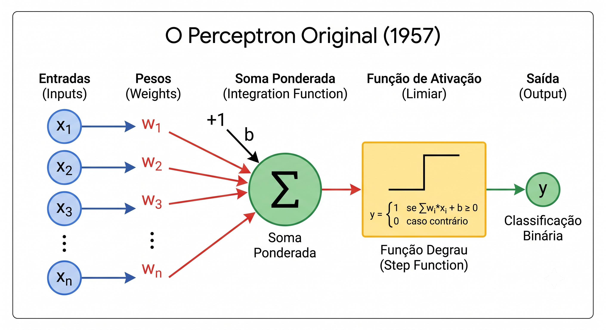
Guarde esse desenho. Ele é literalmente a Aula 1 do nosso curso: uma soma de entradas, cada uma com o seu peso. O que mudou de 1958 para cá não foi a ideia, foi a escala.
O perceptron plantou a semente das redes neurais. E plantou algo maior: a suspeita de que a inteligência de uma máquina talvez não precisasse vir de regras escritas à mão.
Nos anos 1960 a área viveu uma fase de otimismo. Sistemas simbólicos resolviam teoremas. O programa ELIZA simulava uma conversa e impressionava as pessoas.

ELIZA ensinou uma lição que vale exatamente igual hoje: uma conversa simples já causa a impressão de compreensão. Parecia inteligência. Era manipulação de regras.
O problema apareceu quando tentaram sair do laboratório. A IA simbólica funciona escrevendo regras do tipo "se acontecer X, faça Y". Isso vai bem em domínios pequenos e controlados. E fracassa no bom senso, na ambiguidade da linguagem e na bagunça da vida real.
Escrever à mão todas as regras do mundo é impossível. Não é difícil: é impossível.
Nota
A IA simbólica não morreu
Ela virou ferramenta especializada. A biblioteca SymPy faz matemática simbólica e é excelente naquilo. E existe uma linha de pesquisa ativa em arquiteturas neuro-simbólicas, que tentam juntar as duas abordagens.
Na década de 1970 veio o primeiro recuo, e o nome que ficou é bom demais para não usar: o primeiro inverno da IA. O entusiasmo esfriou, as promessas pareceram exageradas, o dinheiro sumiu. O relatório Lighthill, de 1973, criticou os resultados da área no Reino Unido e ajudou a fechar a torneira.
A pesquisa não parou. O robô Shakey e os primeiros trabalhos em aprendizado por reforço mantiveram viva a ideia de máquinas que agem e aprendem.
Nos anos 1980 veio a recuperação, com os sistemas especialistas. A mudança de estratégia foi esperta: em vez de imitar toda a inteligência humana, resolver uma tarefa só. Diagnosticar uma doença. Apoiar uma decisão de crédito. O método era reunir numa base o conhecimento de especialistas humanos, e em muitos casos funcionou.
No mesmo período, a retropropagação deu às redes neurais um jeito prático de ajustar pesos a partir dos erros. É o gradiente descendente da nossa Aula 1.
E veio o segundo obstáculo. Os sistemas especialistas dependiam de conhecimento humano inserido a mão: caro, lento e difícil de manter. Sem dados abundantes e sem infraestrutura, envelheciam depressa. Resultado: segundo inverno.
| Ciclo | Quando | O que empolgou | O que travou |
|---|---|---|---|
| Otimismo simbólico | 1956 a 1973 | teoremas, ELIZA | regras não cobrem o mundo real |
| Primeiro inverno | 1973 a 1980 | corte de financiamento | |
| Sistemas especialistas | 1980 a 1987 | diagnóstico, retropropagação | conhecimento a mão é caro |
| Segundo inverno | 1987 a 1993 | falta de dados e de máquina | |
| Aprendizado de máquina | 1990 em diante | a Web gerando dados | (a virada que ficou) |
Nos anos 1990 aconteceu a mudança que sustenta este curso inteiro, e ela foi silenciosa. A Web começou a produzir dados em volume nunca visto, e a expressão "inteligência artificial" perdeu espaço para uma mais modesta: aprendizado de máquina.
A troca de nome escondia uma troca de método:
| Abordagem | Quem escreve a regra |
|---|---|
| Programação tradicional | uma pessoa escreve as regras, e o programa segue |
| Aprendizado de máquina | você dá exemplos, e o programa acha a regra sozinho |
Pense em filtrar spam. Escrever à mão todas as regras que separam spam de e-mail legítimo é aquele problema impossível de novo. Mas mostre ao programa alguns milhares de exemplos marcados, e ele encontra sozinho as combinações de palavras, formatos e comportamentos que denunciam spam.
É esse o movimento. E é exatamente o que você vai fazer na Aula 1, com aluguéis em vez de spam.
Nos anos 2000 a internet passou a gerar um volume gigantesco de dados. Ao mesmo tempo, as GPUs, criadas para jogos, se revelaram perfeitas para treinar redes grandes.
O avanço da IA não veio de uma descoberta milagrosa. Veio de três coisas chegando juntas:
| Ingrediente | O que trouxe |
|---|---|
| Algoritmos | redes profundas melhor compreendidas |
| Dados | a internet inteira, gerada de graça pelos usuários |
| Máquina | GPUs, capazes de milhares de contas em paralelo |
Tire qualquer um dos três e nada acontece. Foi preciso os três.
Na década de 2010 o aprendizado profundo virou protagonista. Visão computacional, fala e linguagem deram saltos. Assistentes virtuais apareceram no bolso de todo mundo. A IA saiu do laboratório e entrou no produto.
O avanço trouxe problemas novos, e vale nomear os quatro que mais aparecem:
| Problema | O que acontece |
|---|---|
| Viés herdado | o modelo aprende o preconceito que estava nos dados |
| Erro desigual | reconhecimento facial que erra mais em uns grupos que em outros |
| Alucinação | resposta errada com aparência de resposta certa |
| Deepfake | áudio e vídeo falsos, difíceis de distinguir do real |
E uma lição que a história repete: vencer um teste específico não é entender o mundo. Modelos que batem recordes em benchmarks ainda tropeçam em dirigir numa rua caótica.
Desde 2020 estamos na era generativa. Modelos escrevem texto, imagem, código e áudio com fluência surpreendente, e a IA deixou de ser uma peça escondida dentro de sistemas corporativos para virar um assistente com quem você conversa. O alcance cresceu, e os debates sobre desinformação e direito autoral cresceram junto.
Olhe a tabela dos ciclos de novo. Entusiasmo, decepção, método novo, recursos novos, nova onda. Isso não é fracasso: é uma área aprendendo com os próprios limites.
Daí a lição para quem está começando:
Inteligência artificial não é mágica. É um campo construído com hipóteses, experimentos, erros e revisões, por pessoas, com dados de pessoas, e limitado pelas escolhas dessas pessoas.
Entender a história evita os dois extremos que mais atrapalham: o encantamento ingênuo, que acha que a máquina pensa, e o ceticismo apressado, que acha que não mudou nada.
A pergunta de Turing continua aberta, e hoje ela tem uma versão mais útil: que tipo de inteligência queremos construir, e para servir a que tipo de sociedade?
Bentley, P. J. (2025). A história da inteligência artificial para quem tem pressa: o nascimento de uma nova era em apenas 200 páginas (A. Gordirro, Trad.). Rio de Janeiro: Editora Valentina.
Nota
O que você leva desta página
Um modelo que funciona no seu notebook não é um produto. Você vai ver o que falta entre os dois, por que o código do algoritmo é só 5% do trabalho, e por que sistemas de ML falham sem dar erro nenhum.
No aprendizado de máquina, o programa encontra padrões nos dados em vez de seguir regras que alguém escreveu.
O exemplo é o da nossa Aula 1. Você quer prever o preço de um apartamento. O caminho tradicional seria escrever centenas de regras sobre como o bairro, a área e o número de quartos afetam o preço. Boa sorte.
O caminho do ML é outro: mostre ao programa alguns milhares de vendas passadas e deixe ele achar a relação sozinho. Depois, aplique essa relação a um apartamento novo, que ninguém precificou ainda.
Software tradicional é determinístico. Mesma entrada, mesma saída, sempre. Se der errado, dá erro.
Sistema de ML é probabilístico. Ele não entrega uma verdade: entrega uma estimativa. E aqui está a consequência que assusta:
Atenção
A falha silenciosa
Um sistema de ML pode rodar sem um único erro técnico e entregar previsões completamente erradas. O código está certo. Os dados é que mudaram.
Em software comum, quando quebra, você fica sabendo. Em ML, não. É por isso que monitorar não é opcional.
| Programação tradicional | Aprendizado de máquina | |
|---|---|---|
| Quem escreve a lógica | a pessoa, em if e else |
o algoritmo, a partir de exemplos |
| O que você fornece | as regras | os dados e as respostas certas |
| O que você testa | o código | o código e os dados |
| O que você versiona | o código | o código, os dados e o modelo |
| Quando falha | dá erro | continua rodando |
A linha que mais custa a entrar na cabeça é a quarta. Em ML, o modelo é o resultado de um algoritmo mais um conjunto específico de dados. Trocar os dados dá outro modelo, mesmo sem tocar numa linha de código. Então os dados também precisam de versão.
Essa mudança é indispensável para problemas que ninguém consegue codificar a mão: reconhecer fala, detectar fraude, traduzir texto.
Engenharia de Machine Learning é aplicar prática de engenharia de software a sistemas que são probabilísticos por natureza.
| Ciência de dados | Engenharia de ML | |
|---|---|---|
| Onde o trabalho vive | notebook, exploração | código de produção |
| O que entrega | um protótipo que responde a pergunta | um sistema que atende usuários |
| O que otimiza | descoberta | confiabilidade, escala, manutenção |
As duas são necessárias, e a Aula 4 deste curso é justamente a travessia de uma para a outra.
Nota
O princípio dos 5%
O choque de quem entra na área: o código do algoritmo é cerca de 5% do esforço de um sistema industrial.
Os outros 95% são coleta e limpeza de dados, infraestrutura, automação de testes, pipelines e monitoramento.
O bom engenheiro de ML não é o que escreve o algoritmo mais complexo. É o que constrói o sistema mais confiável em volta dele.
Um programa comum você escreve uma vez, e ele executa a tarefa fixa. Um sistema de ML se parece mais com uma planta: precisa de cuidado contínuo, adaptação ao ambiente e alimentação constante com dados novos.
O ciclo não é uma linha reta que acaba na entrega. É um loop, e uma descoberta na etapa 3 costuma mandar você de volta para a etapa 2.
.png)
1. Escopo e objetivo. Traduzir um desejo de negócio em um objetivo técnico. "Aumentar o engajamento" não é objetivo de ML. Prever em que o usuário vai clicar é classificação; prever quanto tempo ele vai ficar é regressão. Escolher errado aqui custa meses.
2. Engenharia de dados. Coletar, limpar registros corrompidos e transformar tudo num formato que o algoritmo engula. Essa transformação tem nome: engenharia de características (feature engineering). É a etapa mais difícil e mais decisiva. Sem dado bom, nenhum modelo salva.
3. Desenvolvimento e avaliação. Escolher o algoritmo, treinar, e então
testar contra dados que o modelo nunca viu. É o train_test_split da nossa
Aula 2. O objetivo é garantir que ele generalize, e não que tenha
decorado o passado.
4. Implantação e monitoramento. Colocar no ar, e continuar olhando. O mundo muda, os dados mudam junto, e o desempenho cai. Quando cai o bastante, o ciclo recomeça.
Software tradicional não se degrada sozinho: se ninguém mexer no código, ele faz amanhã o que fazia ontem.
Modelo de ML se degrada. Ele costuma estar no melhor momento logo depois do treino, e piora conforme o mundo se afasta dos dados com que aprendeu. Há dois jeitos de isso acontecer, e vale saber diferenciar:
| Nome | O que muda | Exemplo |
|---|---|---|
| Desvio de dados (data drift) | as entradas mudam de perfil | um recomendador treinado com adolescentes começa a atender idosos |
| Desvio de conceito (concept drift) | a relação entre entrada e resposta muda | os padrões de consumo numa pandemia |
Nos dois casos o código continua rodando sem reclamar. Só as previsões ficam erradas.
Numa competição ou num artigo, o objetivo é um só: acertar mais que os outros, num conjunto de dados parado.
Em produção você equilibra objetivos que brigam entre si:
| Requisito | A pergunta que ele faz |
|---|---|
| Precisão | o modelo acerta? |
| Latência | ele responde a tempo? |
| Throughput | ele aguenta o volume? |
| Custo | a conta da infraestrutura fecha? |
| Segurança | os dados dos usuários estão protegidos? |
Um modelo mais preciso e lento demais é inútil. Um modelo mais preciso e caro demais também. Essa negociação é o trabalho.
MLOps é a prática de unificar o desenvolvimento de sistemas de ML com a operação deles. O objetivo é padronizar e automatizar o ciclo inteiro.
A filosofia cabe numa frase dura: se um processo depende de alguém lembrar de fazer, ele já está quebrado. Intervenção manual é lenta e erra.
| Pilar | O que automatiza |
|---|---|
| Integração contínua (CI) | testa o código e a validade dos dados |
| Entrega contínua (CD) | publica sozinho os modelos aprovados |
| Treinamento contínuo (CT) | retreina quando chegam dados novos ou o desempenho cai |
O terceiro é o que não existe em software comum, e é o que fecha o loop do ciclo de vida.
Nota
A regra dos 25%
O erro mais comum é achar que modelagem matemática é a competência que importa. Não é. O resultado depende de quatro coisas, em partes iguais:
| Domínio | O que ele garante |
|---|---|
| Engenharia de software | código robusto e testável |
| Engenharia de dados | coleta, limpeza e validação |
| Modelagem | a escolha e o treino do algoritmo |
| Entendimento do negócio | que o problema resolvido seja o problema certo |
O quarto é o mais ignorado e o mais caro quando falta. Modelo perfeito para a pergunta errada não vale nada.
Babushkin, V., & Kravchenko, A. (2025). Machine learning system design: With end-to-end examples. Manning Publications Co.
Burkov, A. (2020). Machine learning engineering. True Positive Inc.
Crowe, R., Hapke, H., Caveness, E., & Zhu, D. (2025). Machine learning production systems: Engineering machine learning models and pipelines. O'Reilly Media.
Gift, N., & Deza, A. (2021). Practical MLOps: Operationalizing machine learning models. O'Reilly Media.
Huyen, C. (2022). Designing machine learning systems: An iterative process for production-ready applications. O'Reilly Media.
Kleppmann, M., & Riccomini, C. (2026). Designing data-intensive applications: The big ideas behind reliable, scalable, and maintainable systems (2nd ed.). O'Reilly Media.
Nota
O que você leva desta página
Engenharia de ML é treinar o seu modelo. Engenharia de IA é adaptar um modelo que já existe. Você vai ver o que muda no trabalho, as três formas de adaptar um modelo de fundação, e por que a parte difícil não é fazer funcionar.
Até pouco tempo, usar IA de ponta exigia laboratório e infraestrutura cara. Hoje, uma chave de API e vinte linhas de Python colocam um modelo estado da arte dentro do seu produto.
Engenharia de IA é construir aplicações em cima de modelos de fundação já treinados. E o trabalho não é chamar a API. É definir o problema, dar contexto ao modelo, avaliar as respostas e operar o sistema com segurança.
| Engenharia de ML | Engenharia de IA | |
|---|---|---|
| O modelo | a equipe treina e mantém o seu | alguém já treinou |
| O trabalho central | dados e treino | contexto, avaliação e operação |
| Onde está o risco | o modelo não aprende | o modelo responde bem, e errado |
Atenção
A regra dos 80%
Sair do zero a 80% e ter uma demonstração que funciona é fácil. Ir de 80% a 95% e ter um produto que aguenta produção é o trabalho inteiro.
Toda a diferença mora em avaliação, dados confiáveis, controle de acesso e monitoramento. Nenhuma dessas coisas aparece na demonstração.
Modelos de linguagem não leem texto como você. Eles trabalham com tokens, que são pedaços de texto.
Um token pode ser uma palavra inteira, um pedaço dela ou um caractere só. A
divisão muda de modelo para modelo e de idioma para idioma. Em inglês,
can't costuma virar can e 't.
Por que não usar palavras inteiras? Por três motivos:
| Motivo | O que ganha |
|---|---|
| Cobertura | o modelo monta palavras que nunca viu, com pedaços que conhece |
| Eficiência | o vocabulário fica muito menor que uma lista de palavras |
| Flexibilidade | texto, código e símbolos usam a mesma representação |
Token não é detalhe técnico: é a unidade de custo e de limite. Você paga por token, e a janela de contexto se mede em tokens. E a janela precisa caber tudo: as instruções, os documentos recuperados, o histórico da conversa e a resposta que está sendo gerada.
Uma regra aproximada para o inglês: 100 tokens dão umas 75 palavras. Em português rende menos.
Nota
Português custa mais caro
Os grandes modelos treinaram os tokenizadores deles quase todo em inglês, então o inglês comprime melhor. A mesma frase em português vira mais tokens: mais custo e menos espaço na janela.
Vale testar em gpt-tokenizer.dev: escreva uma frase em português e a tradução dela, e compare a contagem.
Você vai construir um tokenizador desses do zero na Aula 9, e vai ver a compressão acontecer com o texto do Machado de Assis.
Modelos generativos são sistemas probabilísticos. Eles estimam a probabilidade do próximo token, dado tudo que veio antes.
Em "Why does the chicken cross the ___", o modelo dá probabilidade alta a
road. Escolhe um token, cola no fim da frase, e repete. Cada palavra que
ele escreve vira entrada da próxima.
Por isso o nome: modelo autorregressivo. A família GPT inteira é assim.
E aqui está a consequência que gera quase todo mal-entendido sobre IA:
O modelo não consulta uma fonte de verdade. Ele gera a continuação mais provável. Uma resposta fluida pode estar completamente errada.
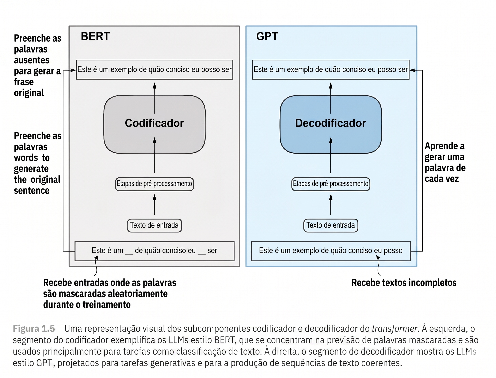
Existe outra família, os modelos mascarados, como o BERT. Eles preenchem lacunas no meio do texto, e são bons em classificação e análise de sentimento. Para gerar texto, código e diálogo, os autorregressivos dominaram.
Durante anos, rotular dados a mão foi o gargalo do ML. Para ensinar um modelo a distinguir gato de cachorro, alguém tinha que marcar cada foto.
A auto-supervisão resolve isso de um jeito quase óbvio depois que você vê: o próprio dado já contém a resposta. Em texto, o que veio antes é o contexto, e o próximo token é o alvo.
Veja a frase "I love street food" virando seis exemplos de treino:
| Entrada (contexto) | Alvo (próximo token) |
|---|---|
<BOS> |
I |
| I | love |
| I love | street |
| I love street | food |
| I love street food | . |
| I love street food . | <EOS> |
Nenhuma pessoa rotulou nada. <BOS> e <EOS> são tokens especiais que
marcam começo e fim de sequência.
Agora multiplique isso por toda a internet. É daí que saem os modelos de fundação, e é exatamente esse par entrada/alvo que você vai montar na Aula 9.
Um modelo de fundação aprende padrões amplos com um volume enorme de dados, e depois se adapta a muitas tarefas sem precisar treinar de novo do zero.
Muitos são multimodais: processam combinações de texto, imagem, áudio e vídeo. Modelos como o CLIP aprendem a relação entre uma imagem e a descrição dela, e esses pares substituem boa parte da rotulagem manual.
O modelo entrega capacidade geral. Quem transforma capacidade em valor é a aplicação.
A regra é começar pela mais simples que resolva. Cada degrau custa mais dinheiro, mais prazo e mais risco.
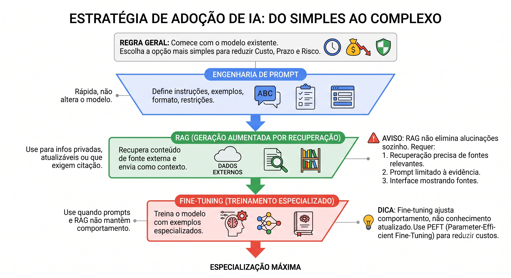
| Técnica | O que faz | Quando usar |
|---|---|---|
| Engenharia de prompt | define instruções, exemplos, formato e limites | sempre; é o primeiro degrau |
| RAG | busca conteúdo numa fonte externa e manda junto no contexto | informação privada, que muda, ou que precisa de citação |
| Ajuste fino | treina o modelo com exemplos especializados | quando prompt e RAG não seguram o comportamento |
Duas confusões que custam caro:
RAG não cura alucinação sozinho. Ele só ajuda se a busca trouxer a fonte certa, se o prompt mandar responder apenas com base nas evidências, e se a interface mostrar de onde veio a resposta. Sem os três, você trocou uma alucinação por uma alucinação com aparência de fonte.
Ajuste fino não é base de conhecimento. Ele muda comportamento, tom e formato. Ele não mantém a informação atualizada. Para conhecimento que muda, use RAG. Técnicas de PEFT (parameter-efficient fine-tuning) baixam bastante o custo do treino, mas não mudam essa divisão de tarefas.
Você constrói um RAG do zero na Aula 13.
O processo é iterativo, e difere do ciclo de ML tradicional por gastar quase nada em treino e quase tudo em adaptação e avaliação.
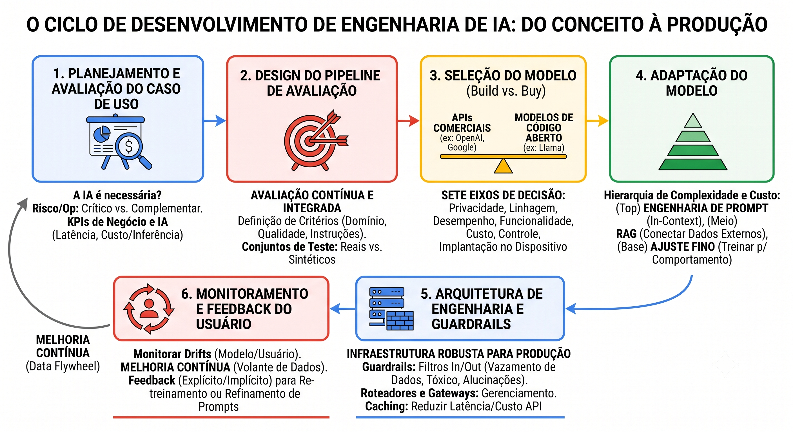
1. Planejar e avaliar o caso de uso. Antes de qualquer código: a IA é a ferramenta certa aqui? Ela é crítica ao produto ou enfeite? E como vamos medir sucesso, em métrica de negócio e em latência e custo por resposta?
2. Desenhar o pipeline de avaliação. Esta é a etapa mais difícil, e a mais pulada. Como os modelos de fundação respondem de forma aberta, você precisa de critérios escritos e de um conjunto de casos de teste, real ou sintético, para saber se uma mudança melhorou ou piorou.
3. Escolher o modelo. API comercial ou modelo aberto hospedado por você? A decisão pesa sete eixos: privacidade dos dados, linhagem do modelo, desempenho, funcionalidades, custo, controle e possibilidade de rodar no dispositivo.
4. Adaptar. Os três degraus da seção anterior, na ordem.
5. Arquitetura e guardrails. O que separa protótipo de produto:
| Peça | Para que serve |
|---|---|
| Guardrails | filtram entrada e saída: dado sensível, conteúdo tóxico, alucinação grave |
| Roteadores e gateways | mandam cada pedido ao modelo certo e controlam custo |
| Cache | guardam respostas repetidas, e cortam latência e conta |
6. Monitorar e coletar feedback. Depois no ar, acompanhe os desvios de comportamento do modelo e do usuário. O feedback, explícito ou implícito, alimenta o que se chama de volante de dados: o uso melhora o sistema, que atrai mais uso.
Monte um conjunto de casos que represente a realidade: os comuns, os difíceis e os maliciosos. Em cada resposta, olhe correção, completude, formato e presença de fonte.
E teste de propósito as três falhas previsíveis:
| Falha | O que acontece |
|---|---|
| Alucinação | a resposta inventa um fato ou uma fonte |
| Instrução maliciosa | um documento tenta mudar as regras da sua aplicação |
| Vazamento | dado pessoal ou interno aparece no prompt ou na resposta |
A segunda merece atenção. Se a sua aplicação lê documentos que outras pessoas escreveram, alguém pode esconder instruções lá dentro. O modelo não distingue por conta própria o que é conteúdo e o que é ordem.
Defina limites claros, filtre dado sensível, controle o acesso às fontes e mantenha revisão humana onde a decisão pesa.
IA generativa ajuda mais em tarefas repetitivas, com bastante contexto disponível e resultado que alguém consegue revisar.
| Caso | O que faz |
|---|---|
| Assistente interno | responde com base em políticas, manuais e documentação da casa |
| Extração de documentos | transforma PDF e imagem em dado estruturado |
| Apoio ao desenvolvimento | explica, testa, refatora e documenta código |
O objetivo não é automatizar tudo. É montar fluxos verificáveis, onde pessoa e sistema entregam mais juntos do que separados.
Huyen, C. (2025). AI Engineering: Building Applications with Foundation Models. O'Reilly Media.
Este módulo ensina a base de quase tudo em IA: encontrar uma regra matemática que explica os dados que você tem, e usar essa regra para prever o que ainda não viu. Você vai aprender a prever um número (quanto vai custar uma corrida) e depois uma categoria (o cliente vai cancelar ou não).
| Aula | Conteúdo | Status |
|---|---|---|
| Aula 1 — Regressão Linear Simples | Reta de previsão, gradiente descendente, métricas de regressão | Disponível |
| Aula 2 — Regressão Múltipla | Várias variáveis ao mesmo tempo, preditores categóricos, interpretação dos coeficientes | Disponível |
| Aula 3 — Regressão Logística | Função sigmoide, interpretação dos coeficientes, métricas de classificação | Disponível |
| Quiz — Modelos Lineares | 15 perguntas de interpretação sobre as três aulas | Disponível |
Nota
O que você leva desta aula
Você vai aprender a desenhar uma reta que prevê um preço a partir de uma distância, a medir o quanto essa reta erra, e a usar o gradiente descendente, a técnica que todo modelo de IA usa para aprender, para melhorar essa reta sozinho, sem chute.
Você chama um carro por aplicativo. Antes de aceitar a corrida, o app já mostra o preço. Como ele sabe isso antes mesmo de você sair de casa?
Ele não sabe o futuro. Ele olha para o passado: milhares de corridas anteriores, cada uma com sua distância e seu preço final. Nesses dados existe um padrão. Corridas mais longas custam mais. O aplicativo usa esse padrão para prever o preço da sua corrida antes de ela acontecer.
Regressão linear é a ferramenta mais simples para encontrar esse padrão. Ela desenha uma reta no meio dos seus dados e usa essa reta para prever. Esta aula usa exatamente esse exemplo, o preço de uma corrida, para ensinar a matemática por trás de qualquer modelo de previsão.
Veja como fica quando você coloca a distância e o preço de 200 corridas num gráfico:
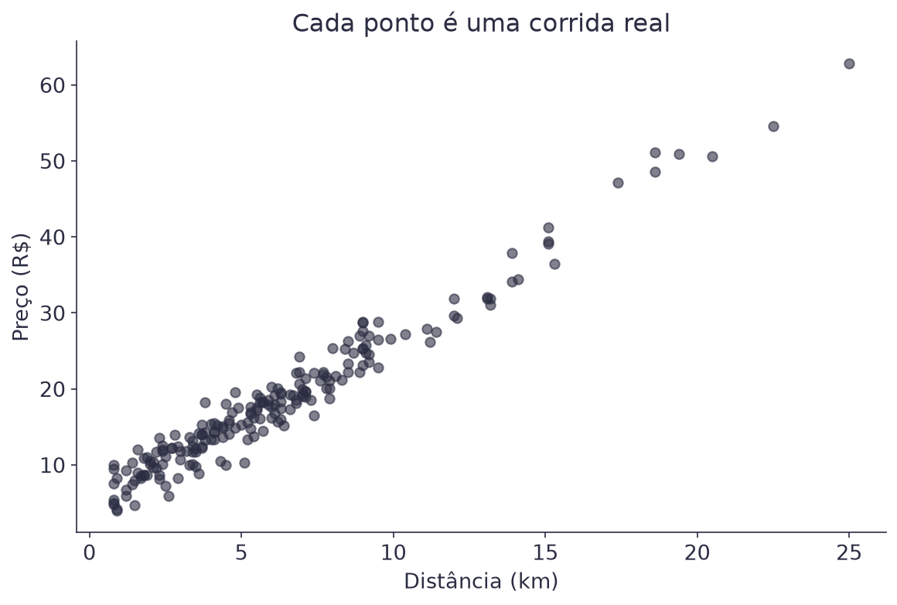
Os pontos não formam uma reta perfeita. O trânsito, o horário e outros fatores empurram cada corrida um pouco para cima ou para baixo. Mas dá para ver uma tendência clara: quanto maior a distância, maior o preço. É essa tendência que a regressão linear captura.
Uma reta de regressão é uma regra simples: você entra com a distância, ela devolve o preço previsto.
O preço previsto é a taxa fixa (o valor cobrado mesmo numa corrida de 0 km) mais o preço por quilômetro, multiplicado pela distância.
| Símbolo | Significado |
|---|---|
preço |
o preço previsto pela reta, em reais |
distância |
a distância da corrida, em km |
w₀ |
a taxa fixa: o preço previsto para uma corrida de 0 km |
w₁ |
o preço por km: quanto o preço sobe para cada km a mais |
Exemplo: se w₀ = 5 e w₁ = 2,20, uma corrida de 8 km custa 5 + 2,20 × 8 = 22,60 reais.
Repare que w₁ é o único número que decide o quanto o preço reage à
distância. Se w₁ dobrasse, cada km rodado custaria o dobro. A reta
ficaria bem mais inclinada, e corridas longas ficariam
desproporcionalmente mais caras.
w₀ e w₁ (lê-se "peso zero" e "peso um") se chamam coeficientes ou
pesos do modelo. Encontrar a melhor reta é, na prática, encontrar os
melhores valores para esses dois números. O nome "peso" (do inglês
weight) é o mesmo usado em modelos bem maiores: cada conexão de uma
rede neural tem um peso, e a ideia continua sendo esta.
Nenhuma reta acerta todas as 200 corridas. Os pontos não estão exatamente alinhados. A diferença entre o preço real de uma corrida e o preço que a reta previu para ela se chama resíduo (também chamado de erro).
| Símbolo | Significado |
|---|---|
preço real |
o preço que a corrida realmente teve |
preço previsto |
o preço que a reta calculou para essa mesma corrida |
Exemplo: uma corrida de 8 km custou R$ 25,00, e a reta previu R$ 22,60. O resíduo dessa corrida é 25,00 − 22,60 = R$ 2,40.
A mesma conta, escrita com símbolos:
| Símbolo | Significado |
|---|---|
i |
o número da corrida: 1 para a primeira, 2 para a segunda... |
εᵢ |
o resíduo da corrida i (lê-se "épsilon i") |
yᵢ |
o preço real da corrida i |
ŷᵢ |
o preço previsto para a corrida i (lê-se "y chapéu") |
No exemplo acima, y₁ = 25,00, ŷ₁ = 22,60 e ε₁ = 2,40. Esses três
símbolos voltam em todas as fórmulas de erro desta página.
Um resíduo positivo significa que a reta previu um preço menor que o real. Um resíduo negativo significa que ela previu um preço maior. Visualmente, o resíduo é a distância vertical entre o ponto e a reta:
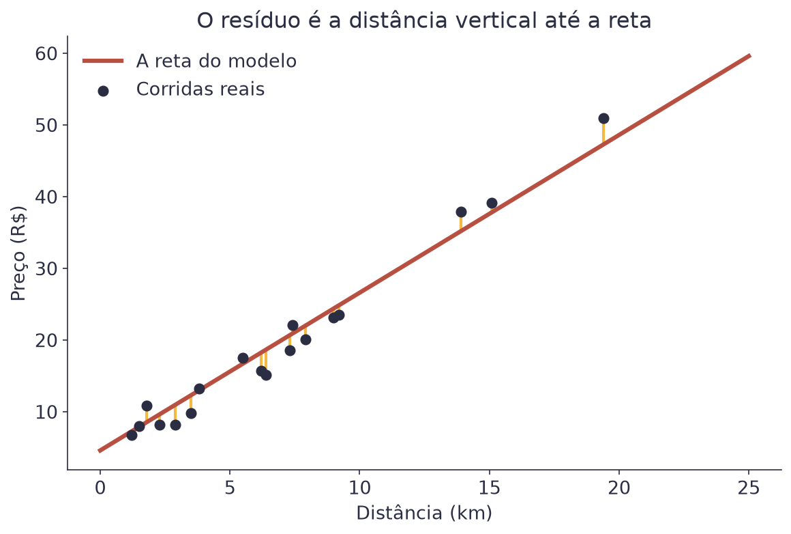
Uma reta boa não é a que acerta uma corrida perfeitamente. É a que erra pouco, na média, em todas as corridas ao mesmo tempo.
Para comparar retas diferentes, você precisa de um único número que resuma o quanto uma reta erra. O mais usado é o erro quadrático médio (mean squared error, ou MSE): a média dos resíduos, cada um elevado ao quadrado.
| Símbolo | Significado |
|---|---|
n |
o número de corridas |
yᵢ |
o preço real da corrida i |
ŷᵢ |
o preço que a reta previu para a corrida i (lê-se "y chapéu") |
Por que elevar ao quadrado, e não só somar os erros? Por dois motivos. Primeiro, um resíduo pode ser negativo (a reta previu preço maior que o real) ou positivo (previu menor). Se você só somasse, um erro positivo cancelaria um negativo, e a soma poderia dar zero mesmo com a reta errando bastante. Elevar ao quadrado remove esse problema, porque todo número ao quadrado é positivo. Segundo, o quadrado penaliza mais os erros grandes: errar R$ 2 em uma corrida conta 4; errar R$ 10 conta 100. Vinte e cinco vezes mais, não só cinco.
Exemplo com 3 corridas, cujos resíduos foram R$ 1, R$ -2 e R$ 3: elevando cada um ao quadrado, você tem 1, 4 e 9. A média é (1+4+9)/3 = 4,67. O MSE dessas três corridas é 4,67, em reais ao quadrado. Uma unidade estranha, que é justamente o motivo de existirem as outras métricas desta página.
Quanto menor o MSE, melhor a reta. Veja três retas candidatas para os mesmos dados, cada uma com seu MSE:
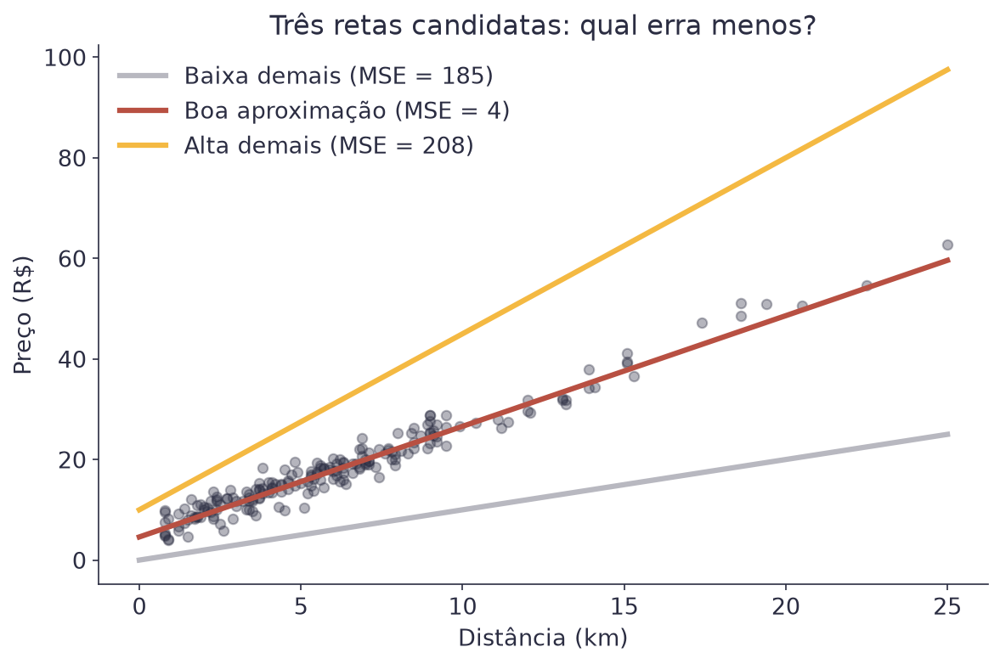
Para uma reta simples como esta, existe uma fórmula que calcula os
melhores w₀ e w₁ direto, sem precisar tentar valor por valor. Ela se
chama mínimos quadrados (ordinary least squares).
| Símbolo | Significado |
|---|---|
xᵢ, yᵢ |
a distância e o preço da corrida i |
x̄ |
a média de todas as distâncias |
ȳ |
a média de todos os preços |
Este guia não deduz de onde essa fórmula vem. O importante aqui é saber que ela existe e o que ela calcula, não como alguém a inventou.
Exemplo com 3 corridas de brinquedo, com distâncias 1, 2 e 3 km e preços
R$ 6, R$ 9 e R$ 15: a distância média é x̄ = 2 e o preço médio é
ȳ = 10. Aplicando a fórmula, w₁ = 4,5 e w₀ = 1. A melhor reta para
este mini-exemplo é preço = 1 + 4,5 × distância.
Dica
Repare que os resíduos dessa reta (0,50, -1,00 e 0,50) somam zero. Isso não é coincidência: a reta de mínimos quadrados sempre produz resíduos que somam exatamente zero. É uma boa forma de conferir uma conta feita à mão.
Se essa fórmula resolve o problema direto, por que aprender outro jeito de chegar à mesma resposta? Porque ela é a exceção, não a regra. A próxima seção mostra o método que funciona quando ela não existe, que é quase sempre.
Imagine que você está numa serra, de noite, com neblina fechada. Você não enxerga o vale lá embaixo, mas consegue sentir com os pés se o chão desce para a esquerda ou para a direita. A estratégia mais simples para chegar ao fundo do vale é: sinta a inclinação do chão onde você está, dê um passo na direção que desce, e repita.
O gradiente descendente faz exatamente isso, mas em vez de um vale de
terra, o "terreno" é o MSE. Em vez de posição geográfica, você está
"andando" sobre os valores possíveis de w₀ e w₁. A inclinação do
terreno em cada ponto tem um nome técnico: gradiente. Ele aponta para
onde o erro cresce mais rápido, e por isso você anda na direção
contrária a ele.
A fórmula dos mínimos quadrados dá a resposta exata de primeira, sem passo nenhum. Parece sempre melhor que descer a serra tateando no escuro. E é, para uma reta com dois pesos.
O problema é que ela não escala. Aquela fórmula existe porque alguém conseguiu resolver a conta no papel, e isso só dá certo em modelos pequenos. Uma rede neural tem milhões de pesos amarrados uns nos outros, e ninguém nunca resolveu essa conta no papel. Para ela não existe fórmula fechada, e provavelmente nunca vai existir.
O gradiente descendente não precisa resolver conta nenhuma. Ele precisa saber uma coisa só: de onde estou, para que lado o erro diminui? Essa pergunta tem resposta em qualquer modelo, de qualquer tamanho.
É por isso que esta seção é a mais importante da aula. O mesmo método que ajusta a reta das corridas treina a rede que reconhece imagens na Aula 8 e o modelo de linguagem que você constrói na Aula 11. Muda o tamanho do modelo. A ideia é esta.
Essa serra não é só uma figura de linguagem. Para enxergá-la, congele
w₀ no valor que os mínimos quadrados dão (4,63) e mexa só em w₁. Cada
valor de w₁ dá uma reta diferente, e cada reta tem o seu MSE. Marque
w₁ no eixo horizontal e o MSE no eixo vertical, e o terreno aparece:
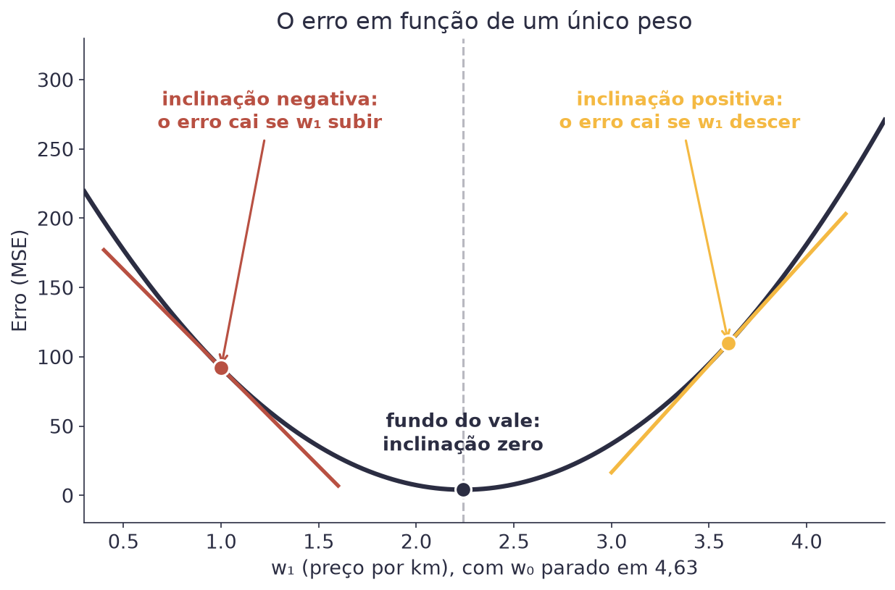
Repare em três coisas. A curva tem um fundo, e é ali que mora o melhor
w₁. À esquerda do fundo ela desce, à direita ela sobe. E a inclinação
do chão em cada ponto já diz para que lado andar: onde a curva desce,
aumentar w₁ diminui o erro.
Você está parado num ponto da curva e precisa decidir uma coisa só: para que lado andar. A derivada responde exatamente isso. Ela olha o peso onde você está e diz o que acontece com o erro se você aumentar esse peso um tiquinho.
Pense numa placa de estrada avisando "10% de inclinação": a cada 100 metros andados para a frente, a estrada sobe 10 metros. Aqui, "andar para a frente" é aumentar o peso, e "subir" é o erro aumentar.
A conta é a mesma da placa. Ande um tiquinho para a frente e veja o quanto o erro subiu.
| Símbolo | Significado |
|---|---|
h |
o tiquinho andado: um avanço pequeno no valor de w₁ |
MSE(w₁) |
o erro com o w₁ de agora |
MSE(w₁ + h) |
o erro depois de andar esse tiquinho |
≈ |
"quase igual": a conta fica exata quando h encolhe até quase zero |
Exemplo, partindo de w₁ = 3,20 com um avanço de h = 0,05: o erro sai
de 56,75 para 62,38. A subida foi 5,63, e 5,63 ÷ 0,05 = 112,7. A
inclinação naquele ponto é 112,7. Ela é positiva, então aumentar w₁
aumenta o erro, e o caminho para baixo é o contrário.
Como ler o número que sai. Ele carrega duas informações ao mesmo tempo, e o modelo usa as duas:
| O que a derivada diz | O que o modelo faz com isso |
|---|---|
| Sinal positivo: aumentar o peso aumenta o erro | anda para o outro lado, diminuindo o peso |
| Sinal negativo: aumentar o peso diminui o erro | anda para a frente, aumentando o peso |
| Número grande: ladeira íngreme, o erro muda rápido ali | dá um passo maior |
| Número perto de zero: chão plano, o erro quase não muda | dá um passo curto: o fundo está perto |
É por isso que a derivada é a peça que faltava. Sem ela, você saberia o erro do lugar onde está e mais nada, e teria que testar valores no escuro, um por um. Com ela, você sabe para onde ir antes de dar o passo.
A animação mostra o que acontece quando o avanço encolhe. A reta amarela liga dois pontos da curva, e tem nome: secante. Quanto menor o avanço, mais ela cola na reta tracejada, aquela que toca a curva em um ponto só: a tangente. A derivada é a inclinação dessa tangente.
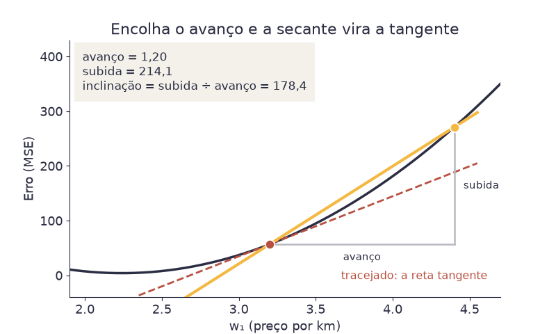
Ninguém precisa calcular derivada à mão neste curso. Quem faz essa conta é o computador. O que você precisa levar é o significado do número: para que lado o erro cresce, e o quão rápido.
A curva de antes tinha um peso só, porque w₀ ficou congelado. No treino
de verdade os dois pesos se mexem, e aí não existe uma inclinação só.
Existe uma para cada peso: o quanto o erro muda se você mexer só em w₀,
e o quanto ele muda se você mexer só em w₁. Essa lista de inclinações é
o gradiente.
| Símbolo | Significado |
|---|---|
∇ |
nabla: o símbolo do gradiente, a lista de todas as inclinações |
∂MSE/∂w₀ |
a inclinação do erro quando só w₀ se mexe |
∂MSE/∂w₁ |
a inclinação do erro quando só w₁ se mexe |
O símbolo ∂ é a derivada quando existe mais de um peso. Ele quer dizer:
mexa só neste peso aqui e segure os outros parados. A conta continua sendo
a mesma de antes, subida dividida por avanço, feita uma vez por peso.
Volte para a serra. Andar só para o norte tem uma inclinação, andar só para o leste tem outra, e o gradiente é esse par. Ele aponta para onde o erro cresce mais rápido, e é por isso que o modelo anda no sentido contrário.
Exemplo com duas corridas de brinquedo (2 km por R$ 9 e 5 km por R$ 15) e
o chute w₀ = 0, w₁ = 2. As previsões são R$ 4 e R$ 10, então os dois
resíduos valem R$ 5. O gradiente nesse ponto é (−10 ; −35). Os dois
números são negativos, o que significa que subir os dois pesos reduz o
erro.
| Símbolo | Significado |
|---|---|
t |
o número do passo: t = 0 é o chute inicial |
wₜ |
o valor do peso no passo t |
wₜ₊₁ |
o valor que esse peso passa a ter no passo seguinte |
α |
a taxa de aprendizado (learning rate): o tamanho do passo |
∂MSE/∂w |
a inclinação do erro naquele ponto, para aquele peso |
O sinal de menos é o coração da fórmula. Se a inclinação é positiva, o erro cresce para a frente, então o peso anda para trás. Se é negativa, o peso anda para a frente.
O t é só um contador de passos. A fórmula é uma receita para repetir:
você calcula o peso do passo seguinte a partir do peso de agora, e usa
esse resultado como ponto de partida da próxima volta. Cada peso tem a sua
própria linha, com a sua própria inclinação.
Veja dois passos calculados à mão, com as mesmas duas corridas de
brinquedo, taxa de aprendizado α = 0,01, e o chute inicial w₀ = 0,
w₁ = 2:
| Passo | w₀ |
w₁ |
MSE |
|---|---|---|---|
t = 0 (chute inicial) |
0,00 | 2,00 | 25,00 |
t = 1 |
0,10 | 2,35 | 13,78 |
t = 2 |
0,17 | 2,59 | 8,43 |
A cada passo, o MSE cai. A reta está melhorando sozinha, sem que ninguém diga qual deveria ser o próximo chute. Rodando esse mesmo processo dezenas de vezes, ele se aproxima cada vez mais da resposta que a fórmula de mínimos quadrados dá direto.
Na curva do erro, esse processo vira uma bolinha escorregando para o fundo. Repare que os passos encolhem sozinhos: perto do fundo o chão fica plano, a inclinação diminui, e o passo diminui junto.
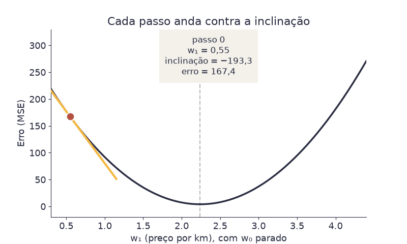
Junte as peças e o gradiente descendente inteiro cabe em cinco passos:
w₀ e w₁. Zero serve. O chute não
precisa ser bom, e quase nunca é.Quando parar? Quando o erro parar de cair de forma perceptível. Perto do fundo a inclinação chega perto de zero, os passos encolhem sozinhos, e mais uma volta quase não muda nada. Na prática você também define um número máximo de voltas, para o programa não rodar para sempre.
Repare no que o algoritmo não faz. Ele nunca testa todos os valores
possíveis de w₀ e w₁. Ele nunca precisa enxergar o terreno inteiro.
Ele olha só para o chão embaixo dos próprios pés, e essa modéstia é o que
faz o método funcionar tanto num modelo de dois pesos quanto num de
bilhões.
Congelar w₀ foi só para caber num desenho. No treino de verdade os dois
pesos mudam juntos, e o terreno deixa de ser uma curva. Com dois pesos
ele vira uma superfície, uma bacia de verdade:
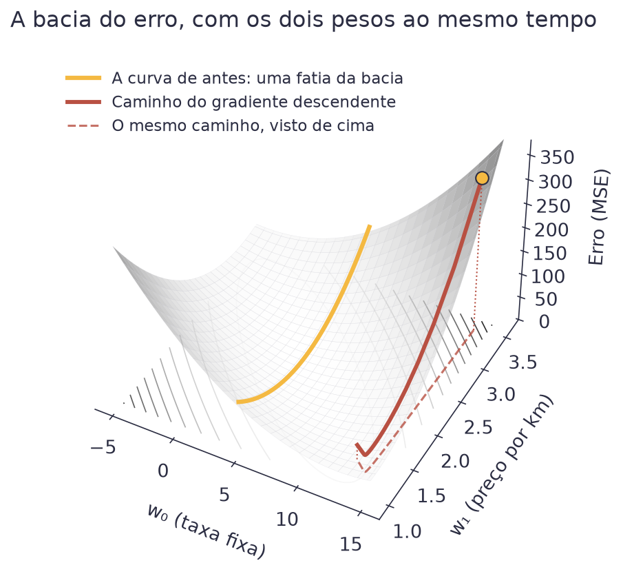
A regra de atualização não muda quando os dois pesos andam juntos. Você a aplica duas vezes por passo, uma para cada peso, cada uma com a sua inclinação.
Essa mesma bacia, vista de cima, vira um mapa. Cada tom de cinza é um valor de MSE, e a linha vermelha é o caminho que o gradiente descendente percorre, passo a passo, até chegar perto do fundo, a região mais clara, onde o erro é menor.
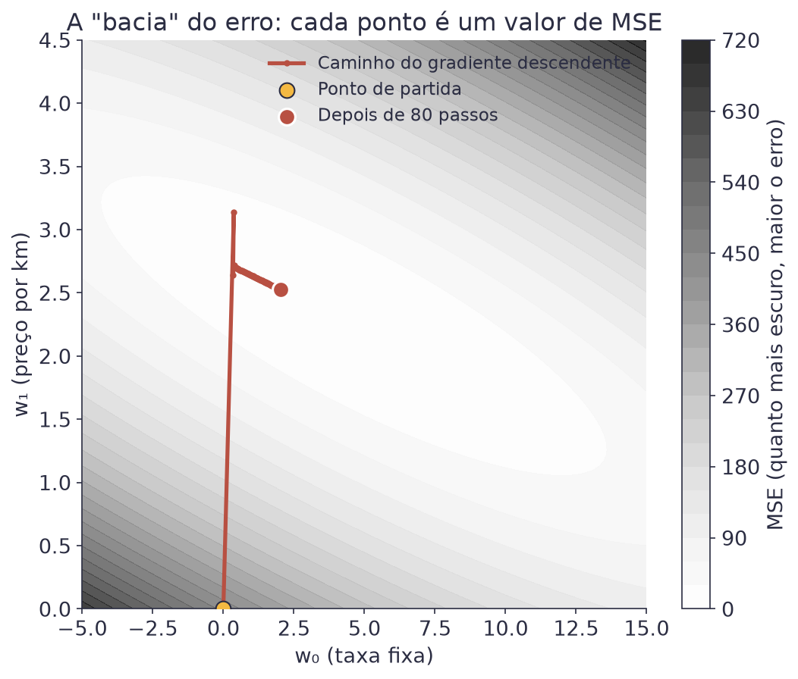
O tamanho do passo, α, decide se o gradiente descendente funciona bem,
devagar, ou nem funciona:
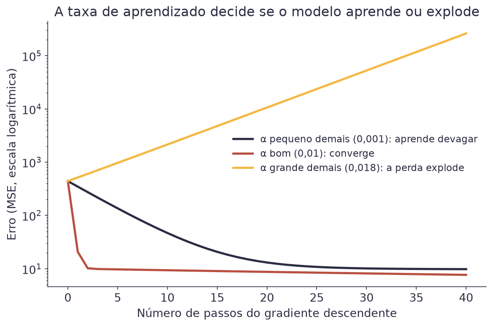
Atenção
Erro do dia
É comum, na primeira vez que se usa gradiente descendente, escolher uma
taxa de aprendizado grande demais para "o modelo aprender mais rápido",
e ver o erro, em vez de diminuir, virar um número gigante ou nan ("não
é um número", o jeito do Python de dizer que a conta explodiu). Se isso
acontecer, a correção quase sempre é a mesma: diminua a taxa de
aprendizado, muitas vezes por um fator de 10, e rode de novo.
Depois de treinar um modelo, você precisa de números que digam, em linguagem simples, o quanto ele erra. Cada métrica conta uma parte da história. Vamos calcular as quatro para o mesmo mini-exemplo de antes (as 3 corridas de brinquedo, com resíduos 0,50, -1,00 e 0,50).
O erro absoluto médio (mean absolute error) é a média do tamanho dos erros, ignorando se cada um é para cima ou para baixo.
| Símbolo | Significado |
|---|---|
| barras verticais | valor absoluto: transforma um número negativo em positivo |
n, yᵢ, ŷᵢ |
os mesmos símbolos do MSE (número de corridas, preço real, preço previsto) |
As barras verticais em torno de yᵢ - ŷᵢ deixam um número já positivo
como está, e transformam um número negativo em positivo.
No mini-exemplo: (0,50 + 1,00 + 0,50)/3 = 0,67. Em média, a reta erra R$ 0,67 por corrida, na mesma unidade do preço, fácil de explicar para qualquer pessoa.
Você já viu o MSE (a média dos erros ao quadrado). No mini-exemplo: (0,25 + 1,00 + 0,25)/3 = 0,50. O problema do MSE é a unidade: "reais ao quadrado" não significa nada no mundo real.
A raiz do erro quadrático médio (root mean squared error, RMSE) resolve isso. É só a raiz quadrada do MSE, o que devolve a métrica para a unidade original.
| Símbolo | Significado |
|---|---|
| raiz quadrada | devolve o MSE para a unidade original (reais) |
No mini-exemplo: a raiz quadrada de 0,50 é 0,71. O RMSE fica bem perto do MAE neste caso. Isso muda quando existe um erro muito fora do padrão.
Nas 200 corridas, o MAE do modelo dá R$ 1,61. Agora responda: isso é muito?
Depende da corrida. Errar R$ 1,61 numa corrida de R$ 8 é errar um quinto do preço, e o cliente percebe na hora. Errar os mesmos R$ 1,61 numa corrida de R$ 50 é errar pouco mais de 3%, e ninguém reclama. O mesmo erro em reais não vale a mesma coisa nas duas.
O erro percentual absoluto médio (mean absolute percentage error, MAPE) resolve isso com uma ideia só: antes de tirar a média, transforme o erro de cada corrida em porcentagem do preço daquela corrida.
Faça isso corrida por corrida, no mini-exemplo de três:
| Corrida | Preço real | Previsto | Resíduo | Em % do preço real |
|---|---|---|---|---|
| 1 | R$ 6,00 | R$ 5,50 | +R$ 0,50 | 0,50 ÷ 6,00 = 8,3% |
| 2 | R$ 9,00 | R$ 10,00 | −R$ 1,00 | 1,00 ÷ 9,00 = 11,1% |
| 3 | R$ 15,00 | R$ 14,50 | +R$ 0,50 | 0,50 ÷ 15,00 = 3,3% |
A última coluna joga fora o sinal: errar R$ 1 para cima ou para baixo conta igual. A média dessas três porcentagens é (8,3 + 11,1 + 3,3) ÷ 3 = 7,6%. Esse é o MAPE.
A fórmula diz isso mesmo, em símbolos:
| Símbolo | Significado |
|---|---|
yᵢ - ŷᵢ |
o resíduo da corrida i: quanto o modelo errou, em reais |
dividido por yᵢ |
o resíduo vira uma fração do preço daquela corrida |
| as barras verticais | valor absoluto: jogam fora o sinal do resíduo |
100 |
transforma a fração em porcentagem |
n |
o número de corridas |
Leia a fórmula de dentro para fora e ela vira a tabela: pegue o resíduo, divida pelo preço real, tire o sinal, some em todas as corridas, divida pelo número de corridas e multiplique por 100.
Nas 200 corridas, o MAPE do modelo dá 11,2%. Repare que ele conta uma
história bem diferente do R² de 0,96 da próxima seção. As duas estão
certas: elas respondem perguntas diferentes.
Atenção
O cuidado com o MAPE
Ele divide pelo valor real, então explode quando esse valor chega perto de zero, e nem existe quando ele é zero. Numa série que passa por zero, ou em dados que podem ser negativos, use MAE.
O R² (lê-se "r ao quadrado", também chamado de coeficiente de determinação) responde a uma pergunta diferente: de toda a variação que existe nos preços, quanto a reta consegue explicar?
| Símbolo | Significado |
|---|---|
ȳ |
o preço médio, sem usar a reta |
| numerador | soma dos erros da reta ao quadrado |
| denominador | soma dos desvios em torno de ȳ |
O numerador é a soma dos erros da reta ao quadrado: o tanto que a reta
erra. O denominador é a soma dos desvios em torno da média ȳ, sem usar
a reta: o tanto que os preços variam sozinhos.
R² varia de 0 a 1 (às vezes pode ficar negativo, para uma reta muito
ruim). Perto de 1 significa que a reta explica quase toda a variação.
Perto de 0 significa que ela não ajuda muito mais do que simplesmente
chutar a média para todo mundo.
No mini-exemplo, a soma dos erros ao quadrado é 0,25 + 1,00 + 0,25 = 1,5,
e a soma dos desvios em torno da média (10) é
(6-10)² + (9-10)² + (15-10)² = 16 + 1 + 25 = 42. Então
R² = 1 - 1,5/42 = 0,96. Essa reta explica 96% da variação dos preços
nesse mini-exemplo, um ajuste muito bom.
MAE e RMSE quase sempre andam juntos, até aparecer uma corrida fora do padrão. Uma única corrida com um preço muito estranho (uma tarifa dinâmica disparada, por exemplo) pesa pouco no MAE, mas pesa muito no RMSE, porque a conta eleva esse erro ao quadrado antes de somá-lo à média.
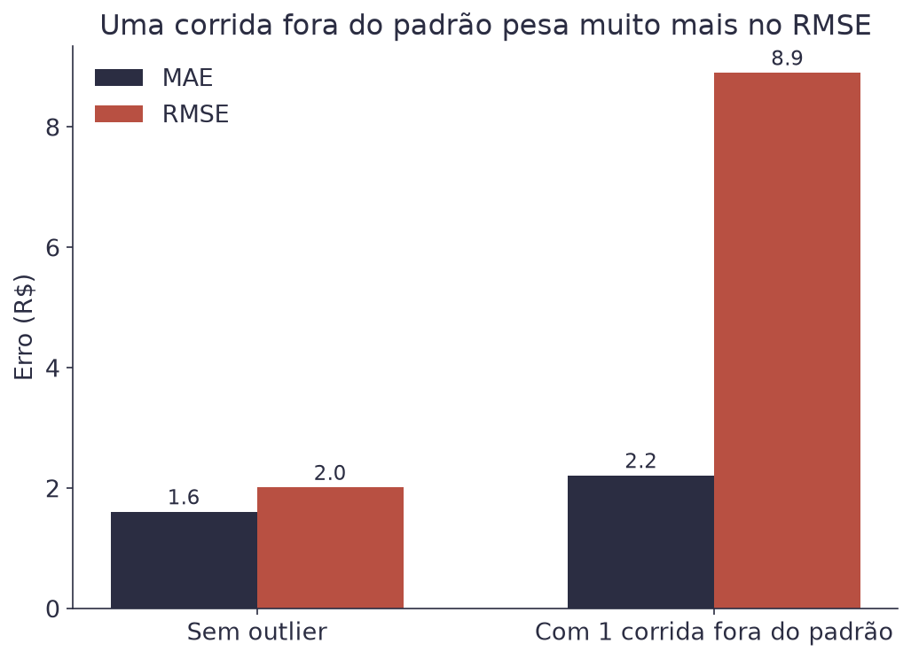
Por isso, quando o RMSE de um modelo está bem mais alto que o MAE, isso é um sinal de que existem alguns erros grandes escondidos na média. Vale a pena investigar quais corridas eles são.
O MAPE engana de outro jeito, e este é mais sutil. Separe as 200 corridas por distância e olhe as duas métricas lado a lado:
| Faixa | Corridas | Preço médio | MAE | MAPE |
|---|---|---|---|---|
| até 5 km | 89 | R$ 11,32 | R$ 1,54 | 15,8% |
| 5 a 10 km | 86 | R$ 20,37 | R$ 1,55 | 8,2% |
| 10 a 15 km | 14 | R$ 30,92 | R$ 2,01 | 6,6% |
| acima de 15 km | 11 | R$ 47,45 | R$ 2,08 | 4,4% |
Leia a coluna do MAE: o modelo erra quase o mesmo em toda faixa, entre R$ 1,54 e R$ 2,08. Agora leia a do MAPE: ele vai de 15,8% a 4,4%, quase quatro vezes.
Nenhuma das duas está mentindo. O modelo erra o mesmo tanto em reais, e esse mesmo tanto é uma fatia bem maior de uma corrida barata. Se o seu problema é comprar combustível, o MAE responde. Se é a percepção do cliente sobre o preço estar certo, o MAPE responde.
Até aqui o modelo devolve um número: uma corrida de 8 km custa R$ 22,55. E aí vem a pergunta honesta: a sua corrida de 8 km vai custar isso?
Não. Vai custar em volta disso. Olhe de novo a nuvem de pontos: para 8 km existem corridas de R$ 19 e de R$ 26, todas de verdade. A reta acerta a média das corridas de 8 km, e nenhuma corrida sozinha é a média.
Um número único esconde isso. Uma faixa mostra.
Comece medindo o tamanho típico de um resíduo. Esse número se chama erro
padrão residual e costuma aparecer como s:
| Símbolo | Significado |
|---|---|
| a soma | os resíduos ao quadrado, os mesmos do MSE |
n - 2 |
em vez de n: dois números (w₀ e w₁) já foram gastos para ajustar a reta |
s |
o resíduo típico, em reais |
Nas 200 corridas, s = R$ 2,02. É quase o RMSE (R$ 2,01), e a diferença é
só esse n - 2 no lugar do n.
Os resíduos se espalham em torno da reta, e a maioria fica a menos de dois
s de distância. Daí a regra:
| Símbolo | Significado |
|---|---|
ŷ |
o preço que a reta previu para aquela distância |
2s |
R$ 4,04 nestes dados: a margem para cada lado |
Exemplo, para a corrida de 8 km: 22,55 ± 4,04, ou seja, de R$ 18,51 a
R$ 26,59. Essa frase é muito mais útil que "vai custar R$ 22,55", porque
ela é verdadeira.
Uma faixa que promete 95% e entrega 60% não serve para nada. Conte:
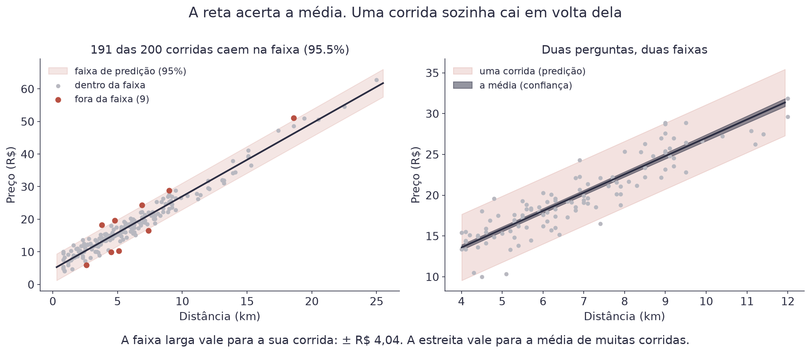
Nove corridas ficaram de fora, de 200. São 4,5%, e a faixa prometia deixar 5% de fora. Isso é o que se espera de uma faixa honesta, e é assim que se confere qualquer intervalo: conte quantos ficaram dentro.
O painel da direita mostra duas faixas, e a diferença entre elas é o ponto mais confundido do assunto inteiro.
| Pergunta | Faixa | Largura em 8 km |
|---|---|---|
| Quanto custa a sua corrida de 8 km? | intervalo de predição | ± R$ 4,00 |
| Quanto custa em média uma corrida de 8 km? | intervalo de confiança | ± R$ 0,31 |
A segunda faixa é treze vezes mais estreita, e a razão é direta. Com 200 corridas, a reta já conhece bem a média: a dúvida sobre ela é pequena, e encolhe conforme você coleta mais dados. Mas a variação entre corridas individuais (trânsito, horário, tarifa) não encolhe nunca, por mais dados que você junte. Ela é do mundo, não do modelo.
Atenção
Erro do dia
Entregar a faixa estreita quando a pergunta pedia a larga. É fácil de fazer, e o resultado é um sistema que promete R$ 22,55 ± R$ 0,31 e erra quase toda corrida. Antes de escolher a faixa, pergunte: estou falando de uma corrida ou da média de muitas?
A regra do ± 2s é uma simplificação boa, e vale a pena saber de onde ela
vem. A fórmula exata do intervalo de predição é:
| Símbolo | Significado |
|---|---|
x₀ |
a distância da corrida que você quer prever |
t |
um número de tabela, perto de 2 quando há muitos dados |
| a raiz | quase 1 aqui, e cresce quando x₀ foge da média das distâncias |
Ninguém calcula isso à mão, e você não precisa decorar. Repare só no que
ela diz: com n = 200, t vale 1,97 e a raiz vale 1,003, então o
resultado é ± R$ 4,00. A regra prática deu ± R$ 4,04. Quatro centavos
de diferença.
E repare no último termo: a faixa abre quando você prevê longe da média das distâncias. Prever uma corrida de 60 km com dados que vão até 25 km é possível, e a fórmula avisa que a incerteza cresce. Fora da faixa dos dados, ela deixa de avisar direito: ali não há informação nenhuma.
corridas_app.csvSe ainda não sabe como abrir o notebook, veja Antes de começar primeiro.
LinearRegression no scikit-learn: a classe que você vai usar no notebook desta aula.Nota
O que você leva desta aula
Você vai aprender a prever um número usando várias informações ao mesmo tempo, a incluir no modelo uma coluna que não é número (o bairro), e a ler cada coeficiente em português, sabendo o que ele mede e o que ele não mede.
Você quer alugar um apartamento e abre um site de imóveis. Dois anúncios têm exatamente 70 m². Um pede R$ 2.400 e o outro pede R$ 3.500. A área é a mesma, então o preço não vem só dela.
Vem também do número de quartos, da idade do prédio e, principalmente, do bairro. Na Aula 1 a reta usava uma informação só. Aqui você aprende a usar todas as informações ao mesmo tempo, que é como qualquer modelo de verdade funciona.
O dataset desta aula tem 300 apartamentos, com quatro informações sobre cada um: área, quartos, idade e bairro.
Comece pelo que você já sabe fazer: uma reta com a área.
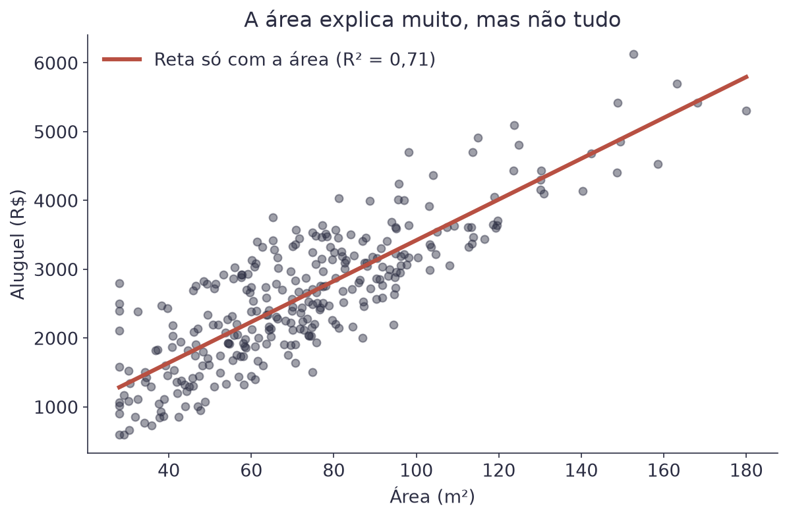
A reta acompanha a tendência, e o R² dá 0,71. Não é ruim. Mas repare na
espessura da nuvem: para uma mesma área existem aluguéis bem diferentes. É
essa faixa vertical que as outras informações vão explicar.
O modelo continua sendo uma soma. Cada informação entra multiplicada pelo seu próprio peso.
| Símbolo | Significado |
|---|---|
ŷ |
o aluguel previsto, em reais |
p |
quantas informações (variáveis) o modelo usa |
x₁, x₂... |
as informações do apartamento: área, quartos, idade |
w₁, w₂... |
o peso de cada informação |
w₀ |
o valor base, quando todas as informações valem zero |
Escrever x₁ + x₂ + ... cansa quando o modelo tem muitas variáveis. A
forma compacta usa o mesmo somatório da Aula 1:
| Símbolo | Significado |
|---|---|
j |
o número da variável: 1 para a área, 2 para os quartos... |
Σ |
"some para todas as variáveis, de j = 1 até j = p" |
Exemplo com três variáveis, usando os pesos que o modelo desta aula
encontrou. Para um apartamento de 70 m², com 2 quartos e 10 anos, no
Centro: 442 + 25,10 × 70 + 220,10 × 2 + (−11,60) × 10 = 2.521 reais.
Esta é a boa notícia. A função de perda continua sendo o MSE, e o gradiente descendente continua fazendo o mesmo. A única diferença é o tamanho do gradiente: em vez de duas inclinações, agora ele tem uma para cada peso.
| Símbolo | Significado |
|---|---|
∂MSE/∂wⱼ |
a inclinação do erro quando só o peso wⱼ se mexe |
p |
o número de variáveis do modelo |
A regra de atualização também é a mesma, aplicada a cada peso, passo a passo:
| Símbolo | Significado |
|---|---|
t |
o número do passo |
α |
a taxa de aprendizado, o tamanho do passo |
Com duas variáveis, a reta vira um plano. Com três ou mais ninguém consegue desenhar, mas a conta é idêntica.
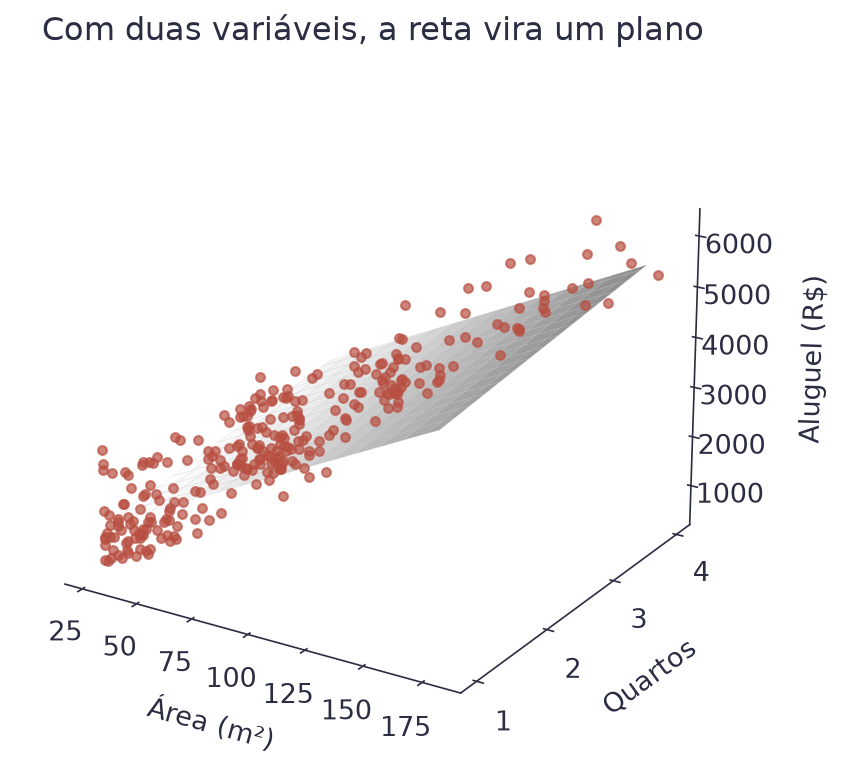
Área, quartos e idade são números. O bairro é um nome: Centro, Jardins ou Vila Nova. E ele importa muito.
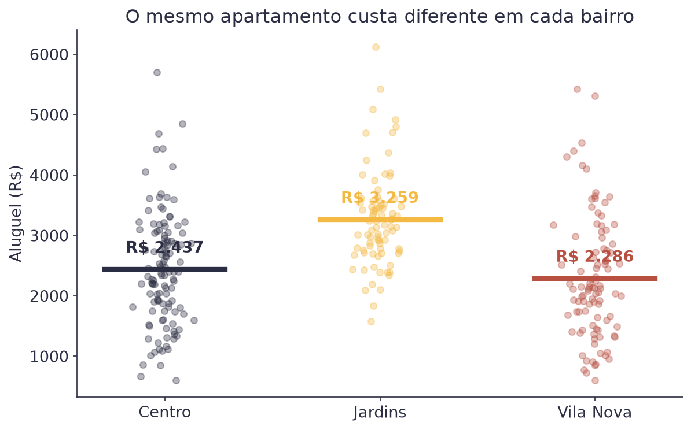
A tentação é numerar: Centro = 1, Jardins = 2, Vila Nova = 3. Não faça isso. O modelo trataria esses números como quantidade, e passaria a acreditar em duas bobagens. Que Vila Nova é "três vezes" o Centro. E que a distância entre Centro e Jardins é a mesma que entre Jardins e Vila Nova.
O jeito certo é criar uma coluna nova para cada bairro, com 0 ou 1. Essas colunas se chamam variáveis indicadoras (dummy variables).
| Bairro do anúncio | bairro_Jardins |
bairro_Vila Nova |
|---|---|---|
| Centro | 0 | 0 |
| Jardins | 1 | 0 |
| Vila Nova | 0 | 1 |
Repare que existem três bairros e só duas colunas. O Centro é a categoria de referência: ele aparece quando as duas colunas valem zero. Sempre sobra uma categoria de fora, e é isso que você quer. Se criasse as três colunas, uma delas seria adivinhável a partir das outras duas, e o modelo ficaria com infinitas soluções equivalentes.
Com as duas colunas novas, o modelo fica assim:
| Símbolo | Significado |
|---|---|
jardins |
vale 1 se o apartamento é no Jardins, 0 se não é |
vila |
vale 1 se o apartamento é na Vila Nova, 0 se não é |
w₄, w₅ |
quanto cada bairro soma ou tira, em relação ao Centro |
Exemplo: o mesmo apartamento de 70 m², 2 quartos e 10 anos custa R$ 2.521
no Centro. No Jardins, a coluna jardins passa a valer 1, e o aluguel
previsto sobe para 2.521 + 828 = 3.349 reais.
Cada coeficiente responde a uma pergunta muito específica: quanto muda o aluguel se esta variável subir uma unidade e todas as outras ficarem paradas?
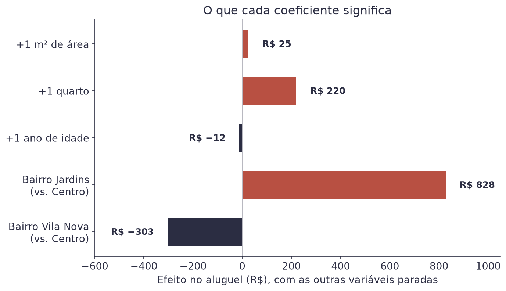
Traduzindo o gráfico para frases:
| Coeficiente | Valor | Lê-se assim |
|---|---|---|
| área | +25,10 | cada m² a mais soma R$ 25,10 no aluguel |
| quartos | +220,10 | um quarto a mais soma R$ 220,10, na mesma área |
| idade | −11,60 | cada ano de prédio tira R$ 11,60 |
| Jardins | +827,60 | o mesmo apartamento no Jardins custa R$ 827,60 a mais que no Centro |
| Vila Nova | −303,20 | e na Vila Nova custa R$ 303,20 a menos que no Centro |
O w₀ de 442 reais é o valor base: o que o modelo prevê para um
apartamento de 0 m², 0 quartos, novo, no Centro. Esse apartamento não
existe. Isso é normal, e não invalida o modelo. O papel de w₀ é ajustar
a altura de todo o resto.
Atenção
Erro do dia
Olhar para o gráfico acima e concluir que "o bairro é a variável mais importante, porque a barra é maior". As barras estão em unidades diferentes. Uma delas é o efeito de um metro quadrado, a outra é o efeito de mudar de bairro. Vinte metros quadrados a mais valem R$ 502, quase tanto quanto trocar o Centro pelo Jardins. Coeficiente grande não significa variável importante: significa que a unidade daquela variável é pequena.
Este é o ponto mais difícil da aula, e vale a pena ir devagar.
Sozinha, a área tem coeficiente 29,70. No modelo completo, ela cai para 25,10. A área não mudou. A pergunta é que mudou.
Quando a área é a única variável, ela leva o crédito por tudo que anda junto com ela. Apartamentos maiores costumam ter mais quartos: neste dataset, a correlação entre área e quartos é de 0,82. Sem a coluna de quartos no modelo, o efeito dos quartos se esconde dentro do coeficiente da área.
Quando os quartos entram, cada um fica com a sua parte. Por isso o coeficiente da área diminui. Ele passou a significar "o efeito de mais um metro quadrado, no mesmo número de quartos".
O mesmo raciocínio explica um número estranho deste dataset. A Vila Nova tem a maior área média (76,5 m²) e o menor aluguel médio (R$ 2.286). Isso não é contradição. O coeficiente da Vila Nova compara apartamentos de mesma área, e aí o bairro sai devendo.
Existe uma armadilha aqui. Toda variável nova, por pior que seja, faz o
R² subir ou ficar igual. Ele nunca cai.
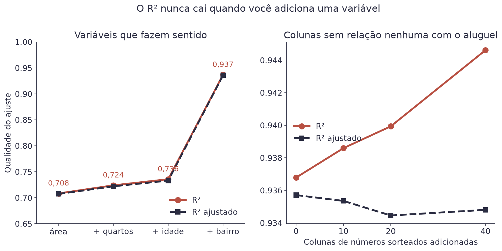
A defesa contra isso é o R² ajustado, que desconta do R² o preço de
cada variável nova.
| Símbolo | Significado |
|---|---|
n |
quantos apartamentos existem na tabela |
p |
quantas variáveis o modelo usa |
R² |
o R² comum, aquele da Aula 1 |
Exemplo com o modelo completo: n = 300, p = 5 e R² = 0,937. A conta
dá R² ajustado de 0,936. A diferença é pequena porque as cinco variáveis
são boas. Encha o modelo de colunas sorteadas e a diferença cresce.
A regra prática: se você adicionou uma variável e o R² ajustado caiu,
essa variável não estava pagando o próprio custo.
A seção anterior mostrou o R² ajustado como diagnóstico. Ele ajuda, e não
resolve. O jeito direto de saber se um modelo presta é guardar dados que
ele nunca viu.
from sklearn.model_selection import train_test_split
treino_x, teste_x, treino_y, teste_y = train_test_split(
tabela, dados["aluguel"], test_size=0.3, random_state=42)
Você treina com 70% dos apartamentos e mede com os outros 30%. A regra é simples e não tem exceção: o modelo nunca pode ver os dados de teste durante o treino. Se ele vir, a medida deixa de valer.
Com essa separação, dá para enxergar o problema que o R² ajustado só
apontava de longe. Comece com as 5 colunas boas e vá enchendo o modelo de
colunas de números sorteados:
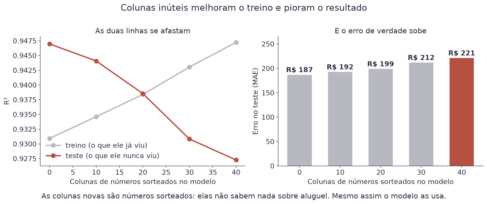
| Colunas sorteadas | R² no treino |
R² no teste |
Erro no teste |
|---|---|---|---|
| nenhuma | 0,931 | 0,947 | R$ 187 |
| 10 | 0,935 | 0,944 | R$ 192 |
| 20 | 0,938 | 0,939 | R$ 199 |
| 40 | 0,947 | 0,927 | R$ 221 |
Leia as duas colunas do meio na horizontal. O R² de treino sobe de
0,931 para 0,947, e o de teste desce de 0,947 para 0,927. O modelo
está ficando melhor no que já viu e pior no que importa.
Isso tem nome: sobreajuste (overfitting). O modelo decorou o ruído das 210 linhas de treino em vez de aprender a regra.
Por que o modelo usa colunas que não sabem nada? Porque nada o impede. O gradiente descendente só tem uma ordem: minimize o erro no treino. Se dar um coeficiente de 40 reais a uma coluna sorteada tira um centavo do erro, ele dá.
A regularização muda a ordem. Em vez de "minimize o erro", ela diz "minimize o erro e mantenha os coeficientes pequenos":
| Símbolo | Significado |
|---|---|
| MSE | o erro de sempre, o que o modelo já minimizava |
| penalidade | um número que cresce quando os coeficientes crescem |
α |
a força do freio: 0 desliga, quanto maior mais aperta |
Exemplo: com α = 0, o custo é só o MSE e nada muda. Com α gigante,
compensa zerar todos os coeficientes e prever a média para todo mundo. O
valor útil está no meio, e quem escolhe é a validação cruzada.
O scikit-learn traz três penalidades, e a diferença entre elas está só na conta do "penalidade(w)".
| Símbolo | Significado |
|---|---|
wⱼ² |
o coeficiente da variável j, elevado ao quadrado |
Σ |
some para todas as p variáveis do modelo |
Exemplo: um coeficiente de 10 contribui com 100 para a penalidade, e um de 1 contribui com 1. Cortar o de 10 pela metade economiza 75; cortar o de 1 pela metade economiza 0,75. Cem vezes menos.
É por isso que o Ridge espreme os grandes e deixa os pequenos quase em paz. E é por isso que nenhum chega a zero: quanto menor o coeficiente, menor o prêmio por encolher mais um pouco. Sempre sobra um pouquinho.
from sklearn.linear_model import RidgeCV
modelo = RidgeCV(alphas=np.logspace(-2, 3, 60)).fit(treino_x, treino_y)
| Símbolo | Significado |
|---|---|
\|wⱼ\| |
o coeficiente da variável j, sem o sinal |
Σ |
some para todas as p variáveis do modelo |
Exemplo: cortar um coeficiente de 0,2 para 0 economiza 0,2 na penalidade. Cortar um de 10,2 para 10 economiza os mesmos 0,2. O desconto é o mesmo, não importa o tamanho.
Aí está a diferença inteira. Sem prêmio maior para os grandes, o freio empurra os coeficientes inúteis até zero, e a coluna sai do modelo.
from sklearn.linear_model import LassoCV
modelo = LassoCV(alphas=np.logspace(-2, 3, 60), cv=5).fit(treino_x, treino_y)
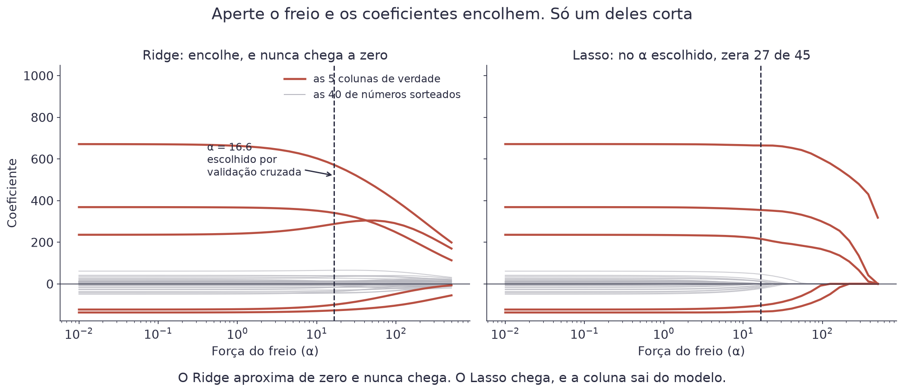
Repare no painel da direita: as linhas cinzas tocam o zero e ficam lá. No α escolhido, o Lasso zerou 27 das 45 colunas, e quase todas eram ruído.
| Símbolo | Significado |
|---|---|
ρ (o l1_ratio) |
quanto da penalidade é Lasso: 1 é Lasso puro, 0 é Ridge puro |
α |
a força do freio, como antes |
Ele existe por um motivo prático. Quando duas colunas andam muito juntas (a área e os quartos, com correlação de 0,82), o Lasso costuma escolher uma e zerar a outra, meio ao acaso. O ElasticNet segura as duas.
from sklearn.linear_model import ElasticNetCV
modelo = ElasticNetCV(alphas=np.logspace(-2, 3, 60),
l1_ratio=[0.1, 0.5, 0.9, 1.0], cv=5).fit(treino_x, treino_y)
Com as 5 colunas boas mais 40 sorteadas:
| Modelo | α escolhido |
R² no teste |
Erro no teste | Colunas zeradas |
|---|---|---|---|---|
| Sem freio | — | 0,927 | R$ 221 | 0 de 45 |
| RidgeCV | 4,24 | 0,927 | R$ 220 | 0 de 45 |
| LassoCV | 16,61 | 0,941 | R$ 197 | 27 de 45 |
| ElasticNetCV | 16,61 | 0,941 | R$ 197 | 27 de 45 |
Três coisas para ler nessa tabela, e as três são honestas.
O Ridge quase não ajudou. Ele encolheu os coeficientes do ruído (a soma deles caiu de 668 para 660), e isso não bastou. Quando o problema é coluna que não deveria estar ali, encolher não resolve: precisa cortar.
O Lasso ajudou de verdade. O erro caiu de R$ 221 para R$ 197, e a soma dos coeficientes do ruído desabou de 668 para 186.
O ElasticNet deu exatamente o mesmo resultado do Lasso. Não é
coincidência: deixando ele escolher o l1_ratio entre 0,1 e 1,0, ele
escolheu 1,0, que é Lasso puro. Ou seja, perguntamos ao modelo qual
ferramenta usar, e ele respondeu.
Dica
E se as colunas forem todas boas?
Repetimos tudo sem as colunas sorteadas, só com as 5 de verdade. O R² de
teste deu 0,9470 nos três modelos, e o LassoCV escolheu α = 0,01, quase
zero. Regularização não é imposto: quando não há o que cortar, ela se
desliga sozinha. É por isso que dá para usar as versões CV por padrão.
O freio olha o tamanho dos coeficientes. E o tamanho de um coeficiente depende da unidade da variável, não da importância dela.
A área está em metros quadrados, então o coeficiente dela é R$ 25 por unidade. Se estivesse em hectares, o mesmo efeito viraria um coeficiente de R$ 250.000. Nada mudou no mundo, e o freio passaria a odiar essa coluna.
Veja o estrago no nosso caso. O mesmo Lasso, com e sem padronizar:
| Coluna | Sem padronizar | Padronizado |
|---|---|---|
| área | 29,20 | 646,13 |
| quartos | 52,48 | 186,24 |
| idade | −10,43 | −63,71 |
| Jardins | 643,51 | 335,23 |
| Vila Nova | −188,25 | −111,01 |
Sem padronizar, o bairro Jardins parece a variável mais forte do modelo e a área parece a mais fraca. Padronizado, a ordem se inverte: a área é a mais forte, com folga. A primeira leitura é um artefato de unidade.
A correção é uma linha, e ela vem antes do modelo:
from sklearn.preprocessing import StandardScaler
escala = StandardScaler().fit(treino_x)
treino_padronizado = escala.transform(treino_x)
teste_padronizado = escala.transform(teste_x)
Repare que o fit usa só o treino. Depois você aplica a mesma escala
no teste. Calcular a média e o desvio com os dados de teste juntos é
deixar o modelo espiar o que ele não deveria ver.
Atenção
Erro do dia
Rodar Ridge ou Lasso sem padronizar. O código funciona, não dá erro
nenhum, e o modelo passa a escolher o que cortar olhando a unidade de cada
coluna. Regressão comum não tem esse problema: só a regularizada tem.
Um detalhe que confunde muita gente: o α do Ridge e o do Lasso não
significam a mesma coisa, porque as duas classes normalizam a conta de
formas diferentes. Nunca compare os dois pelo número do α, e prefira as
versões RidgeCV, LassoCV e ElasticNetCV, que escolhem sozinhas.
| Situação | Escolha |
|---|---|
| Muitas colunas, e você suspeita que a maioria não serve | Lasso |
| Poucas colunas, todas plausíveis, e você quer só estabilizar | Ridge |
| Muitas colunas, com grupos de colunas parecidas entre si | ElasticNet |
| Você não sabe | ElasticNetCV com l1_ratio variando, e deixe ele decidir |
E uma regra que vale mais que a tabela: compare no conjunto de teste.
As três versões CV custam uma linha cada, e a resposta certa é a que
erra menos nos dados que o modelo nunca viu.
Depois de treinar, faça um gráfico dos resíduos contra os valores previstos. Ele custa dez segundos e diz muito.
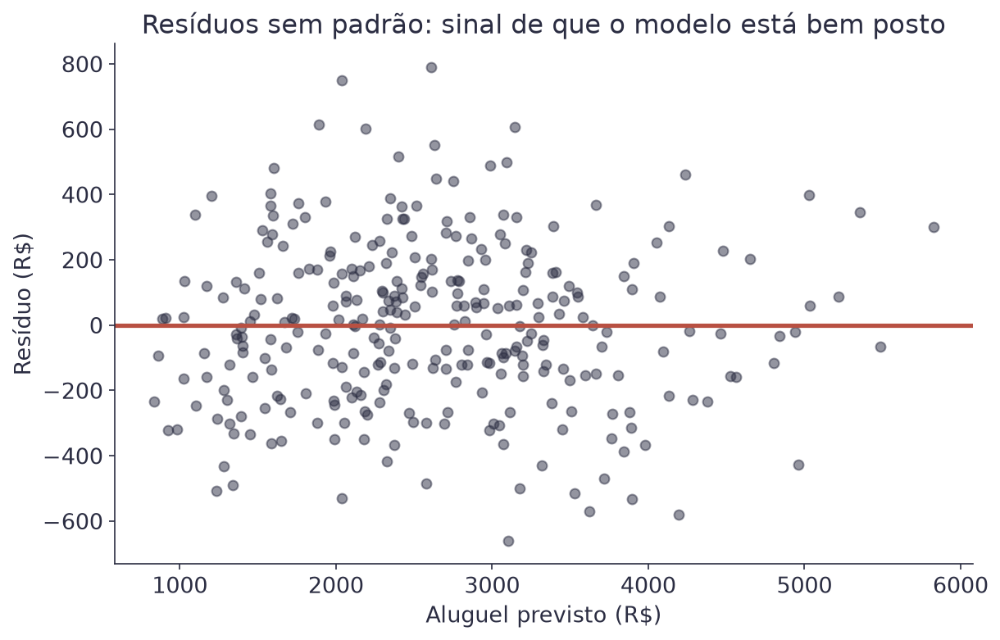
O que você espera: pontos espalhados em torno do zero, sem desenho nenhum. Isso significa que o modelo errou de forma parecida em toda a faixa de preços.
O que acende o alarme: um funil (o erro cresce com o preço previsto), uma curva (falta uma variável ou a relação não é reta), ou pontos muito longe do zero (candidatos a investigar um a um).
alugueis.csvSe ainda não sabe como abrir o notebook, veja Antes de começar primeiro.
pandas.get_dummies: a função que cria as variáveis indicadoras em uma linha.Ridge, Lasso e ElasticNet, com a fórmula exata que cada classe minimiza.Nota
O que você leva desta aula
Você vai aprender a prever uma categoria em vez de um número, usando a mesma soma de sempre esmagada pela função sigmoide. Vai aprender a ler os coeficientes em chances, a escolher o limiar de decisão, e a medir acertos com acurácia, precisão, recall e F1.
Uma empresa de streaming quer saber quem está prestes a cancelar. Não adianta descobrir depois: quando o cliente cancela, ele já foi. A pergunta útil é outra. Quem, entre os clientes de hoje, tem mais chance de cancelar no mês que vem?
Essa pergunta não pede um número como preço ou aluguel. Ela pede uma resposta de duas opções: cancela ou não cancela. Chamamos isso de classificação, e o modelo mais simples para resolver é a regressão logística.
O dataset desta aula tem 400 clientes, com quatro informações sobre cada
um: tempo de casa, valor mensal, chamados ao suporte e plano. A coluna
cancelou vale 1 para quem cancelou e 0 para quem ficou. No total, 36%
cancelaram.
Isso é um desbalanceamento de classes: há 255 clientes que ficaram e 145 que cancelaram. Não é extremo, mas já permite que um modelo que sempre responde "ficou" pareça bom pela acurácia. Por isso, além da porcentagem total de acertos, vamos medir quantos cancelamentos ele encontra e quantos alarmes são corretos.
A tentação é usar a regressão da Aula 1, com 0 e 1 no lugar do preço. Veja o que acontece.
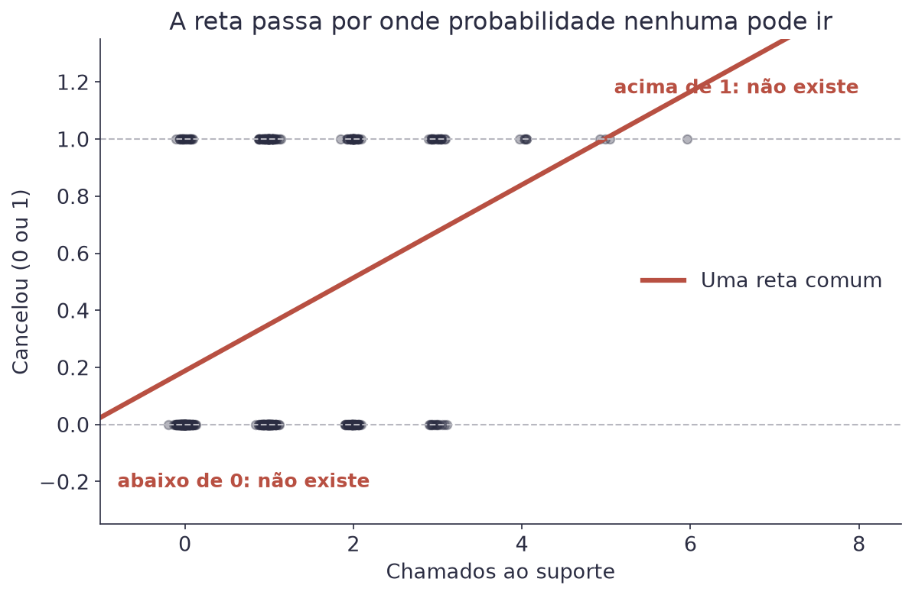
A reta não tem freio. Para quem nunca ligou para o suporte, ela prevê um valor negativo. Para quem ligou seis vezes, prevê mais que 1. Probabilidade negativa não existe, e probabilidade acima de 100% também não.
Precisamos de uma função que aceite qualquer número na entrada e devolva sempre algo entre 0 e 1.
Essa função existe, tem formato de S, e se chama sigmoide.
| Símbolo | Significado |
|---|---|
σ |
a letra grega sigma minúscula, o nome da função |
z |
qualquer número, positivo ou negativo, que entra na função |
e |
o número de Euler, aproximadamente 2,718 |
σ(z) |
o resultado, sempre entre 0 e 1: uma probabilidade |
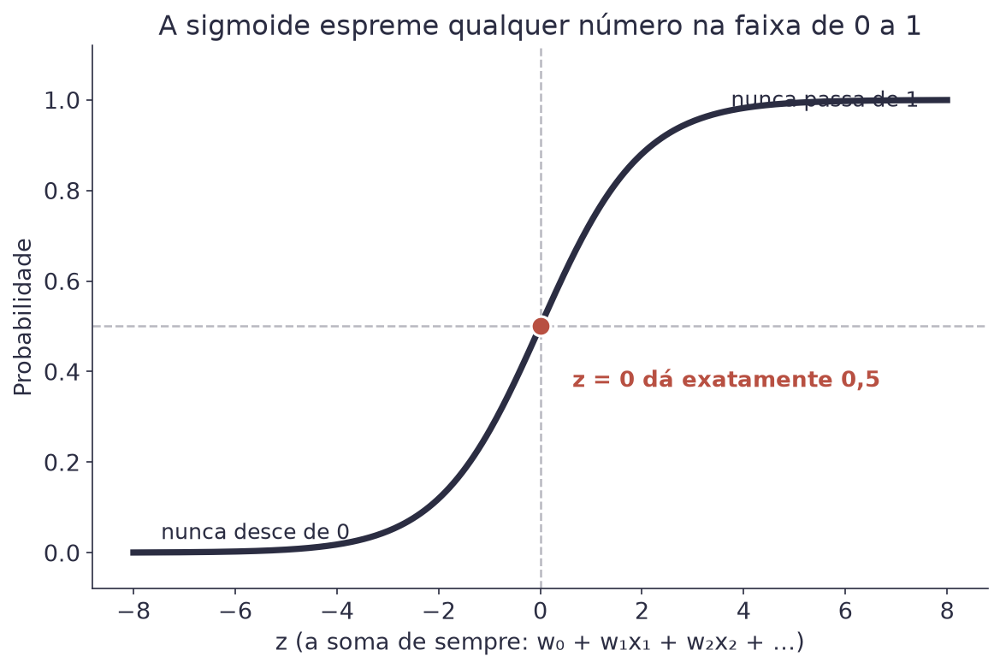
Três exemplos para pegar o jeito. Com z = 0, a conta dá 1/(1+1) = 0,5.
Com z = 2, dá 0,88. Com z = −2, dá 0,12. Números bem grandes chegam
perto de 1 sem nunca encostar, e bem negativos chegam perto de 0 pelo
mesmo motivo.
Por que essa curva, e não qualquer outra em formato de S? Duas razões honestas. A primeira é conveniência: a derivada dela é simples, e o gradiente descendente da Aula 1 agradece. A segunda é a que importa para você: com essa curva, cada coeficiente ganha uma leitura em chances de aposta, que aparece daqui a pouco. Outras curvas em S existem, e não têm essa leitura.
Agora junte as duas peças. A soma de sempre produz o z, e a sigmoide
transforma esse z em probabilidade.
| Símbolo | Significado |
|---|---|
P(cancelar) |
a probabilidade de o cliente cancelar, de 0 a 1 |
z |
a mesma soma da Aula 2, sem nenhuma novidade |
xⱼ, wⱼ |
a informação do cliente e o peso dela |
A parte de dentro é idêntica à regressão múltipla. O que muda é a casca: antes o resultado da soma era a previsão; agora ele passa pela sigmoide e vira probabilidade.
O treino também segue a mesma receita: uma função de perda e gradiente descendente. A perda deixa de ser o MSE e passa a ser a log loss, que pune com força quem erra com muita confiança. A ideia de descer a serra não muda em nada.
Veja a curva ajustada usando só os chamados ao suporte:
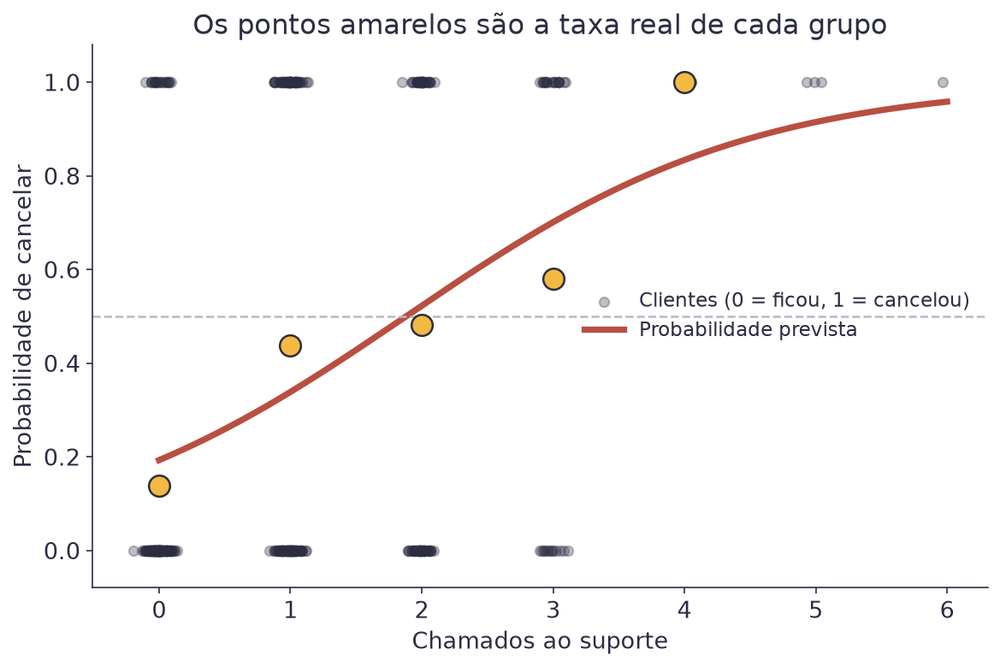
Estes são os pesos que o modelo desta aula encontrou:
| Variável | Coeficiente | Direção |
|---|---|---|
| tempo de casa (meses) | −0,079 | mais tempo de casa, menos risco |
| valor mensal (R$) | +0,011 | mais caro, mais risco |
| chamados ao suporte | +0,996 | cada chamado aumenta bastante o risco |
| plano Padrão (vs. Básico) | −0,184 | risco um pouco menor |
| plano Premium (vs. Básico) | −0,505 | risco bem menor |
O sinal você já sabe ler: positivo empurra a probabilidade para cima,
negativo puxa para baixo. O tamanho é que engana. O coeficiente não soma
probabilidade, porque a sigmoide não é reta. Ele soma no z, e o efeito
no fim depende de onde o cliente já estava.
Existe uma leitura exata, e ela usa chances (odds), no sentido de aposta: 3 para 1, 1 para 2.
| Símbolo | Significado |
|---|---|
p |
a probabilidade de cancelar |
1 − p |
a probabilidade de ficar |
p / (1 − p) |
a chance: quantas vezes cancelar é mais provável que ficar |
Com essa forma, cada coeficiente ganha uma tradução simples. Somar 1 na
variável xⱼ multiplica a chance por e elevado a wⱼ.
Exemplo com os chamados ao suporte, cujo coeficiente é 0,996. O número e
elevado a 0,996 dá 2,71. Ou seja: cada chamado a mais multiplica por
2,7 a chance de o cliente cancelar, com tudo o mais parado. Para o tempo
de casa, e elevado a −0,079 dá 0,92: cada mês a mais multiplica a chance
por 0,92, que é o mesmo que reduzir 8%.
Dois clientes de verdade, calculados com esse modelo:
| Cliente | Perfil | Probabilidade |
|---|---|---|
| Em risco | 6 meses de casa, R$ 130, 3 chamados, Premium | 0,95 |
| Tranquilo | 36 meses de casa, R$ 40, 0 chamados, Básico | 0,05 |
O modelo devolve uma probabilidade, mas a equipe de retenção precisa de uma lista de nomes. Alguém tem que decidir onde cortar. Esse ponto de corte se chama limiar (threshold).
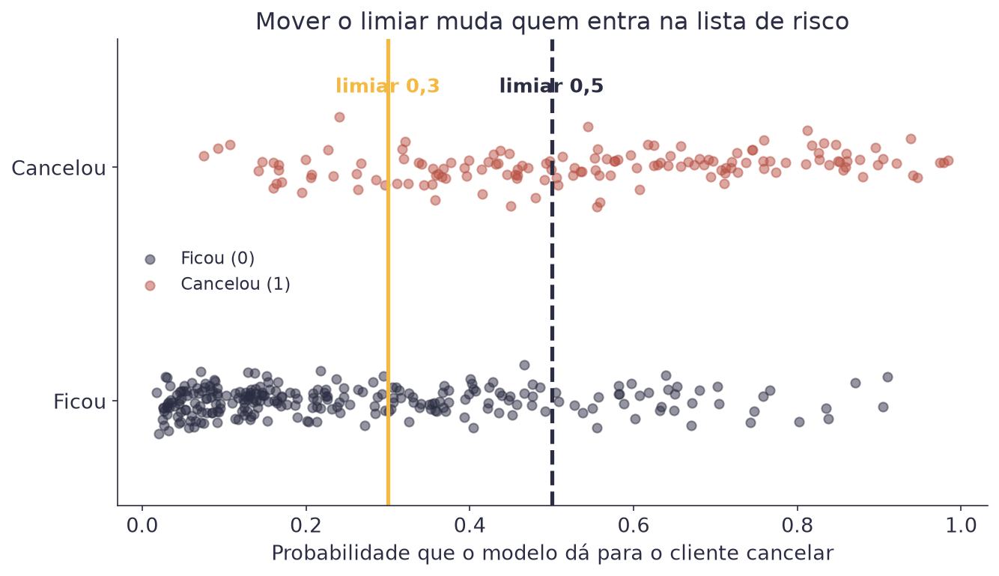
O limiar padrão é 0,5, mas ele não tem nada de sagrado. Ele só é o padrão porque é o meio. Escolher o limiar é uma decisão de negócio, e a próxima seção mostra o que se ganha e o que se perde ao mexer nele.
Antes das métricas, o quadro que gera todas elas. Com o limiar em 0,5, os 400 clientes se distribuem assim:
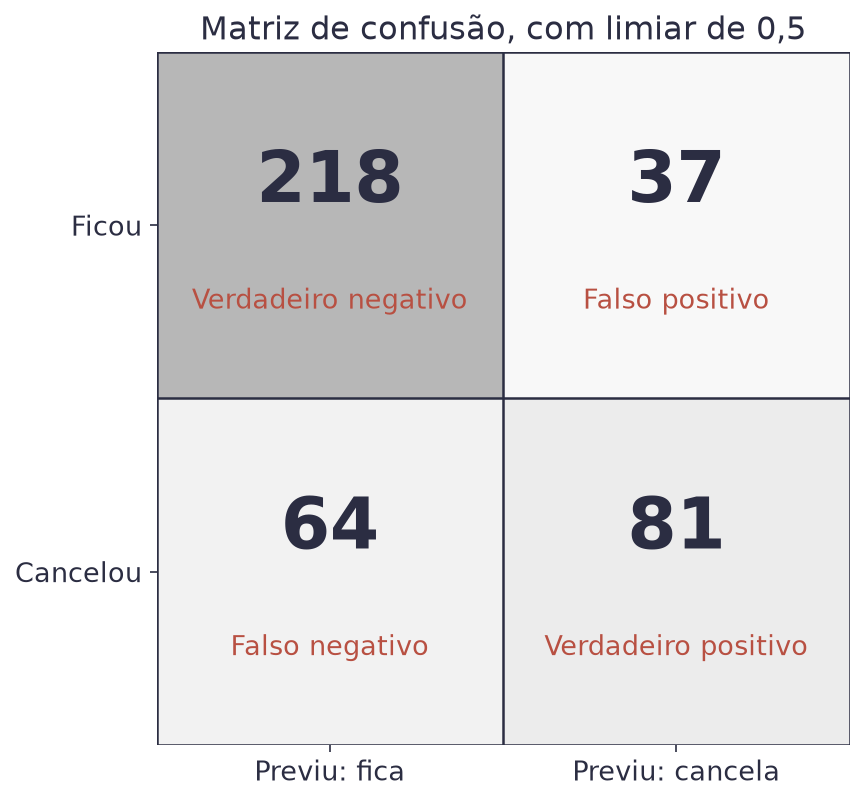
| Caixa | Quantos | O que aconteceu |
|---|---|---|
| Verdadeiro positivo (VP) | 81 | o modelo avisou e o cliente cancelou |
| Falso positivo (FP) | 37 | o modelo avisou e o cliente ficou |
| Falso negativo (FN) | 64 | o modelo não avisou e o cliente cancelou |
| Verdadeiro negativo (VN) | 218 | o modelo não avisou e o cliente ficou |
Os dois erros custam coisas diferentes. Um falso positivo gasta um cupom de desconto com quem ia ficar de qualquer jeito. Um falso negativo perde o cliente. Qual dos dois dói mais é uma pergunta da empresa, não da estatística.
| Símbolo | Significado |
|---|---|
| numerador | os acertos: avisou e cancelou, ou não avisou e ficou |
| denominador | todos os clientes |
No nosso caso: (81 + 218) / 400 = 0,75. O modelo acerta 75% das vezes.
Atenção
Erro do dia
Comemorar uma acurácia de 75% sem olhar mais nada. Neste dataset, 64% dos clientes não cancelaram. Um modelo preguiçoso que responde "ninguém cancela" para todo mundo acerta 64% e não serve para nada. A acurácia sozinha não distingue esse modelo do seu. Sempre compare a acurácia com a taxa da classe mais comum, e sempre olhe as outras métricas.
| Símbolo | Significado |
|---|---|
| precisão | dos clientes que o modelo apontou, quantos realmente cancelaram |
| recall | dos clientes que cancelaram, quantos o modelo conseguiu apontar |
VP, FP, FN |
as caixas da matriz de confusão |
No nosso caso: precisão de 81 / 118 = 0,69 e recall de 81 / 145 = 0,56.
Traduzindo: quando o modelo aponta alguém, ele acerta 69% das vezes; e ele
pega 56% de todos os cancelamentos que aconteceram.
Repare que as duas respondem a perguntas diferentes. Precisão é sobre a lista que você gerou. Recall é sobre o problema inteiro que existe lá fora.
| Símbolo | Significado |
|---|---|
F₁ |
a média harmônica entre precisão e recall |
| média harmônica | um tipo de média que puxa o resultado para o menor dos dois |
No nosso caso: F₁ = 0,62. O valor fica sempre entre a precisão e o
recall, e mais perto do pior dos dois. É por isso que ele serve como
número único: para o F1 subir, os dois precisam ir bem.
Medir o modelo nos mesmos clientes usados para treiná-lo produz resultados otimistas. Reserve uma parte como teste, sem usá-la para escolher o modelo. No restante, a validação cruzada divide o treino em partes chamadas dobras: treina em algumas, mede na que ficou de fora e repete até que cada dobra tenha servido como validação. A média mostra se o resultado é estável. Como uma classe é menor, usamos dobras estratificadas, que preservam aproximadamente a proporção de cancelamentos em cada parte.
Essa técnica será usada na Aula 4 para escolher hiperparâmetros. Depois da escolha, o teste reservado dá uma avaliação final. Os números das figuras de limiar a seguir foram calculados na base inteira para explicar as métricas; não são estimativas de desempenho em clientes novos.
Agora junte tudo. Baixar o limiar significa avisar mais gente, o que pega mais cancelamentos (recall sobe) e erra mais alarmes (precisão cai).
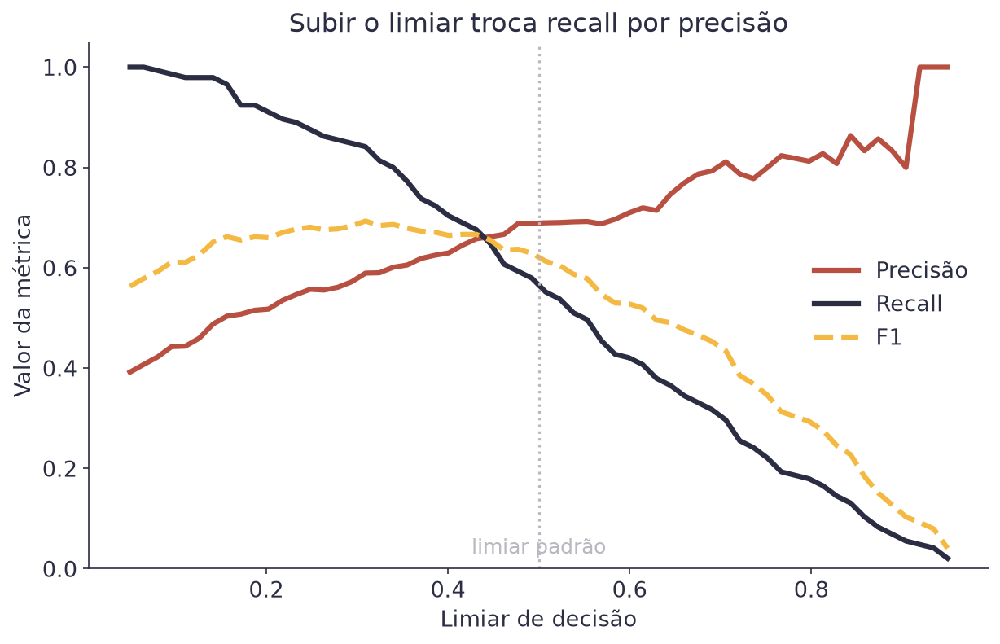
Compare os dois limiares no mesmo modelo:
| Limiar | Acurácia | Precisão | Recall | F1 | Lista de risco |
|---|---|---|---|---|---|
| 0,50 | 0,75 | 0,69 | 0,56 | 0,62 | 118 clientes |
| 0,30 | 0,72 | 0,58 | 0,84 | 0,68 | 212 clientes |
Baixar o limiar para 0,30 derrubou a acurácia e a precisão, e mesmo assim foi a melhor escolha para este problema. Com 0,30, o modelo pega 84% dos cancelamentos em vez de 56%. Se o cupom de desconto é barato e perder cliente é caro, essa troca compensa.
A pergunta não é "qual limiar é o correto". É "qual erro custa mais caro para nós".
A tabela acima compara dois limiares. Existem infinitos. A curva ROC mostra todos ao mesmo tempo.
Ela é um gráfico de dois números. TPR vem de true positive rate, taxa de verdadeiros positivos: entre os que cancelaram, a fração que o modelo encontrou. É o recall. FPR vem de false positive rate, taxa de falsos positivos: entre os que ficaram, a fração acusada por engano.
| Símbolo | Significado |
|---|---|
| TPR (taxa de verdadeiros positivos) | dos que cancelaram, quantos o modelo pegou. É o recall |
| FPR (taxa de falsos positivos) | dos que ficaram, quantos o modelo acusou à toa |
VP, FP, FN, VN |
as quatro caixas da matriz de confusão |
Exemplo, com o limiar em 0,50: o modelo pega 56% dos cancelamentos (TPR) e acusa à toa 15% de quem ia ficar (FPR). Esse par vira um ponto. Varie o limiar de 1 até 0, marque todos os pontos, e você tem a curva:
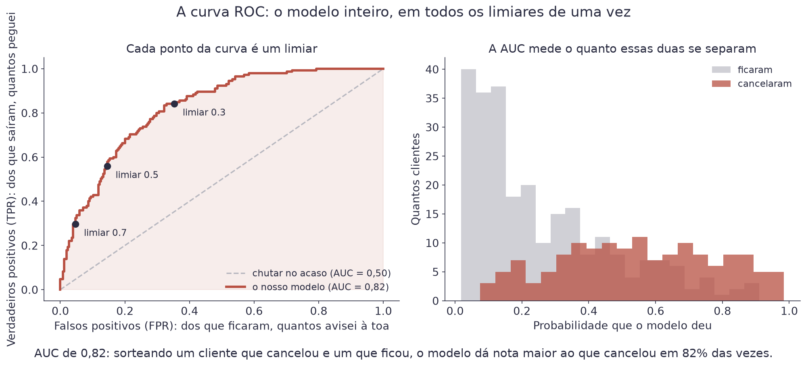
| Limiar | TPR (pego dos que saíram) | FPR (acuso dos que ficaram) |
|---|---|---|
| 0,70 | 30% | 5% |
| 0,50 | 56% | 15% |
| 0,30 | 84% | 35% |
| 0,20 | 91% | 49% |
A diagonal tracejada é o modelo que chuta. Quanto mais a curva sobe em direção ao canto de cima à esquerda, melhor: ali você pega muitos cancelamentos incomodando pouca gente.
O resumo da curva num número só é a AUC (area under the curve). A nossa dá 0,82. E ela tem uma leitura exata, que é a melhor coisa desta seção:
Sorteie um cliente que cancelou e um que ficou. A AUC é a probabilidade de o modelo ter dado nota maior ao que cancelou.
Isso não é analogia: é o que a AUC mede. Dá para conferir, e conferimos. Sorteamos 200.000 pares desses e contamos: o cancelador recebeu nota maior em 82,3% das vezes. A AUC calculada pela fórmula é 82,3%.
| AUC | O que significa |
|---|---|
| 0,50 | o modelo ordena tão bem quanto uma moeda |
| 0,82 | o nosso: acerta a ordem em 4 de cada 5 pares |
| 1,00 | ordena perfeitamente, o que costuma ser sinal de vazamento |
O painel da direita da figura mostra a mesma coisa por outro ângulo: as duas distribuições de probabilidade se sobrepõem bastante, e é essa sobreposição que impede a AUC de subir mais.
Nota
A vantagem e o limite da AUC
Ela não depende de limiar nenhum, então serve para comparar modelos antes de decidir a operação. E ela não depende de quantos casos positivos existem, então não cai na armadilha da acurácia.
O limite é o outro lado da mesma moeda: a AUC só enxerga a ordem. Se você somar 0,3 a todas as probabilidades, a ordem não muda e a AUC fica idêntica, mesmo que os números virem mentira. É por isso que existe a próxima seção.
O modelo diz que um cliente tem 30% de chance de cancelar. Pergunta justa: de cem clientes a quem ele deu 30%, quantos cancelam de fato?
Se a resposta for perto de trinta, o modelo é calibrado. As probabilidades dele são promessas que se cumprem, e você pode multiplicá-las por dinheiro. Se a resposta for cinquenta, o número 30% é só um lugar na fila, e não uma probabilidade.
Para conferir, agrupe os clientes por probabilidade prevista e compare com o que aconteceu:
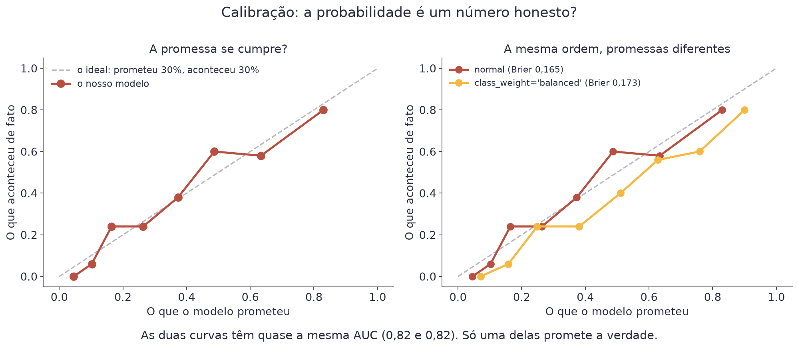
| O modelo prometeu | Cancelaram de fato |
|---|---|
| 4,5% | 0,0% |
| 10,2% | 6,0% |
| 16,4% | 24,0% |
| 26,4% | 24,0% |
| 37,3% | 38,0% |
| 48,7% | 60,0% |
| 63,4% | 58,0% |
| 83,0% | 80,0% |
Não é perfeito, e é bom o suficiente. Repare que as duas piores linhas são as de 16,4% e 48,7%, e que cada faixa dessas tem só cinquenta clientes: com tão poucos, o "aconteceu" balança sozinho. É o mesmo motivo pelo qual você não julga uma moeda por dez lançamentos.
A regressão logística costuma sair bem calibrada de fábrica, porque a função de perda que ela minimiza pune exatamente a probabilidade errada.
| Símbolo | Significado |
|---|---|
pᵢ |
a probabilidade que o modelo deu ao cliente i |
yᵢ |
o que aconteceu: 1 se cancelou, 0 se ficou |
| resultado | quanto menor, melhor; 0 seria a perfeição |
É o MSE da Aula 1, aplicado à probabilidade. O nosso dá 0,165. Ele sozinho não diz muito; ele serve para comparar duas versões do mesmo modelo.
Aqui está a demonstração que vale a seção inteira. Treinamos o mesmo
modelo com class_weight="balanced", uma opção comum para dar mais peso à
classe minoritária:
| AUC | Brier | Probabilidade média | |
|---|---|---|---|
| Normal | 0,8233 | 0,165 | 0,363 |
class_weight="balanced" |
0,8229 | 0,173 | 0,457 |
| A verdade | 0,362 |
A AUC é praticamente idêntica: a ordenação não mudou nada. Mas a probabilidade média saltou de 0,363 para 0,457, enquanto a taxa real de cancelamento é 0,362. O segundo modelo passou a achar que quase metade da base vai embora.
Se você usar esse modelo para ordenar uma lista de ligações, tanto faz. Se usar para calcular quanto dinheiro está em risco, ele erra em 26%.
Atenção
Erro do dia
Usar class_weight="balanced", reamostragem ou SMOTE e depois tratar a
saída como probabilidade. Essas técnicas mudam de propósito a proporção de
classes que o modelo enxerga, e a probabilidade sai inflada. Elas não são
erradas: erradas são as contas de dinheiro feitas em cima delas.
O conserto se chama recalibração, e no scikit-learn é o
CalibratedClassifierCV. Um teste rápido antes: compare a probabilidade
média prevista com a taxa real. Se as duas não baterem, o modelo não está
calibrado.
Agora dá para fechar a decisão que ficou em aberto. Suponha, para o Clube:
| Erro | Custo |
|---|---|
| Falso positivo: cupom para quem ia ficar | R$ 20 |
| Falso negativo: cliente que foi embora | R$ 300 |
Com esses dois números, escolher o limiar deixa de ser opinião. Para cada limiar, conte os dois erros e some o prejuízo:
| Símbolo | Significado |
|---|---|
FP |
quantos falsos positivos aquele limiar produz |
FN |
quantos falsos negativos |
| resultado | o prejuízo total, em reais |
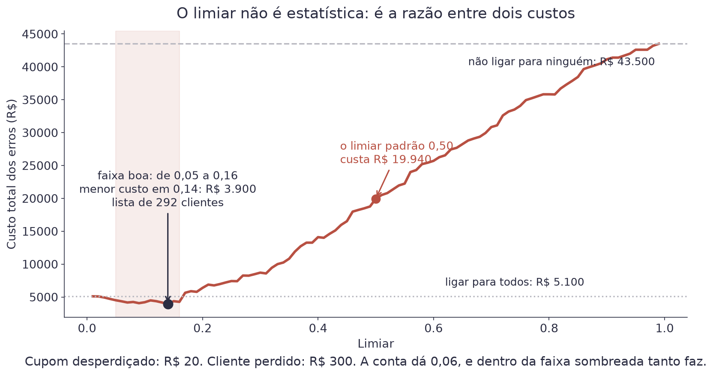
| Estratégia | Lista | Custo |
|---|---|---|
| Não ligar para ninguém | 0 | R$ 43.500 |
| Limiar padrão de 0,50 | 118 | R$ 19.940 |
| Melhor limiar (0,14) | 292 | R$ 3.900 |
| Ligar para todo mundo | 400 | R$ 5.100 |
Trocar 0,50 por 0,14 economiza R$ 16.040, e nenhuma linha do modelo mudou. Só a régua de decisão.
Existe até uma conta fechada para o limiar ideal:
| Símbolo | Significado |
|---|---|
custo_FP |
o preço de acusar quem ia ficar: R$ 20 |
custo_FN |
o preço de deixar passar quem foi embora: R$ 300 |
| resultado | o limiar a partir do qual vale a pena agir |
A leitura em português: aja sempre que a chance de perder o cliente valer mais que o preço do cupom. Com 20 e 300, ela dá 0,06. O mínimo que medimos caiu em 0,14, e os dois concordam mais do que parece: qualquer limiar entre 0,05 e 0,16 custa entre R$ 3.900 e R$ 4.500. A faixa é plana, e é isso que você leva para a reunião, não a segunda casa decimal.
Repare na última linha da tabela, que é desconfortável e verdadeira. Ligar para todo mundo custa R$ 5.100, quase tão bem quanto o modelo. Quando um erro custa quinze vezes o outro, a decisão quase se resolve sozinha, e o modelo agrega pouco. Descobrir isso antes de construir o modelo economiza mais que o modelo.
Nota
Sobre estes números
Todos vêm dos mesmos 400 clientes com que o modelo treinou, então são um pouco otimistas. Medimos a diferença: separando 30% dos clientes, a AUC cai de 0,83 no treino para 0,80 no teste. Pequena aqui, e a Aula 2 mostra por que ela nem sempre é.
assinaturas.csvSe ainda não sabe como abrir o notebook, veja Antes de começar primeiro.
LogisticRegression no scikit-learn: a classe usada no notebook desta aula.CalibratedClassifierCV.Nota
Como funciona
São 15 perguntas sobre as Aulas 1, 2 e 3. Nenhuma pede conta: todas pedem para você ler um resultado e dizer o que ele significa. Clique na opção que achar certa. A resposta e uma explicação aparecem na hora, e o placar no fim da página soma os acertos. Não vale nota, e o botão Recomeçar apaga tudo.
Questão 1
Um modelo prevê o preço de uma corrida por aplicativo com a reta preço = 5 + 2,20 × distância. O que o número 2,20 quer dizer?
O 2,20 é o peso w₁, o preço por quilômetro: ele diz quanto a previsão sobe a cada km a mais. O 5 é o w₀, a taxa fixa, que é o preço previsto para uma corrida de 0 km.
Questão 2
Uma reta que prevê o preço das corridas tem R² de 0,85. Qual é a leitura correta?
O R² compara a reta com o chute mais simples, que é prever o preço médio para todo mundo. Perto de 1, a reta explica quase toda a variação; perto de 0, ela não ajuda muito mais que a média. Ele não conta acertos exatos, e o erro em porcentagem é outra métrica (o MAPE).
Questão 3
Dois modelos têm o mesmo MAE, de R$ 1,60 por corrida. O RMSE do modelo A é R$ 2,00, e o do modelo B é R$ 6,50. O que o RMSE alto do modelo B sugere?
O RMSE eleva cada erro ao quadrado antes de tirar a média, então poucos erros grandes pesam muito nele. MAE igual e RMSE bem maior é o sinal de umas poucas previsões muito ruins. Vale investigar quais corridas são essas.
Questão 4
Num modelo de aluguel com área, quartos, idade do prédio e bairro, o coeficiente de quartos é +220,10. O que esse número diz?
Na regressão múltipla, cada coeficiente mede o efeito de uma unidade a mais daquela variável com todas as outras paradas. É por isso que o coeficiente de uma variável muda quando outra entra no modelo: a pergunta que ele responde muda.
Questão 5
No mesmo modelo, o coeficiente do bairro Jardins é +827,60, e o da área é +25,10 por metro quadrado. Dá para concluir que o bairro importa muito mais que a área?
Um coeficiente é o efeito de uma unidade da variável. O do bairro é o efeito de mudar de bairro; o da área é o efeito de um único metro quadrado. Coeficiente grande não quer dizer variável importante: pode querer dizer só que a unidade daquela variável é pequena.
Questão 6
Depois de colocar dezenas de colunas novas no modelo de aluguel, o R² no treino subiu de 0,931 para 0,947, e o R² no teste caiu de 0,947 para 0,927. O que aconteceu?
Toda coluna nova faz o R² do treino subir ou ficar igual, mesmo que seja inútil. Quem mostra a verdade é o teste, com dados que o modelo nunca viu. Treino melhorando e teste piorando é o sobreajuste. A regularização, como o Lasso, é o freio contra ele.
Questão 7
Num modelo de cancelamento de clientes, o coeficiente de chamados ao suporte é +0,996, e o de tempo de casa é −0,079. O que dá para concluir?
O sinal diz a direção: positivo empurra o risco para cima, negativo puxa para baixo. O tamanho não é uma porcentagem, porque a sigmoide não é uma reta. E −0,079 é o efeito de um mês de casa: ao longo de dois anos, ele pesa bastante.
Questão 8
Numa base de clientes, 64% não cancelam. Um modelo de cancelamento tem acurácia de 75%. O que dá para dizer?
Quando uma resposta é bem mais comum que a outra, a acurácia engana. Compare sempre com a taxa da classe mais comum e olhe as métricas que contam os cancelamentos encontrados. Encontrar 75% dos que cancelam seria um recall de 0,75, que é outra coisa.
Questão 9
A equipe de retenção reclama: "o modelo deixa passar muitos clientes que acabam cancelando". Qual métrica está baixa, e o que dá para fazer sem treinar o modelo de novo?
O recall responde "dos que cancelaram, quantos o modelo apontou?". Baixar o limiar põe mais gente na lista: o modelo encontra mais cancelamentos, mas também aponta mais gente que ficaria, e a precisão cai. Onde cortar é uma decisão de negócio.
Questão 10
O modelo de cancelamento tem AUC de 0,82. Qual é a leitura correta?
A AUC mede se o modelo ordena bem os clientes: 0,5 é chute, 1 é perfeito. Ela não depende de limiar nenhum, e por isso não é uma taxa de acertos. Como ela só olha a ordem, um modelo com boa AUC ainda pode dar probabilidades exageradas.
Questão 11
Um colega treina um modelo de aluguel com todos os 300 apartamentos e mede o R² nos mesmos 300: dá 0,95. Por que esse número não serve para dizer se o modelo é bom?
É como dar a prova com as mesmas questões da lista de exercícios: a nota mostra quem decorou, não quem aprendeu. Por isso separamos um conjunto de teste que o modelo nunca vê durante o treino. Só ele mede o desempenho em casos novos.
Questão 12
O que acontece numa validação cruzada com 5 dobras?
A validação cruzada funciona como provas simuladas feitas só com o treino. Cada parte serve de prova uma vez, e a média das notas é mais estável que uma prova só. Assim dá para comparar modelos sem gastar o conjunto de teste, que fica guardado para o fim.
Questão 13
Para escolher a força do freio da regularização, alguém testa 50 valores e fica com o que deu o melhor resultado no conjunto de teste. Depois, apresenta esse resultado como o desempenho do modelo. Qual é o problema?
Toda escolha feita olhando para o teste "vaza" informação da prova para o modelo. Com 50 tentativas, alguma vai bem no teste por sorte. O caminho certo é escolher com validação cruzada (é o que o LassoCV e o RidgeCV fazem) e medir o escolhido no teste uma única vez, no fim.
Questão 14
Qual destes é um hiperparâmetro, e não um parâmetro que o modelo aprende sozinho?
Os parâmetros (os pesos w) o modelo aprende sozinho com os dados, como um aluno aprende a matéria. Os hiperparâmetros são escolhas feitas antes do treino, como o professor decidir quanto tempo de revisão a turma vai ter. A força do freio e a taxa de aprendizado do gradiente descendente são hiperparâmetros: nós testamos valores e ficamos com o melhor.
Questão 15
Num modelo de aluguel com 45 colunas (5 de verdade e 40 de números sorteados), o Lasso zerou 27 coeficientes. O que isso quer dizer?
Sem freio, o modelo dá um pouco de peso até para colunas inúteis, porque isso reduz um tiquinho o erro no treino. A regularização cobra uma multa por coeficientes grandes. O Ridge encolhe todos os coeficientes sem zerar nenhum; o Lasso empurra os inúteis até zero, e a coluna sai do modelo. Por isso ele ajuda quando há muitas colunas suspeitas.
| Se errou a questão | Releia |
|---|---|
| 1, 2 ou 3 | Aula 1 — Regressão Linear Simples |
| 4, 5 ou 6 | Aula 2 — Regressão Múltipla |
| 7, 8, 9 ou 10 | Aula 3 — Regressão Logística |
| 11, 13 ou 15 | Aula 2: treino e teste e regularização |
| 12 | Aula 3: validação cruzada |
| 14 | Aula 1: a taxa de aprendizado e Aula 2: regularização |
Até aqui, cada aula ensinou uma peça isolada. Agora você vai construir um sistema pequeno com um classificador, tuning de hiperparâmetros com Optuna e uma tela para explorar as decisões.
| Aula | Conteúdo | Status |
|---|---|---|
| Aula 4 — Um Sistema de Ponta a Ponta | Classificador de cancelamento, validação cruzada, Optuna e uma tela em Streamlit | Disponível |
| Desafio Titanic | 45 minutos em equipe: um classificador de sobreviventes, com placar ao vivo da turma | Disponível |
Nota
O que você leva desta aula
Um modelo sozinho não resolve o problema de ninguém. Nesta aula, você
constrói um sistema inteiro em volta da regressão logística da Aula 3:
separar os dados, criar uma régua, preparar a tabela, treinar, ajustar,
testar, explicar e decidir. Em aula, fazemos tudo no notebook. O projeto
projeto-aula-04/ mostra o mesmo sistema organizado em arquivos, com um
painel.
O Clube do Café é uma assinatura mensal de café em grãos, com 2.000 assinantes. Todo mês, alguns cancelam: 29% já cancelaram. A equipe pode ligar para um cliente e oferecer um desconto, mas cada ligação custa dinheiro. A pergunta da empresa é:
Para quem vale a pena ligar esta semana?
O sistema dá a cada cliente uma nota de risco, de 0 a 1, e transforma essa nota numa lista de ligações.
Cada assinante tem dez informações: tempo de casa, plano, mensalidade,
forma de pagamento, se entrou com cupom, entregas atrasadas, reclamações
ao suporte, nota média dada aos cafés, dias sem entrar no app e idade. A
coluna cancelou é a resposta.
Dois problemas aparecem logo. 194 clientes nunca deram nota, então a avaliação deles está vazia. E as colunas vivem em réguas muito diferentes: a mensalidade vai de 30 a 150, e o cupom só vale 0 ou 1.
Um bom professor não entrega a prova final como lista de exercícios. Com o modelo é igual: 25% dos clientes vão para uma gaveta trancada, o teste, que só é aberto no fim.
Para comparar modelos antes disso, usamos provas simuladas: o treino é dividido em 5 pedaços, e cada pedaço serve de prova uma vez. A nota do modelo é a média das 5 provas. É a validação cruzada.
O primeiro "modelo" é preguiçoso: responde sempre "fica", sem olhar para o cliente. Ele acerta 71% das vezes e não encontra nenhum cancelamento. O F1 dele é zero.
Essa é a lição: quando uma resposta é bem mais comum que a outra, a acurácia engana. O sistema é julgado pelo F1.
Na cozinha, cada ingrediente tem seu preparo. Com os dados é igual:
| Problema | Onde | Solução |
|---|---|---|
| células vazias | avaliação | preencher com a mediana e marcar quem não tinha nota |
| réguas diferentes | colunas de números | padronizar |
| texto em vez de número | plano, forma de pagamento | uma coluna de 0 e 1 por opção |
| poucos valores enormes | dias sem acessar | encolher com o logaritmo |
Padronizar põe todas as colunas na mesma régua:
A mensalidade média é R$ 78,60, com desvio padrão de R$ 33,90. Quem paga R$ 129 vira 1,5: um pouco acima do normal.
Cada receita é um Pipeline, uma lista de passos feitos em ordem. O
ColumnTransformer manda cada grupo de colunas para a sua receita e junta
tudo numa tabela só. O preparo fica na mesma peça que o modelo, para
aprender médias e medianas só com o treino, sem espiar a prova final.
Na regressão logística, cada característica soma ou tira pontos de risco, e a sigmoide transforma o total num número entre 0 e 1. O que muda aqui é o jeito de aprender os pesos.
O SGD (gradiente descendente estocástico) é um aprendiz que olha os clientes um por um, em ordem sorteada. A cada palpite errado, ele ajusta um pouquinho os pesos. Na Aula 1, o gradiente descendente olhava todos os exemplos antes de cada ajuste; o SGD ajusta a cada exemplo.
Ele aprende rápido. Depois de ver 10 clientes, a AUC é 0,53, quase um chute. Depois de 50, passa de 0,75. Depois de 300, está em 0,78, e cada cliente novo ensina pouca coisa nova.
Sem nenhum ajuste, o modelo chega a F1 de 0,49 nas provas simuladas. O baseline tinha zero.
Os pesos o modelo aprende sozinho. Os hiperparâmetros são escolhas feitas antes do treino. Ajustamos dois:
alpha): impede o modelo de decorar os clientes
do treino. Freio de menos, ele decora; freio demais, fica simples demais;class_weight): com "balanced", cada cliente
que cancelou conta como 1,7 cliente, e o modelo presta mais atenção em
quem é minoria.O Optuna procura a melhor combinação como quem acerta o sal de uma receita: prova, ajusta, prova de novo. A nota de cada tentativa é o F1 nas provas simuladas.
def avaliar(tentativa):
forca = tentativa.suggest_float("forca", 0.00001, 0.1, log=True)
pesos = tentativa.suggest_categorical("pesos", [None, "balanced"])
modelo = montar_modelo(forca, pesos)
return cross_val_score(modelo, X_treino, y_treino, cv=dobras, scoring="f1").mean()
Em 30 tentativas, o F1 sobe de 0,49 para 0,58, com "balanced".
O modelo ajustado treina com o treino inteiro e faz a prova uma única vez. Dos 146 clientes do teste que cancelaram, ele encontra 113. O F1 é 0,62 e a AUC é 0,82, perto do que as provas simuladas prometiam: o modelo aprendeu de verdade, não decorou.
Para saber quanto um jogador importa, tire ele de campo e veja quanto o time piora. Aqui, tirar uma coluna é embaralhá-la: cada cliente recebe o valor de outra pessoa. Quanto mais a AUC cai, mais importante era a coluna. É a importância por permutação.
| Coluna | Queda na AUC |
|---|---|
| meses de casa | 0,125 |
| dias sem acessar | 0,048 |
| entregas atrasadas | 0,039 |
| avaliação média | 0,036 |
| idade | 0,000 |
O tempo de casa é o que mais pesa. A idade não ajuda em nada e pode sair do sistema. E importância não é causa: ela mostra em que o modelo presta atenção, não o que faz o cliente sair.
O modelo dá o risco. Quem decide a partir de que risco vale ligar é a empresa. Esse corte é o limiar.
Suponha que cada ligação custe R$ 10, que 30% de quem ia cancelar aceite o desconto, e que cada cliente salvo pague mais 4 meses. Ligar para 200 clientes custa R$ 2.000. Se 110 deles iam cancelar pagando R$ 80, o desconto segura 33, que pagam R$ 10.560 a mais. O lucro é R$ 8.560.
Escolher o limiar também é um ajuste, então ele sai das provas simuladas, e não da prova final. Com esses números, o melhor limiar é 0,25, e ele rende uns 20% a mais que o 0,50. Se cada ligação custasse R$ 60, o melhor limiar subiria para 0,85, e o 0,50 daria prejuízo. Mesmo modelo, mesmos clientes, decisão diferente.
Com o modelo pronto, dá para simular. O cliente de maior risco no teste tem 97% de risco. Se as entregas dele não tivessem atrasado, o modelo daria 90%. Zerando os atrasos de todo mundo, uns 190 clientes sairiam da lista de ligações.
O simulador mostra o que o modelo prevê. O modelo aprendeu associações, e só um teste na vida real mostra o efeito de uma mudança.
O projeto-aula-04/ organiza o mesmo sistema em arquivos, e vai um passo
além: o Optuna também testa tipos diferentes de freio.
| Arquivo | Papel |
|---|---|
modelos.py |
preparo, baseline, ajuste fino, avaliação e explicação |
treinar.py |
treina e guarda o modelo num arquivo |
app.py |
painel com visão geral, modelo, explicação, lista de ligações e simulador |
Treinar e usar ficam separados: o treino guarda o preparo e o modelo juntos num arquivo, e o painel só carrega esse arquivo.
cd projeto-aula-04
python -m venv .venv
.venv\Scripts\Activate.ps1 # Windows PowerShell
pip install -r requirements.txt
python treinar.py
streamlit run app.py
No macOS ou Linux, ative com source .venv/bin/activate.
O roteiro do projeto explica cada arquivo. O notebook da aula constrói o sistema passo a passo.
Nota
Como funciona
Em equipe, você tem 45 minutos para construir um classificador que diga quem sobreviveu ao naufrágio. Você treina com 1.000 passageiros, prevê outros 300 e envia as previsões para o placar da turma, que fica nesta mesma página. Ganha o maior F1.
Em 1912, o Titanic afundou na primeira viagem. Os dados deste desafio imitam os passageiros daquele navio: quem eram, em que classe viajavam, com quantos parentes, quanto pagaram. Eles são sintéticos: nenhum passageiro existe de verdade, e por isso a resposta não está em lugar nenhum da internet.
A tarefa é a da Aula 3: uma classificação com duas respostas possíveis. Sobreviveu (1) ou não sobreviveu (0).
titanic_treino.csv.titanic_teste.csv.envio.csv.| Coluna | O que é |
|---|---|
id_passageiro |
o número do passageiro. Não é característica: não use no modelo |
classe |
1, 2 ou 3: a classe da passagem |
sexo |
feminino ou masculino |
idade |
em anos |
irmaos_conjuge |
quantos irmãos ou cônjuges viajavam junto |
pais_filhos |
quantos pais ou filhos viajavam junto |
tarifa |
quanto a passagem custou |
porto_embarque |
Southampton, Cherbourg ou Queenstown |
sobreviveu |
a resposta: 1 se sobreviveu. Só existe no treino |
No treino, 35% dos passageiros sobreviveram. O teste tem a mesma
proporção, mas chega sem a coluna sobreviveu: a resposta fica só com o
professor.
O placar aceita um arquivo CSV com três colunas e os 300 passageiros do teste:
| Coluna | O que colocar |
|---|---|
id_passageiro |
os mesmos números de titanic_teste.csv |
sobreviveu |
a decisão do seu modelo: 0 ou 1 |
probabilidade |
a chance de sobreviver, de 0 a 1 (a saída do predict_proba) |
A última célula do notebook já monta o arquivo nesse formato:
envio = pd.DataFrame({
"id_passageiro": teste["id_passageiro"],
"sobreviveu": previsoes,
"probabilidade": probabilidades,
})
envio.to_csv("envio.csv", index=False)
Se o arquivo tiver algum problema (coluna faltando, passageiro a menos, valor fora de 0 e 1), o placar recusa o envio e explica o que corrigir. O envio recusado não conta no seu limite.
O placar mostra cinco métricas da Aula 3: acurácia, precisão, recall, F1 e AUC. A ordem é pelo F1, que junta precisão e recall num número só.
| Símbolo | Significado |
|---|---|
| precisão | dos passageiros que o modelo disse que sobreviveram, a fração que sobreviveu de verdade |
| recall | dos passageiros que sobreviveram de verdade, a fração que o modelo encontrou |
F₁ |
a média harmônica das duas: só fica alta se as duas forem altas |
Exemplo: um modelo com precisão de 0,60 e recall de 0,70 tem F1 igual a
2 × 0,60 × 0,70 / (0,60 + 0,70) = 0,646.
O placar usa o F1 porque a acurácia engana aqui. Prever que ninguém sobrevive acerta 65% dos passageiros, sem modelo nenhum, mas tem F1 zero: não encontra um sobrevivente sequer. Essa previsão aparece no placar como a régua. A sua equipe tem que ficar acima dela.
Em caso de empate no F1, desempata a AUC, que mede se o modelo dá probabilidades maiores para quem sobreviveu.
sexo, porto_embarque e até classe são categorias. O
pd.get_dummies da Aula 2 transforma cada uma em colunas de 0 e 1.
Aplique a mesma transformação no treino e no teste.Dica
O placar está no ar. Envie pelo quadro abaixo ou, se preferir uma tela maior, abra o placar numa aba nova: https://holes-orlando-perceived-showcase.trycloudflare.com
titanic_treino.csvtitanic_teste.csvSe ainda não sabe como abrir o notebook, veja Antes de começar primeiro.
Muitos problemas de previsão não são "prever um valor a partir de outro". São "prever o futuro de algo que muda com o tempo". Vendas de uma loja, número de acessos a um site, temperatura de uma cidade: tudo isso é uma série temporal.
| Aula | Conteúdo | Status |
|---|---|---|
| Aula 5 — Conceitos de Séries Temporais | Tendência, sazonalidade e ruído, o corte no tempo, previsões de referência, regressão com calendário e ARIMA | Disponível |
| Aula 6 — Séries Temporais com Prophet e TimesFM | Tendência, sazonalidades e feriados estimados pelo Prophet, previsão sem treino com o TimesFM, e o intervalo de incerteza | Disponível |
| Quiz — Séries Temporais | 10 perguntas de interpretação sobre as duas aulas | Disponível |
Nota
O que você leva desta aula
Você vai aprender a ler um gráfico ao longo do tempo, separando o que ele tem de tendência, de padrão que se repete e de ruído. Vai fazer três previsões sem modelo nenhum e usá-las como régua. Depois vai treinar os dois primeiros modelos de verdade, uma regressão com o calendário e um ARIMA, e ver quais deles vencem a régua.
Uma cafeteria perto de escritórios abre todo dia e precisa decidir quanto comprar de leite, quantos pães encomendar e quantas pessoas escalar. Errar para cima é desperdício. Errar para baixo é cliente indo embora.
A pergunta é simples: quanto vamos vender amanhã? A diferença para as aulas anteriores é que agora a ordem dos dados importa. O que aconteceu ontem ajuda a explicar hoje, e uma linha da tabela não pode trocar de lugar com outra.
Isso é uma série temporal: uma sequência de valores medidos ao longo do tempo, em intervalos regulares. Vendas por dia, acessos por hora, temperatura por minuto.
O dataset desta aula tem 1.096 dias de vendas, de janeiro de 2022 a dezembro de 2024.
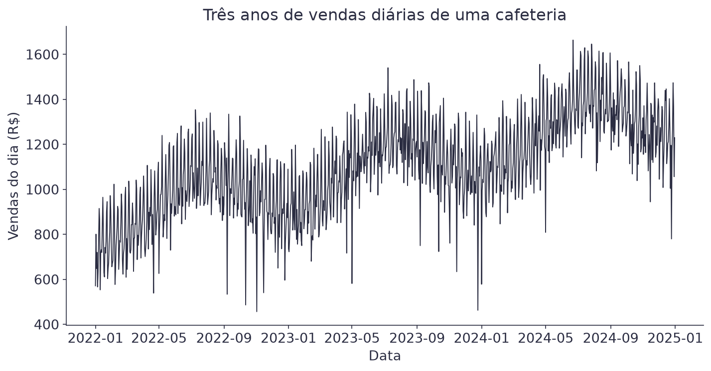
Toda série temporal pode ser lida como uma soma de peças. As três que importam nesta aula:
Ampliando doze semanas, dá para ver as três peças separadas:
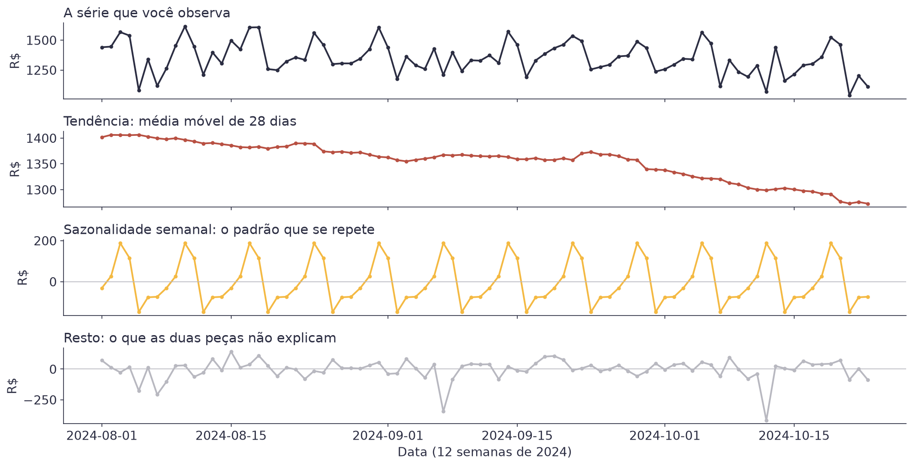
Repare no último painel. Aqueles dois mergulhos fundos não são ruído: são feriados, quando os escritórios fecham e a cafeteria vende R$ 719 em vez dos R$ 1.109 de um dia comum.
Como se separa a tendência do resto? A ferramenta mais simples é a média móvel: em vez de olhar o valor de cada dia, você olha a média dos últimos dias.
| Símbolo | Significado |
|---|---|
k |
o tamanho da janela: quantos dias entram na média |
t |
o dia que você está olhando |
yₜ₋ᵢ |
o valor de i dias atrás |
MMₖ(t) |
a média móvel de k dias, no dia t |
Exemplo com uma janela de 3 dias. Se as vendas foram R$ 900, R$ 1.100 e
R$ 1.000, a média móvel do terceiro dia é (900 + 1.100 + 1.000) / 3 = 1.000.
A janela decide o que você enxerga. Uma janela de 7 dias apaga a diferença entre os dias da semana e deixa o mês aparecer. Uma de 30 dias apaga também o mês e deixa só o rumo do ano.
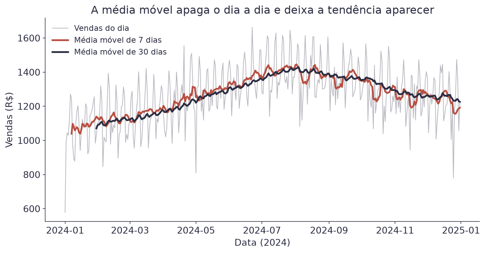
Uma janela de 7 dias é a escolha natural aqui, porque a sazonalidade principal é semanal. A regra vale em geral: use uma janela do tamanho do ciclo que você quer apagar.
Vale olhar a sazonalidade semanal de frente. Basta tirar a média de cada dia da semana ao longo dos três anos.
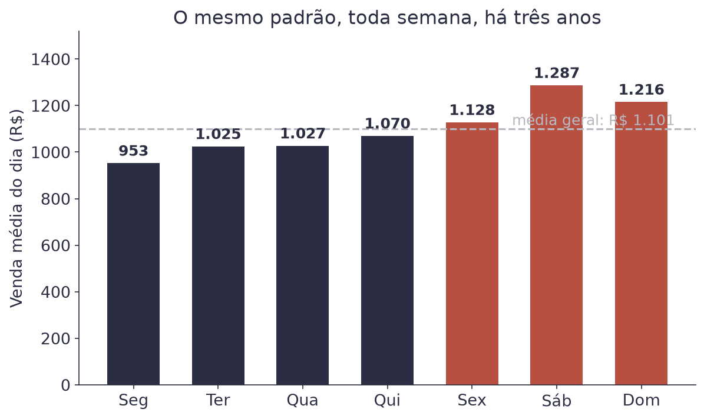
| Dia | Venda média |
|---|---|
| Segunda | R$ 953 |
| Terça | R$ 1.025 |
| Quarta | R$ 1.027 |
| Quinta | R$ 1.070 |
| Sexta | R$ 1.128 |
| Sábado | R$ 1.287 |
| Domingo | R$ 1.216 |
Esse desenho é estável, e é exatamente por isso que ele serve para prever. Um padrão que se repete há três anos provavelmente se repete na semana que vem.
Aqui mora o erro mais caro do assunto inteiro.
Nas aulas anteriores, separar treino e teste era sorteio: pegue 80% das linhas ao acaso para treinar e 20% para testar. Em série temporal isso está errado. Sortear linhas significa treinar com dados de dezembro para prever novembro, e ninguém prevê o passado.
O corte é sempre no tempo. O treino é tudo até uma data, e o teste é o que vem depois.
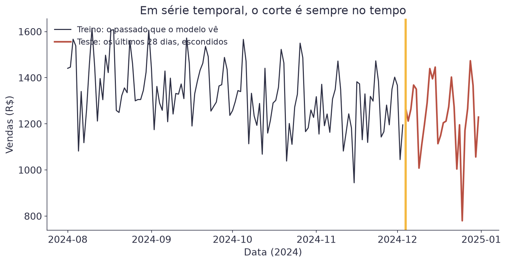
Atenção
Erro do dia
Usar train_test_split do scikit-learn numa série temporal, com o
shuffle no valor padrão. O código roda, as métricas saem ótimas, e o
resultado não vale nada: o modelo viu o futuro durante o treino. Isso se
chama vazamento de dados (data leakage), e o sintoma é sempre o
mesmo. Um desempenho excelente no teste que não se repete na vida real.
Antes de treinar qualquer coisa, faça as previsões mais burras possíveis. Elas são a régua: um modelo que não vence essas três não está pagando o próprio trabalho.
| Previsão de referência | Regra |
|---|---|
| Ingênua (naïve) | amanhã vai ser igual a hoje |
| Média móvel | amanhã vai ser a média dos últimos 7 dias |
| Sazonal ingênua | amanhã vai ser igual ao mesmo dia da semana passada |
As três, escritas como fórmula:
| Símbolo | Significado |
|---|---|
ŷₜ₊₁ |
a previsão para o dia seguinte |
yₜ |
o valor observado hoje |
yₜ₋₆ |
o valor de seis dias atrás, o mesmo dia da semana passada |
Exemplo: no sábado a cafeteria vendeu R$ 1.300. Para o domingo, a ingênua prevê os mesmos R$ 1.300. A sazonal ingênua prevê o que o domingo passado vendeu.
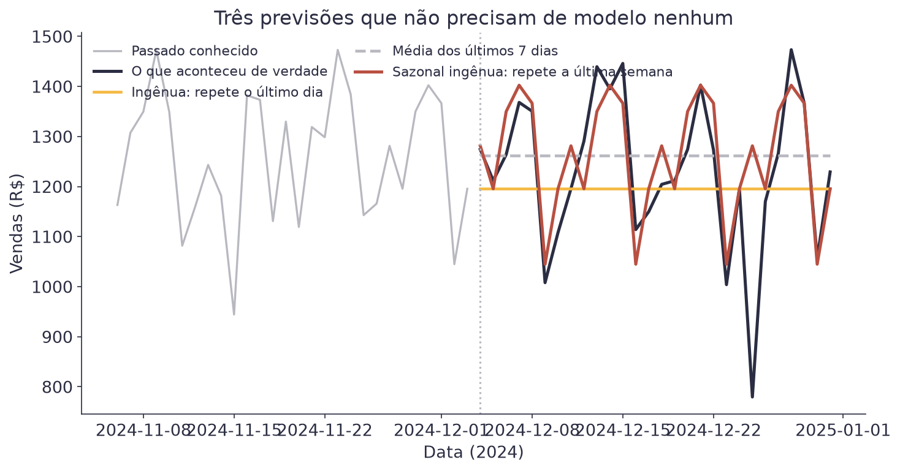
Nos últimos 28 dias, guardados como teste:
| Previsão | MAE | RMSE | MAPE |
|---|---|---|---|
| Ingênua | R$ 121,28 | R$ 156,45 | 10,3% |
| Média de 7 dias | R$ 115,93 | R$ 154,73 | 10,4% |
| Sazonal ingênua | R$ 63,78 | R$ 110,80 | 6,0% |
A sazonal ingênua erra quase metade das outras duas, e não usa modelo nenhum: ela só repete a última semana. Qualquer modelo desta série tem que começar batendo R$ 63,78 de MAE.
MAE, RMSE e MAPE você já conhece da Aula 1. Aqui o MAPE ganha uma importância extra, e vale relembrar por quê: ele mede o erro como fração do valor real, e por isso compara períodos de movimento diferente.
| Símbolo | Significado |
|---|---|
yₜ |
o valor real no dia t |
ŷₜ |
o valor previsto para o dia t |
| barras verticais | valor absoluto: o erro sempre conta positivo |
| resultado | o erro médio em porcentagem do valor real |
Exemplo: um erro de R$ 60 num dia de R$ 1.200 é 5%. O mesmo erro de R$ 60 num dia de R$ 600 é 10%. O MAPE conta o segundo como pior, e é isso que o torna útil para comparar períodos de movimento diferente.
O cuidado com o MAPE: ele explode quando o valor real chega perto de zero. Numa série que passa por zero, use MAE.
A sazonal ingênua é boa, mas não sabe nada. Ela não sabe que o negócio cresce, que dezembro vende menos que julho, nem que o Natal existe. Ela só copia a semana passada.
Você já conhece uma ferramenta que aprende esse tipo de coisa: a regressão múltipla da Aula 2. O truque é transformar o calendário em colunas. Cada peça da série vira uma coluna da tabela.
| Peça da série | Coluna na tabela |
|---|---|
| Tendência | dia_numero: 0 no primeiro dia, 1 no segundo, e assim por diante |
| Sazonalidade semanal | uma variável indicadora por dia da semana, com a segunda como referência |
| Sazonalidade anual | uma variável indicadora por mês, com janeiro como referência |
| Feriado | a coluna feriado, que já vem no arquivo com 0 ou 1 |
As variáveis indicadoras são as mesmas colunas de 0 e 1 que você usou para os bairros na Aula 2. Um sábado tem 1 na coluna do sábado e 0 nas outras. A segunda-feira tem 0 em todas, porque é a categoria de referência.
A regressão soma um peso para cada coluna, como sempre. Mostrando só quatro das 19 colunas:
| Símbolo | Significado |
|---|---|
ŷₜ |
a venda prevista para o dia t |
t |
o número do dia, a coluna dia_numero |
w₁ |
quanto a venda cresce a cada dia que passa: a tendência |
sábadoₜ, feriadoₜ |
colunas de 0 ou 1: valem 1 se o dia t é sábado, ou feriado |
w₂, w₃ |
quanto um sábado soma, e quanto um feriado tira |
O modelo completo, treinado nos 1.068 dias de treino, aprendeu estes pesos (entre outros):
| Peso | Valor | Tradução |
|---|---|---|
w₀ |
R$ 603 | uma segunda de janeiro, no primeiro dia da série |
w₁ |
R$ 0,45 por dia | cerca de R$ 164 a mais por dia de venda a cada ano |
| sábado | + R$ 337 | um sábado vende R$ 337 a mais que uma segunda |
| julho | + R$ 236 | julho vende R$ 236 a mais que janeiro |
| feriado | − R$ 387 | um feriado derruba a venda em R$ 387 |
Exemplo: o Natal de 2024 caiu numa quarta, o dia 1.089 da série, em
dezembro. A conta fica 603 + 0,45 × 1.089 + 80 + 1 − 387 ≈ 787. Os R$ 80
são o peso da quarta, e o R$ 1 é o peso de dezembro. A cafeteria vendeu
R$ 780 naquele dia.
O jeito mais claro de ver o que cada coluna faz é treinar três versões, cada uma com uma peça a mais, e medir as três nos mesmos 28 dias de teste.
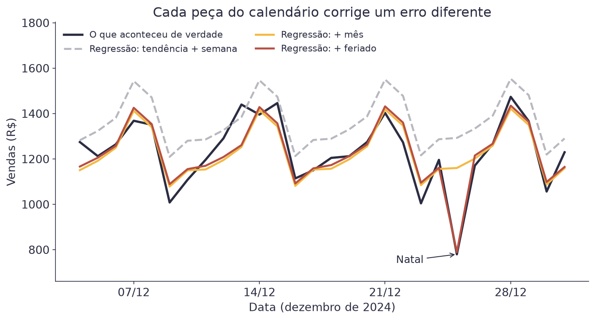
| Regressão | MAE | RMSE | MAPE |
|---|---|---|---|
| Tendência + semana | R$ 131,63 | R$ 159,24 | 11,7% |
| + mês | R$ 60,21 | R$ 95,17 | 5,5% |
| + feriado | R$ 44,11 | R$ 60,12 | 3,6% |
A primeira versão é pior que todas as previsões de referência. Ela sabe o dia da semana e a tendência, mas não sabe que dezembro é baixa temporada, e erra para cima o mês inteiro. Um modelo de verdade pode, sim, perder da régua.
A coluna do mês conserta isso e já vence a régua. A coluna de feriado acerta o Natal, e o erro médio cai para R$ 44. Cada peça que você conhece do negócio vira uma coluna, e cada coluna conserta um erro diferente.
A regressão com calendário usa a data para prever. Existe outro caminho: usar as próprias vendas dos dias anteriores.
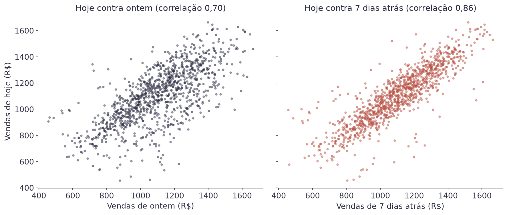
Uma coluna com o valor de alguns dias atrás se chama defasagem (lag). O ARIMA é um modelo clássico que prevê a série usando só o passado dela mesma. Ele faz três perguntas, e cada resposta é um número que você escolhe. Por isso ele se escreve ARIMA(p, d, q).
| Número | A pergunta que ele responde |
|---|---|
p |
quantos dias do passado entram como coluna? |
d |
o modelo prevê o valor ou a mudança de um dia para o outro? |
q |
quantos erros recentes o modelo usa para se corrigir? |
Vale ver um de cada vez.
A primeira letra, AR, quer dizer autorregressão: uma regressão da
série contra as próprias defasagens. É a regressão da Aula 1, só que as
colunas de entrada são as vendas dos dias anteriores. O p diz quantas
dessas colunas entram. Com p = 2:
| Símbolo | Significado |
|---|---|
ŷₜ |
a venda prevista para hoje |
yₜ₋₁, yₜ₋₂ |
as vendas de ontem e de anteontem, que já aconteceram |
w₀, w₁, w₂ |
os pesos, aprendidos no treino como em qualquer regressão |
Exemplo, com pesos ilustrativos: w₀ = 250, w₁ = 0,5 e w₂ = 0,3.
Ontem a cafeteria vendeu R$ 1.200 e anteontem R$ 1.100. A previsão para
hoje é 250 + 0,5 × 1.200 + 0,3 × 1.100 = 1.180 reais.
Com p = 1, só ontem entra. Com p = 0, nenhum dia entra, e sobram as
outras duas ideias.
Um ARIMA com d = 0 prevê o valor das vendas diretamente. O problema é
que ele supõe que a série oscila em torno de um nível fixo, e a nossa
série sobe. O ARIMA(1,0,0) mostra o estrago: nos dias de teste, a
previsão escorrega para R$ 1.097, a média dos três anos, que mistura 2022
com 2024. O erro médio vai a R$ 166,82, pior que qualquer previsão de
referência.
Com d = 1, o modelo passa a olhar a diferença entre dois dias
seguidos:
| Símbolo | Significado |
|---|---|
Δyₜ |
a mudança de ontem para hoje |
yₜ, yₜ₋₁ |
as vendas de hoje e de ontem |
Exemplo: uma série que vendeu R$ 1.000, R$ 1.010, R$ 1.020 e R$ 1.030 sobe sem parar. As diferenças são 10, 10 e 10: uma série parada, fácil de prever. O modelo prevê a próxima mudança (mais 10) e soma ao último valor. A previsão é R$ 1.040.
É assim que o ARIMA lida com a tendência. A regra prática: se o gráfico
sobe ou desce, use d = 1; se ele oscila em torno de um nível estável,
d = 0. Quase nunca é preciso passar de 1.
Um caso curioso: o ARIMA(0,1,0) não usa dia nenhum (p = 0), nem erro
nenhum (q = 0). Ele prevê mudança zero, e repete o último valor. É a
previsão ingênua, com o mesmo MAE de R$ 121,28.
A terceira letra, MA, vem de moving average, média móvel. O nome
confunde: não é a média móvel das vendas que você viu no começo da aula.
Aqui, o modelo guarda o próprio erro de ontem e usa uma parte dele para
corrigir a previsão de hoje. O q diz quantos erros para trás entram.
Com q = 1:
| Símbolo | Significado |
|---|---|
εₜ₋₁ |
o erro de ontem: o que vendeu menos o que o modelo tinha previsto |
w₁ |
quanto desse erro vira correção hoje |
w₀ |
o nível da previsão antes da correção |
Exemplo, com pesos ilustrativos: ontem o modelo previu R$ 1.100 e a
cafeteria vendeu R$ 1.150. O erro foi ε = +50. Com w₀ = 1.100 e
w₁ = 0,4, a previsão de hoje é 1.100 + 0,4 × 50 = 1.120 reais. O
modelo sobe um pouco, sem acreditar totalmente num dia só.
Na prática, corrigir com os erros faz o modelo tirar uma média ponderada dos últimos dias, em vez de copiar o último. O ARIMA(0,1,1) desta série erra R$ 115,93, o mesmo que a média dos últimos 7 dias.
O ARIMA(1,1,1) usa as três ideias ao mesmo tempo: ele prevê a mudança de
hoje (d = 1) a partir da mudança de ontem (p = 1) e do erro de ontem
(q = 1).
| Símbolo | Significado |
|---|---|
Δŷₜ |
a mudança prevista de ontem para hoje |
Δyₜ₋₁ |
a mudança que aconteceu de anteontem para ontem |
εₜ₋₁ |
o erro do modelo ontem |
w₀, w₁, w₂ |
os pesos, aprendidos no treino |
Exemplo, com pesos ilustrativos w₀ = 0, w₁ = 0,3 e w₂ = 0,5.
Anteontem a cafeteria vendeu R$ 1.150 e ontem R$ 1.200, então a mudança
foi +50. O erro do modelo ontem foi +30. A mudança prevista é
0,3 × 50 + 0,5 × 30 = 30, e a previsão de hoje é 1.200 + 30 = 1.230
reais.
No Python, com a biblioteca statsmodels, o order recebe os três
números nesta ordem:
modelo = ARIMA(treino["vendas"], order=(1, 1, 1)).fit()
previsao = modelo.forecast(28)
| ARIMA | O que faz | MAE |
|---|---|---|
| (0,1,0) | repete o último dia: é a previsão ingênua | R$ 121,28 |
| (1,0,0) | olha ontem, mas volta para a média dos três anos | R$ 166,82 |
| (1,1,1) | prevê a mudança, com ontem e com o erro de ontem | R$ 116,45 |
Nenhum deles passa perto da régua. Todos olham só os últimos dias, e por isso nenhum enxerga a semana.
A solução é a versão sazonal. Ela faz as mesmas três perguntas, só
que com um passo do tamanho do ciclo: em vez de comparar hoje com ontem,
compara hoje com o mesmo dia da semana passada. No código, é um segundo
grupo de quatro números, o seasonal_order=(P, D, Q, s).
| Número | Igual a | Mas olhando para |
|---|---|---|
P |
p |
o mesmo dia da semana, 1, 2... semanas atrás |
D |
d |
a mudança contra 7 dias atrás, e não contra ontem |
Q |
q |
o erro do mesmo dia da semana passada |
s |
(novo) | o tamanho do ciclo: 7 dias |
A diferença sazonal (D = 1) é a peça mais importante:
| Símbolo | Significado |
|---|---|
Δ₇yₜ |
a mudança de hoje em relação ao mesmo dia da semana passada |
yₜ₋₇ |
a venda de 7 dias atrás |
Exemplo: no sábado passado a cafeteria vendeu R$ 1.400; neste sábado, R$ 1.450. A diferença sazonal é R$ 50. O salto de sexta para sábado some da conta, porque o modelo compara sábado com sábado.
Montando o modelo peça por peça:
| ARIMA | O que faz | MAE |
|---|---|---|
| (0,0,0)(0,1,0,7) | repete a semana passada: é a sazonal ingênua | R$ 63,78 |
| (0,0,0)(0,1,1,7) | repete a semana passada e corrige com o erro dela | R$ 61,12 |
| (1,1,1)(0,1,1,7) | junta tudo: ontem, a semana passada e os erros | R$ 57,57 |
A régua era, o tempo todo, um ARIMA sazonal sem nenhum peso. Cada número a mais corrige um pouco dela.
modelo = ARIMA(treino["vendas"], order=(1, 1, 1),
seasonal_order=(0, 1, 1, 7)).fit()
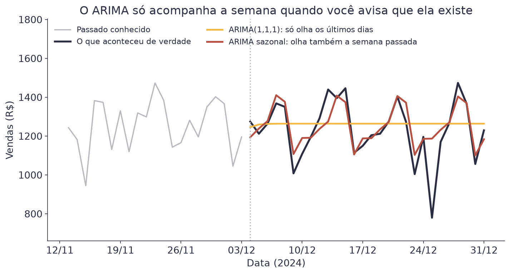
Com o ciclo de 7 dias, o ARIMA vence a régua. Mas repare no Natal: o ARIMA sazonal passa reto por ele. O modelo só conhece o passado da série, e o passado recente não avisa que o dia 25 é feriado.
Não existe fórmula mágica, mas existe um roteiro:
d e D saem do gráfico. A série sobe ou desce? d = 1. Tem um
ciclo que se repete? D = 1 e s igual ao tamanho do ciclo.p, q, P e Q começam em 0 ou 1. Números grandes raramente
ajudam: o ARIMA(2,1,1) erra R$ 118,61, mais que o (1,1,1).Oito previsões, os mesmos 28 dias de teste:
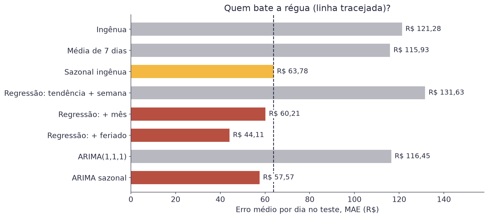
| Previsão | MAE | RMSE | MAPE |
|---|---|---|---|
| Ingênua | R$ 121,28 | R$ 156,45 | 10,3% |
| Média de 7 dias | R$ 115,93 | R$ 154,73 | 10,4% |
| Sazonal ingênua (a régua) | R$ 63,78 | R$ 110,80 | 6,0% |
| Regressão: tendência + semana | R$ 131,63 | R$ 159,24 | 11,7% |
| Regressão: + mês | R$ 60,21 | R$ 95,17 | 5,5% |
| Regressão: + feriado | R$ 44,11 | R$ 60,12 | 3,6% |
| ARIMA(1,1,1) | R$ 116,45 | R$ 155,06 | 10,4% |
| ARIMA sazonal | R$ 57,57 | R$ 96,83 | 5,4% |
Três lições saem desta tabela:
A marca a bater na próxima aula é R$ 44,11 de MAE.
vendas_cafeteria.csvSe ainda não sabe como abrir o notebook, veja Antes de começar primeiro.
rolling no pandas: a função que calcula médias móveis em uma linha.Nota
O que você leva desta aula
Você vai treinar o Prophet em três linhas, ler as peças que ele estimou sozinho e ensinar a ele o calendário de feriados. Depois vai usar o TimesFM, um modelo pré-treinado que prevê a série sem treino nenhum. No fim, vai comparar tudo com a régua e decidir qual ferramenta usar em cada situação.
Na aula passada, a cafeteria ganhou uma régua e dois modelos. A régua copia a semana anterior e erra R$ 63,78 por dia. O ARIMA sazonal erra R$ 57,57. E a regressão com calendário, com 19 colunas montadas à mão, erra R$ 44,11.
Montar essas colunas deu trabalho. Você precisou decidir que o mês importava, criar as variáveis indicadoras e lembrar da coluna de feriado. Esta aula testa dois atalhos:
A pergunta é a mesma da aula passada: eles batem a régua? E batem os R$ 44,11?
Uma equipe da Meta criou o Prophet pensando em séries de negócio: vendas, acessos, pedidos. A ideia é a mesma da Aula 5, escrita como modelo.
| Símbolo | Significado |
|---|---|
y(t) |
o valor da série no dia t |
g(t) |
a tendência: para onde o negócio caminha |
s(t) |
as sazonalidades: o padrão da semana e o do ano |
h(t) |
os feriados e eventos especiais |
εₜ |
o resto, o que nenhuma das peças explica |
Exemplo, para uma quarta-feira de julho de 2025: a tendência dá R$ 1.320,
a sazonalidade semanal tira R$ 15, a anual soma R$ 110 e não há feriado. A
previsão é 1.320 − 15 + 110 = 1.415 reais.
Repare que é a regressão com calendário da aula passada, com as mesmas peças. A diferença é que você não monta nenhuma coluna. O Prophet cria sozinho as curvas da semana e do ano, e ainda deixa a tendência mudar de inclinação.
O Prophet só aceita a tabela com duas colunas, e com estes nomes exatos:
| Coluna | O que é |
|---|---|
ds |
a data (datestamp) |
y |
o valor que você quer prever |
Renomear as colunas é o primeiro passo de qualquer projeto com Prophet, e é onde mais gente trava na primeira vez.
serie = dados.rename(columns={"data": "ds", "vendas": "y"})
modelo = Prophet()
modelo.fit(treino)
futuro = modelo.make_future_dataframe(periods=28)
previsao = modelo.predict(futuro)
make_future_dataframe cria a tabela de datas que você quer prever,
incluindo o histórico. predict devolve uma tabela com uma linha por dia
e várias colunas, das quais três importam agora: yhat (a previsão),
yhat_lower e yhat_upper (as bordas do intervalo de incerteza).
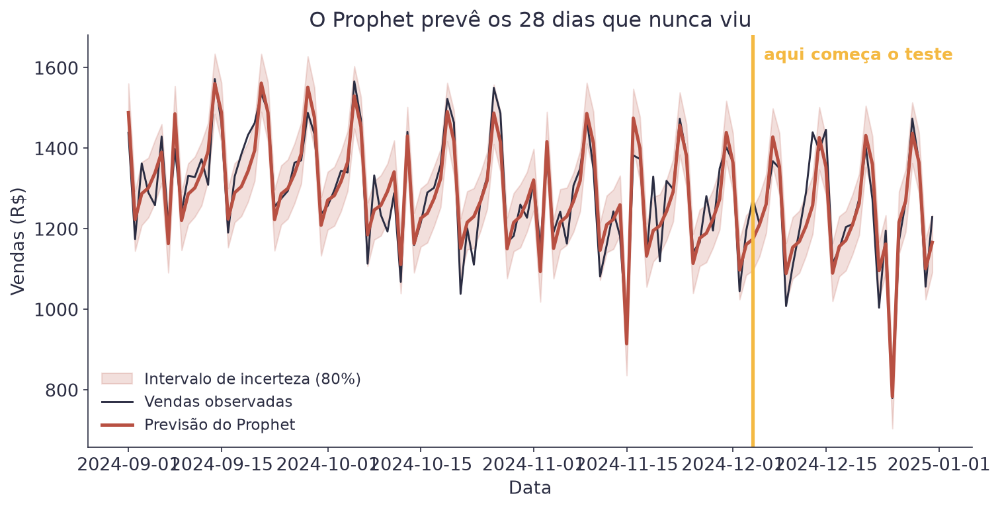
A parte mais útil do Prophet não é a previsão: é poder abrir o modelo e olhar cada peça separada.
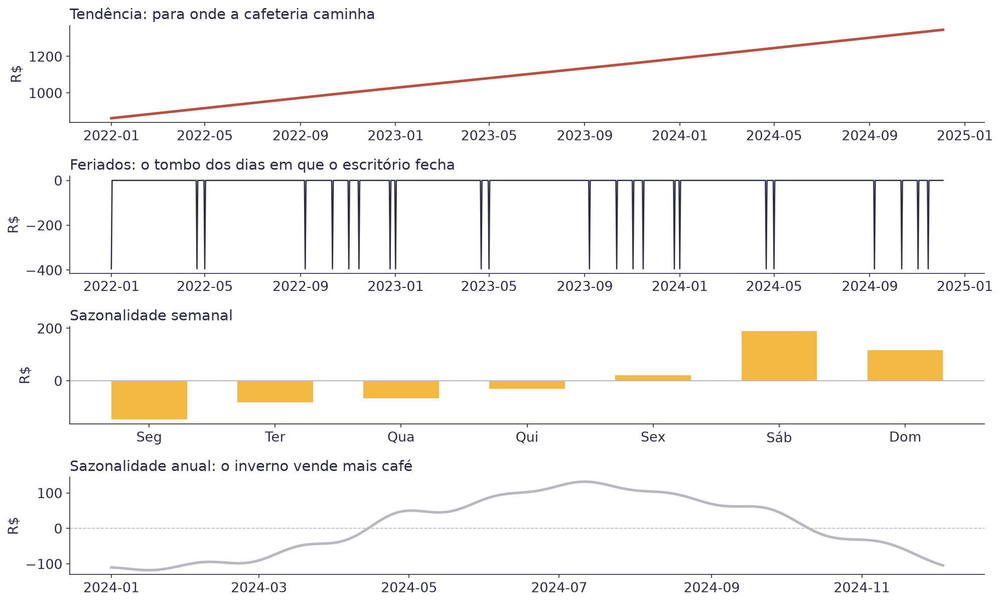
Compare com o que você já sabia da aula passada. A tendência sobe. O sábado é o melhor dia e a segunda é o pior. O meio do ano vende mais que o começo. O modelo chegou nisso sozinho, sem ninguém contar.
Esse quadro é o que você leva para uma reunião. Ele responde perguntas de negócio ("o crescimento continua?", "vale abrir aos domingos?") melhor do que qualquer número único de previsão.
Uma coisa o Prophet não descobre sozinho: o calendário. Ele não sabe que 25 de dezembro é diferente dos outros dias.
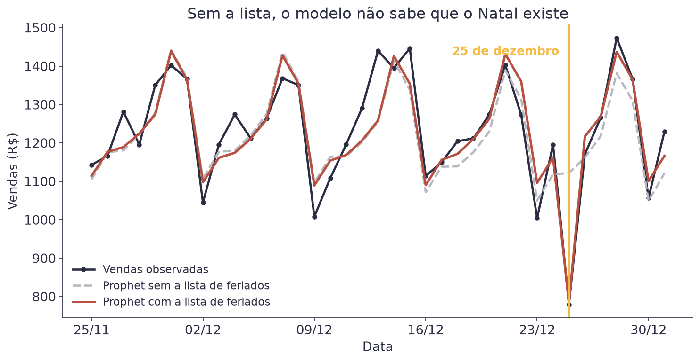
Para ensinar o calendário, você entrega uma tabela de feriados:
feriados = pd.DataFrame({
"holiday": "feriado_nacional",
"ds": datas_dos_feriados,
})
modelo = Prophet(holidays=feriados)
Essa lista pode ir além do calendário oficial. Promoções, greves, jogos importantes, qualquer data que a sua série "sente" entra ali.
Agora o teste que importa, nos mesmos 28 dias escondidos da aula passada:
| Previsão | MAE | RMSE | MAPE |
|---|---|---|---|
| Sazonal ingênua (a régua) | R$ 63,78 | R$ 110,80 | 6,0% |
| Regressão com calendário (Aula 5) | R$ 44,11 | R$ 60,12 | 3,6% |
| Prophet, sem feriados | R$ 64,54 | R$ 92,91 | 5,7% |
| Prophet, com feriados | R$ 43,73 | R$ 60,22 | 3,5% |
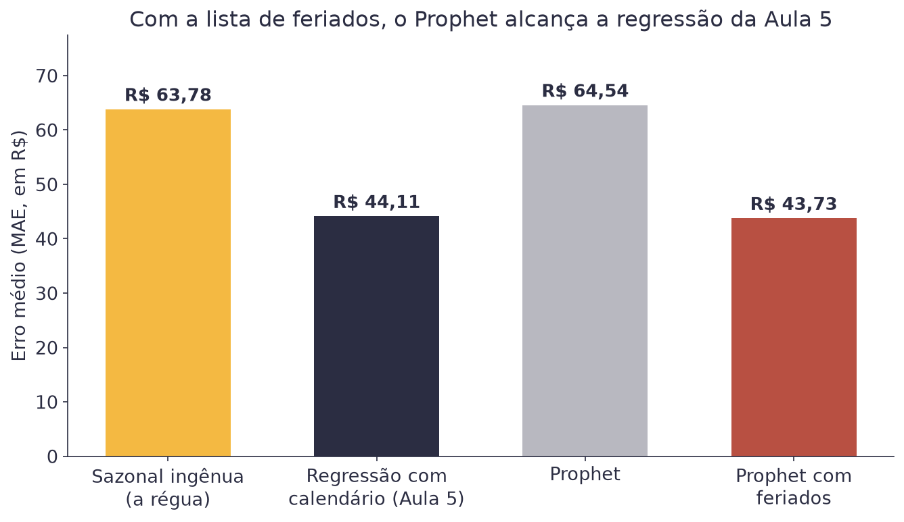
Leia a tabela com atenção, porque ela guarda duas lições.
A primeira: o Prophet recém-instalado, sem nenhum ajuste, empata com a previsão que só copia a semana anterior. O que faz ele ganhar é a lista de feriados, que não vem do modelo. Vem de você, que conhece o negócio.
A segunda: com a lista, o Prophet chega praticamente ao mesmo número da regressão da Aula 5. Não é coincidência. Os dois modelos somam as mesmas peças. O Prophet economiza o trabalho de montar as colunas, e entrega de brinde a faixa de incerteza e a tendência que dobra.
Atenção
Erro do dia
Rodar o Prophet, ver um gráfico bonito com faixa de incerteza e concluir que o modelo é bom, sem nunca comparar com a régua. Um gráfico de previsão sempre parece convincente. A régua é o que separa um modelo útil de um enfeite caro.
Todos os modelos até aqui aprenderam com a série da cafeteria. Existe outro caminho, que chegou à área de séries temporais nos últimos anos: um modelo de fundação (foundation model).
A ideia vem dos modelos de linguagem, que você vai construir mais adiante no curso. Um modelo de linguagem leu uma quantidade enorme de texto e aprendeu a prever a próxima palavra. O TimesFM, do Google, leu uma quantidade enorme de séries temporais e aprendeu a prever o próximo pedaço de uma série. Só a primeira versão já tinha lido cerca de 100 bilhões de pontos, de buscas no Google, visitas à Wikipédia e muitas outras fontes.
Como ele já viu séries com semanas, anos, tendências e quedas de todo tipo, ele consegue prever uma série nova sem treinar nela. Isso se chama previsão zero-shot: você entrega o passado, e ele devolve o futuro.
O TimesFM 2.5 tem 231 milhões de pesos e roda no processador do Colab em
poucos segundos. Ele vem do Hugging Face, pela biblioteca transformers:
modelo = TimesFm2_5ModelForPrediction.from_pretrained("google/timesfm-2.5-200m-transformers")
historico = torch.tensor(treino["y"].to_numpy(), dtype=torch.float32)
saida = modelo(past_values=[historico])
previsao = saida.mean_predictions[0, :28]
Repare no que não aparece: nenhum fit. O modelo não aprende nada com
a cafeteria. Ele só lê o histórico e escreve os próximos dias.
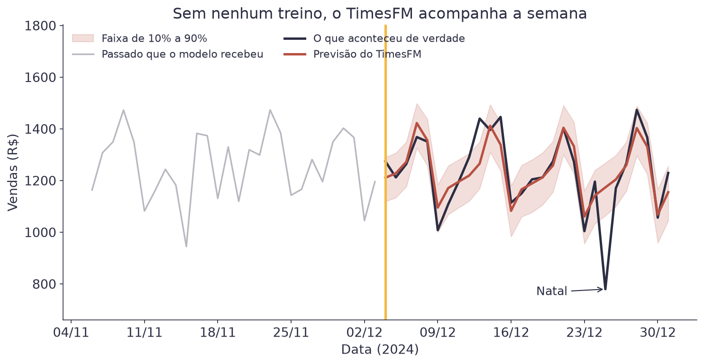
O resultado: MAE de R$ 55,16. Sem treinar nada, o TimesFM bate a régua, bate o ARIMA sazonal e bate o Prophet sem feriados.
E tem mais. Tirando o Natal da conta, o erro dele nos outros 27 dias é de R$ 42,62, o menor de todos os modelos. Nos dias comuns, ele é o melhor da turma. O problema é um dia só: no Natal, ele previu R$ 1.173, e a cafeteria vendeu R$ 780.
O TimesFM não tem pesos para treinar, mas tem uma escolha importante: o contexto, o número de dias de passado que você entrega a ele. A versão 2.5 aceita até 16 mil pontos.
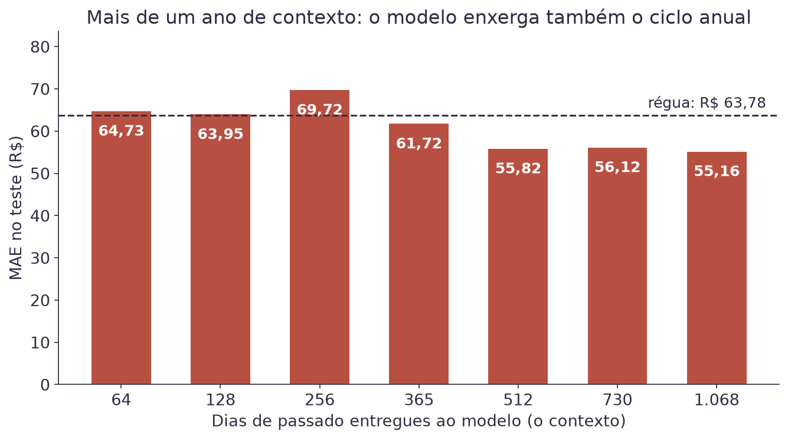
Com 64 ou 128 dias, ele só enxerga a semana, e empata com a régua. A partir de 512 dias, ele enxerga um ano inteiro e mais um pedaço, e descobre que dezembro é baixa temporada. Na dúvida, entregue todo o histórico que você tem.
O TimesFM traz o padrão. O calendário, ele não tem como saber: ninguém contou a ele que o dia 25 é feriado. A solução é somar à previsão dele o efeito do feriado, medido no treino.
| Símbolo | Significado |
|---|---|
TimesFMₜ |
a previsão do TimesFM para o dia t |
feriadoₜ |
vale 1 se o dia t é feriado, e 0 se não é |
w₁ |
o efeito do feriado: a venda média de um feriado menos a de um dia comum, no treino |
No treino, um feriado vendeu, em média, R$ 389,68 a menos que um dia
comum. Então w₁ = −389,68. Exemplo, no Natal: 1.173 − 390 = 783
reais. A cafeteria vendeu R$ 780.
Nos outros 27 dias, feriadoₜ vale 0 e a previsão fica igual. Com esse
único ajuste, o erro médio cai para R$ 41,24, o melhor resultado do
módulo.
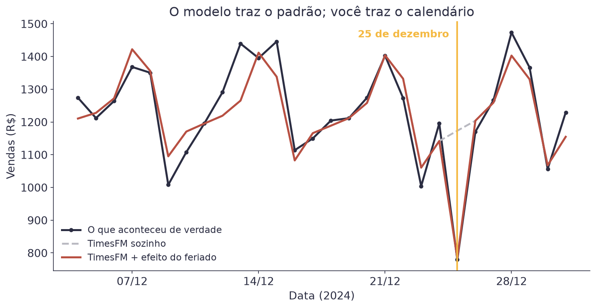
Toda linha de yhat do Prophet vem acompanhada de yhat_lower e
yhat_upper. Eles formam a faixa em torno da previsão, e por padrão
cobrem 80% dos casos.
É o mesmo intervalo de predição da Aula 1, com dois ajustes. Lá a faixa
era ŷ ± 2s, com uma largura só para toda a reta; aqui ela muda de dia
para dia, e a promessa é 80% em vez de 95%. A pergunta que ela responde
continua sendo a mesma: onde cai um dia, e não a média de muitos.
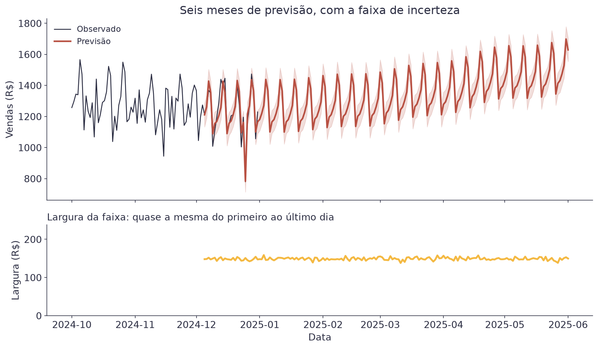
A faixa soma duas incertezas. Uma é o barulho do dia a dia, que não some nunca: dois sábados de julho não vendem exatamente o mesmo. A outra é a dúvida sobre para onde a tendência vai, e essa cresce com o horizonte. Nesta série, a primeira domina, e por isso a faixa quase não abre.
O TimesFM também devolve uma faixa. Em vez de uma borda de baixo e uma de cima, ele devolve quantis: o valor abaixo do qual devem ficar 10% dos dias, 20%, e assim por diante até 90%. Entre o quantil de 10% e o de 90% cabem 80% dos casos, a mesma promessa do Prophet.
| Faixa de 80% no teste | Dias dentro | Largura média |
|---|---|---|
| Prophet com feriados | 75% | cerca de R$ 150 |
| TimesFM | 89% | cerca de R$ 191 |
O TimesFM é mais cauteloso: a faixa dele é mais larga e erra menos. As duas cumprem a promessa de perto, e nenhuma é garantia.
A lição mais importante vale para as duas: a faixa só conhece o que já aconteceu. Ela não tem como prever um concorrente novo na esquina, uma greve de ônibus ou uma obra na rua. O risco de prever seis meses à frente vem desses eventos, não da largura da faixa.
Use a faixa para conversar sobre risco. "A previsão é R$ 1.200, mas pode ficar entre R$ 1.130 e R$ 1.280" é uma frase muito mais útil para quem vai comprar leite do que um número solto.
O Prophet não obriga a tendência a ser uma reta. Ele permite que ela mude de inclinação em alguns pontos, chamados pontos de mudança (changepoints).
Esse é o motivo de o Prophet lidar bem com negócios que mudam de patamar. Uma loja que abriu uma filial, um site que ganhou tráfego depois de uma campanha: a tendência dobra, e o modelo acompanha.
O cuidado é o oposto. Se você deixar o modelo dobrar demais, ele começa a
seguir o ruído e a previsão fica instável. O parâmetro
changepoint_prior_scale controla essa liberdade: quanto maior, mais o
modelo aceita dobrar.
| Previsão | MAE | RMSE | MAPE |
|---|---|---|---|
| Sazonal ingênua (a régua) | R$ 63,78 | R$ 110,80 | 6,0% |
| Regressão com calendário (Aula 5) | R$ 44,11 | R$ 60,12 | 3,6% |
| ARIMA sazonal (Aula 5) | R$ 57,57 | R$ 96,83 | 5,4% |
| Prophet, sem feriados | R$ 64,54 | R$ 92,91 | 5,7% |
| Prophet, com feriados | R$ 43,73 | R$ 60,22 | 3,5% |
| TimesFM, sem treino | R$ 55,16 | R$ 93,67 | 5,1% |
| TimesFM + efeito do feriado | R$ 41,24 | R$ 56,90 | 3,3% |
Os três melhores resultados vieram de ferramentas bem diferentes: uma regressão da Aula 2, uma biblioteca de negócio e uma rede neural gigante. O que eles têm em comum é o calendário de feriados, que nenhum deles descobriu sozinho.
Repare também que os três ficaram entre R$ 41 e R$ 44. Esse é, provavelmente, o piso desta série: o barulho do dia a dia, que nenhum modelo prevê.
| Ferramenta | Use quando | Cuidado |
|---|---|---|
| A régua | sempre, antes de qualquer modelo | ela não é o fim, é o começo |
| Regressão com calendário | você conhece as causas e quer ler um peso por causa | você monta cada coluna |
| ARIMA | a série depende muito do próprio passado, e pouco do calendário | não sabe de nada que o passado não mostre |
| Prophet | série de negócio com semana, ano e feriados | sem a lista de feriados, pode empatar com a régua |
| TimesFM | você precisa de uma boa previsão rápido, ou tem muitas séries | não conhece o seu calendário, e é um modelo pesado |
vendas_cafeteria.csvO notebook desta aula confere, na primeira célula, se o Prophet e uma
versão recente do transformers estão instalados. Na primeira vez que
roda o TimesFM, o Colab baixa o modelo, cerca de 1 GB.
Nota
Como funciona
São 10 perguntas sobre as Aulas 5 e 6. Nenhuma pede conta: todas pedem para você ler um resultado e dizer o que ele significa. Clique na opção que achar certa. A resposta e uma explicação aparecem na hora, e o placar no fim da página soma os acertos. Não vale nota, e o botão Recomeçar apaga tudo.
Questão 1
Há três anos, a cafeteria vende cerca de R$ 330 a mais aos sábados do que às segundas, toda semana. Que peça da série é essa?
Um padrão que se repete num intervalo fixo, aqui a semana, é sazonalidade. A tendência é o rumo de longo prazo (a venda média subiu de R$ 938 em 2022 para R$ 1.267 em 2024). O resto é o que sobra depois de tirar as duas, como o ruído e os feriados.
Questão 2
Você calcula a média móvel das vendas com uma janela de 7 dias. O que acontece com o sobe e desce da semana?
Uma janela do tamanho do ciclo apaga aquele ciclo: toda janela de 7 dias tem um sábado, uma segunda e todos os outros dias, então o zigue-zague se cancela. A tendência continua aparecendo. Uma janela de 30 dias apagaria também o efeito do mês.
Questão 3
Um colega separou treino e teste com o train_test_split, sorteando os dias, e conseguiu um erro muito menor que o da régua. Qual é a primeira suspeita?
Em série temporal, o corte é sempre no tempo: treino até uma data, teste depois dela. Sorteando os dias, o modelo estuda dezembro para prever novembro, cercado de vizinhos que já viu. A métrica sai ótima no teste e ruim na vida real.
Questão 4
A sazonal ingênua (copiar a semana passada) erra R$ 63,78 por dia no teste. Um modelo novo erra R$ 70 nos mesmos dias. O que concluir?
A régua é a melhor previsão de referência, e todo modelo tem que vencê-la. Um erro parece pequeno ou grande dependendo do que você compara, e a comparação honesta é com a melhor regra simples disponível, não com a pior.
Questão 5
A regressão com tendência e dia da semana errou R$ 131,63 por dia em dezembro. Acrescentando as variáveis indicadoras do mês, o erro caiu para R$ 60,21. Por quê?
Sem o mês, a regressão não conhecia a sazonalidade anual (o inverno vende mais que o verão), então previa para dezembro um nível alto demais. O Natal só foi corrigido depois, com a coluna de feriado, que levou o erro a R$ 44,11. Cada peça do calendário conserta um erro diferente.
Questão 6
O ARIMA(1,0,0) previu, para os dias do teste, valores que caíam dia após dia em direção a R$ 1.097, a média dos três anos. Qual número está causando isso?
O d responde se o modelo prevê o valor (0) ou a mudança de um dia para o outro (1). Com d = 0, a previsão volta para o nível médio, que mistura 2022 com 2024. Com d = 1, ele prevê a mudança e soma ao último valor, e a tendência deixa de ser problema. Regra prática: se o gráfico sobe ou desce, use d = 1.
Questão 7
O Prophet, direto da caixa, errou R$ 64,54: empatou com a régua. Com a lista de feriados, caiu para R$ 43,73. O que essa diferença ensina?
O Prophet estima tendência e sazonalidades sozinho, mas não tem como saber que 25 de dezembro é diferente dos outros dias. Com a lista, ele chega quase ao mesmo erro da regressão com calendário da Aula 5 (R$ 44,11), porque os dois somam as mesmas peças.
Questão 8
A faixa de incerteza do Prophet promete cobrir 80% dos dias. No teste, 75% dos dias caíram dentro dela. Qual é a leitura certa?
Uma faixa de 80% espera deixar cerca de um dia em cada cinco de fora. Com só 28 dias de teste, 75% está dentro do esperado. E a faixa só conhece o que já aconteceu: uma greve ou uma obra na rua podem jogar a venda para fora dela.
Questão 9
O TimesFM previu as vendas da cafeteria sem nenhum treino e bateu a régua. Como isso é possível?
O TimesFM é um modelo de fundação: foi treinado uma vez, pelo Google, com milhões de séries de todo tipo. Por isso ele prevê uma série nova só lendo o passado dela, sem mudar nenhum peso. Isso se chama previsão zero-shot.
Questão 10
Nos 27 dias comuns do teste, o TimesFM foi o melhor de todos. No Natal, previu R$ 1.173, e a cafeteria vendeu R$ 780. Qual é a correção mais simples?
O modelo traz o padrão; o calendário é você quem traz. Com uma coluna de feriado e um peso tirado de uma média do treino, a previsão do Natal vai para R$ 783, e o erro médio cai para R$ 41,24, o melhor resultado do módulo. Entregar menos passado piora o TimesFM: com 365 dias, ele erra R$ 61,72.
Uma rede neural é uma cadeia de modelos simples (parecidos com a regressão que você já aprendeu) empilhados uns sobre os outros. Este módulo mostra como essa cadeia aprende, e como ela enxerga uma imagem.
| Aula | Conteúdo | Status |
|---|---|---|
| Aula 7 — Fundamentos de Redes Neurais | Do neurônio artificial à primeira rede treinada com Keras | Disponível |
| Desafio MNIST | Em dupla: uma rede densa que lê dígitos escritos à mão, com previsões e experimentos | Disponível |
| Aula 8 — Redes Convolucionais | Convolução, filtros e pooling: como uma rede aprende a olhar uma foto | Disponível |
| Quiz — Redes Neurais | 10 perguntas de interpretação sobre as duas aulas | Disponível |
Nota
O que você leva desta aula
Você vai entender o que é um neurônio (spoiler: é a soma da Aula 2 com uma dobra em cima), por que empilhar neurônios resolve problemas que uma reta não resolve, e como treinar uma rede em cinco linhas de Keras. Vai ver também como segurar uma rede que decora, com L2 e dropout, e como deixar o treino em piloto automático com callbacks.
O Clube do Café torra os próprios grãos. Cada torra tem dois botões: a temperatura do tambor e o tempo. Errar qualquer um dos dois estraga o lote.
Quente demais queima. Frio demais deixa o grão verde. Rápido demais não desenvolve o açúcar. Devagar demais amarga. O ponto bom fica numa faixa no meio, e é isso que o gráfico mostra:
Olhe para essa figura e tente traçar uma reta que separe os triângulos dos círculos. Não existe. É essa impossibilidade que abre o assunto de hoje.
Vamos provar. Treine uma regressão logística nesses dados, do jeito da Aula 3, e olhe o que ela decide.
A regressão logística acertou 71,8% das torras. Parece razoável até você comparar com o modelo preguiçoso da Aula 3: como 71,8% das torras são ruins, responder "ruim" para todo mundo dá exatamente os mesmos 71,8%.
Ela não aprendeu nada. E não é culpa dela: a fronteira que ela sabe desenhar é uma reta, e nenhuma reta separa o dentro do fora de uma ilha.
A rede neural da direita, com duas camadas de 16 neurônios, chega a 91,8%. A diferença não está no esforço nem nos dados. Está no formato da fronteira que cada modelo consegue desenhar.
Aqui está a boa notícia: você já sabe o que é.
| Símbolo | Significado |
|---|---|
x₁, x₂ |
as entradas: temperatura e tempo |
w₁, w₂ |
os pesos, iguais aos das aulas de regressão |
w₀ |
o viés (bias), o mesmo termo independente de sempre |
f |
a função de ativação: a dobra |
a |
a saída do neurônio, que vira entrada do próximo |
Compare com a regressão logística da Aula 3: P = σ(w₀ + w₁x₁ + w₂x₂). É a
mesma conta. Um neurônio com ativação sigmoide é uma regressão
logística. Uma rede neural é um monte deles, empilhados.
Exemplo com números: se w₀ = −3, w₁ = 0,02, w₂ = 0,1, uma torra de
205 °C e 11 minutos dá −3 + 4,10 + 1,10 = 2,20 antes da ativação.
Se a ativação não existisse, empilhar camadas não adiantaria nada. Somar retas dá reta, e você voltaria ao problema do começo.
| Símbolo | Significado |
|---|---|
z |
o resultado da soma, antes da ativação |
max(0, z) |
devolve z se ele é positivo, e 0 se é negativo |
Exemplo: ReLU(2,20) = 2,20. ReLU(−1,4) = 0.
Não parece grande coisa, mas é o suficiente. Cada neurônio com ReLU introduz uma dobra na fronteira. Com dobras suficientes, a fronteira contorna qualquer formato. Repare no salto entre 2 e 8 neurônios: é ali que a fronteira deixa de ser uma reta.
Onde usar cada uma, na prática:
| Onde | Ativação | Por quê |
|---|---|---|
| Camadas do meio | ReLU | rápida, e é a dobra que cria o formato |
| Saída, para sim ou não | sigmoide | devolve probabilidade entre 0 e 1 |
| Saída, para um número | nenhuma | o valor sai como está |
modelo = keras.Sequential([
keras.layers.Input(shape=(2,)),
keras.layers.Dense(16, activation="relu"),
keras.layers.Dense(16, activation="relu"),
keras.layers.Dense(1, activation="sigmoid"),
])
Lendo de cima para baixo: entram 2 números, viram 16, viram 16 de novo, e
saem como 1 probabilidade. Dense quer dizer que todo neurônio da
camada recebe todas as saídas da camada anterior.
Essa rede tem 337 pesos. Você pode contar: 2×16+16 na primeira camada, 16×16+16 na segunda, 16×1+1 na saída. Cada um deles é um número que o treino vai ajustar, exatamente como ajustava os dois pesos da Aula 1.
Nada de novo aqui, e vale dizer isso em voz alta:
| Peça | Na Aula 1 | Agora |
|---|---|---|
| O que ajusta | 2 pesos | 337 pesos |
| Função de perda | MSE | log loss (a da Aula 3) |
| Como ajusta | gradiente descendente | gradiente descendente |
| A regra | w ← w − α · inclinação |
a mesma, para cada peso |
A perda usada para sim ou não é a entropia cruzada binária, que a Aula 3 já usava com outro nome:
| Símbolo | Significado |
|---|---|
yᵢ |
o rótulo real da torra i: 1 para boa, 0 para ruim |
ŷᵢ |
a probabilidade que a rede deu |
log |
o logaritmo, que castiga com força quem erra com confiança |
Exemplo: se a rede diz 0,9 para uma torra boa, a parcela dela é
−log(0,9) = 0,105. Se ela diz 0,1 para a mesma torra boa, a parcela vira
−log(0,1) = 2,303. Vinte e duas vezes pior.
A única novidade técnica é o nome do cálculo que distribui a culpa entre as camadas: retropropagação (backpropagation). Ela responde "o quanto cada um dos 337 pesos contribuiu para o erro" aplicando a regra da cadeia de trás para frente. O Keras faz isso sozinho, e neste curso você não vai implementá-la à mão.
Três palavras que aparecem em toda saída de treino:
| Palavra | O que é |
|---|---|
| Lote (batch) | quantos exemplos entram por vez antes de ajustar os pesos |
| Época (epoch) | uma passada completa por todos os exemplos |
| Passo | um ajuste dos pesos, feito uma vez por lote |
Com 600 torras e lote de 32, uma época tem 19 passos. Em 120 épocas, são 2.280 ajustes.
Repare que existem duas linhas em cada gráfico. A de treino usa as torras que a rede viu; a de validação usa 25% que ela nunca viu. Enquanto as duas caem juntas, está tudo bem. Quando a de validação para de cair e a de treino continua, a rede começou a decorar. A próxima seção mostra como evitar isso.
Atenção
Erro do dia
Treinar sem normalizar as entradas. Aqui a temperatura vai a 235 e o tempo a 17: uma escala é catorze vezes a outra. A rede até aprende, mas devagar e mal, porque o gradiente fica dominado pela variável de número maior. A correção é uma linha, antes do treino: subtraia a média e divida pelo desvio padrão de cada coluna. Faça isso sempre em rede neural.
Uma rede com liberdade demais faz o que o modelo simples nunca faria: decora. Para ver isso, dê a ela três camadas de 128 neurônios, mais de 33 mil pesos, e só 420 torras para aprender. Separe outras 180 como validação e treine por 300 épocas.
A perda de validação foi mínima na época 13, com 0,213. Na época 300 ela estava em 0,374. A acurácia no treino chegou a 96,7%, e na validação ficou em 87,8%. A rede parou de aprender o formato da ilha e passou a decorar o ruído de cada torra.
A defesa se chama regularização (regularization): qualquer técnica que torne decorar mais caro. Duas delas mexem na própria rede, o L2 e o dropout. A terceira mexe no treino, e vem na próxima seção.
Você já conhece esse freio da Aula 2, onde ele aparecia como Ridge. Uma rede que decora costuma ter pesos enormes, porque precisa de curvas bruscas para encostar em cada ponto. O L2 soma à perda um castigo para cada peso grande.
| Símbolo | Significado |
|---|---|
λ |
a força do castigo. Zero desliga o L2 |
wⱼ |
cada peso da rede. A soma passa por todos eles |
Na Aula 2 essa força se chamava α. Aqui ela é λ (lambda), para não
confundir com a taxa de aprendizado, que também é α.
Exemplo com λ = 0,01: dois pesos de 3 e −2 custam 0,01 × (9 + 4) = 0,13.
Dois pesos de 0,5 custam 0,01 × (0,25 + 0,25) = 0,005. Pesos pequenos
saem baratos, e a rede aprende a usá-los.
No Keras, o L2 é um argumento da camada:
keras.layers.Dense(128, activation="relu",
kernel_regularizer=keras.regularizers.l2(0.001))
Com λ = 0,001, a perda de validação na época 300 caiu de 0,374 para
0,250.
Imagine um time em que, a cada treino, alguns jogadores sorteados ficam no banco. Ninguém pode depender de um único colega, e todos aprendem a jogar bem com qualquer formação. O dropout faz isso com os neurônios.
A cada passo de treino, ele desliga ao acaso uma fração dos neurônios da
camada. Com Dropout(0.3), 30% ficam em zero naquele passo, e outros 30%
no seguinte. É uma camada nova, que entra depois de cada Dense:
modelo = keras.Sequential([
keras.layers.Input(shape=(2,)),
keras.layers.Dense(128, activation="relu"),
keras.layers.Dropout(0.3),
keras.layers.Dense(128, activation="relu"),
keras.layers.Dropout(0.3),
keras.layers.Dense(1, activation="sigmoid"),
])
O Keras só sorteia durante o treino. Na hora de prever, todos os neurônios ficam ligados. Com dropout de 0,3, a perda de validação na época 300 foi de 0,257, e a acurácia de validação subiu de 87,8% para 91,1%.
Dois pontos de partida para ajustar:
| Técnica | Ponto de partida | Aumente se |
|---|---|---|
| L2 | λ entre 0,0001 e 0,01 |
a rede ainda decora |
| Dropout | taxa entre 0,2 e 0,5 | a rede ainda decora |
Se a rede passar a errar até no treino, você freou demais. Diminua o valor. Duas defesas fora da rede também funcionam: uma rede menor, como a da seção de capacidade, e mais dados, que é a mais forte e nem sempre está ao seu alcance.
Até aqui o treino foi cego: 300 épocas, aconteça o que acontecer. Um
callback é um objeto que o Keras chama ao fim de cada época. Ele olha as
métricas e decide algo, como parar o treino. Você entrega os callbacks ao
fit, numa lista:
modelo.fit(entradas, alvo, epochs=300, validation_data=(entradas_val, alvo_val),
callbacks=[callback_1, callback_2])
É a terceira defesa contra a decoreba. O EarlyStopping (parada antecipada)
acompanha a perda de validação. Se ela passa patience épocas sem bater o
recorde, o treino para.
parar_cedo = keras.callbacks.EarlyStopping(
monitor="val_loss", patience=15, restore_best_weights=True)
| Argumento | O que faz |
|---|---|
monitor |
a métrica que ele vigia. "val_loss" é a escolha de sempre |
patience |
quantas épocas sem recorde ele espera antes de parar |
restore_best_weights |
devolve os pesos da melhor época, e não os da última |
Sem o último argumento, você fica com os pesos de 15 épocas depois do melhor ponto, um pouco piores. Esquecer dele é o erro mais comum com este callback.
Neste exemplo o treino parou na época 28, de 300 possíveis, com perda de validação de 0,213 e acurácia de 91,1%. Economizou 90% do tempo, e ficou melhor que a rede solta.
Há um cuidado. Como você escolhe o ponto de parada olhando a validação, a acurácia de validação fica um pouco otimista. Para um número final honesto, guarde um terceiro pedaço dos dados, o teste, que ninguém olhou.
Lembra da regra da Aula 1, w ← w − α · inclinação? O α é a taxa de
aprendizado (learning rate), o tamanho do passo. Passo grande anda
rápido no começo. No fim, ele pula por cima do vale sem conseguir descer
até o fundo.
O ReduceLROnPlateau vigia a perda de validação. Quando ela trava por
patience épocas, ele encolhe o passo:
| Símbolo | Significado |
|---|---|
α |
a taxa de aprendizado atual |
fator |
quanto ela encolhe a cada platô. Com 0,5, cai pela metade |
Exemplo com α = 0,01 e fator 0,5: a taxa vai a 0,005 no primeiro platô,
a 0,0025 no segundo, e assim por diante, até o piso min_lr.
reduzir_passo = keras.callbacks.ReduceLROnPlateau(
monitor="val_loss", factor=0.5, patience=5, min_lr=0.00001)
O teste usou uma taxa propositalmente alta, 0,01, dez vezes a padrão do Adam. A perda de validação final foi de 0,253 com a taxa fixa e de 0,224 com a redução. Com a taxa padrão, o ganho é menor: o callback é um seguro contra passo grande demais.
O EarlyStopping devolve os melhores pesos na memória. Se o Colab
desconectar, eles somem. O ModelCheckpoint grava o modelo em arquivo
cada vez que a perda de validação bate um recorde:
guardar_melhor = keras.callbacks.ModelCheckpoint(
"melhor_rede.keras", monitor="val_loss", save_best_only=True)
Depois, em qualquer notebook, você carrega o modelo e usa sem treinar de novo:
modelo = keras.models.load_model("melhor_rede.keras")
A regra que faz os callbacks combinarem: o ReduceLROnPlateau espera
menos que o EarlyStopping. Primeiro a rede tenta andar com passos
menores. Só depois o treino desiste.
reduzir_passo = keras.callbacks.ReduceLROnPlateau(
monitor="val_loss", factor=0.5, patience=8, min_lr=0.00001)
parar_cedo = keras.callbacks.EarlyStopping(
monitor="val_loss", patience=25, restore_best_weights=True)
guardar_melhor = keras.callbacks.ModelCheckpoint(
"melhor_rede.keras", monitor="val_loss", save_best_only=True)
modelo.fit(entradas_treino, alvo_treino, epochs=300,
validation_data=(entradas_val, alvo_val),
callbacks=[reduzir_passo, parar_cedo, guardar_melhor])
Com dropout na rede e esses três callbacks, o treino parou na época 68, e o melhor modelo ficou com perda de validação de 0,208.
Outros callbacks que valem um minuto de leitura:
| Callback | O que faz |
|---|---|
LearningRateScheduler |
muda a taxa de aprendizado por uma receita sua, época a época |
CSVLogger |
grava as métricas de cada época num arquivo CSV |
TensorBoard |
grava um painel interativo do treino |
TerminateOnNaN |
para o treino se a perda virar nan |
A rede venceu por 20 pontos aqui, mas isso não é regra.
| Situação | O que costuma ganhar |
|---|---|
| Fronteira reta, poucas variáveis | regressão logística, que é mais simples de explicar |
| Tabelas grandes, muitas colunas | árvores e florestas, que quase sempre batem redes |
| Imagem, áudio, texto | redes, com folga |
| Poucos dados (centenas de linhas) | modelos simples: rede grande decora |
A rede tem uma desvantagem que importa: ela não te dá um coeficiente para interpretar. Na Aula 2 você lia "cada m² soma R$ 25". Aqui não existe frase equivalente. Você ganhou formato e perdeu explicação.
torra_cafe.csvNota
Como funciona
Em dupla, no Colab, você treina uma rede neural densa que lê dígitos escritos à mão. Você completa o código, escreve uma previsão antes de cada treino e muda uma coisa por vez. Não tem placar: vale entender o que muda.
O MNIST é um conjunto clássico: 70.000 imagens de 28 por 28 pixels, cada uma com um dígito de 0 a 9. A tarefa é a da Aula 7, com dez respostas possíveis em vez de duas.
| Entra | Sai |
|---|---|
| uma imagem de 28 × 28 pixels | o dígito, de 0 a 9 |
____ do código, de cima para baixo.| Parte | O que você faz |
|---|---|
| 0 e 1 | olha as imagens e leva os pixels de 0 a 255 para 0 a 1 |
| 2 e 3 | monta e compila uma rede densa |
| 4 e 5 | treina, lê as curvas e olha onde a rede erra |
| 6 | três experimentos: neurônios, camadas e épocas |
| 7 | embaralha os pixels e descobre o que a rede densa não vê |
Na Aula 8 você treina uma rede convolucional no mesmo MNIST e compara com a sua rede densa. Guarde a acurácia e o número de parâmetros que você anotou.
keras.datasets.mnist.load_data(). Não há arquivo para baixar.Nota
O que você leva desta aula
Você vai entender por que a rede da Aula 7 é ruim para olhar fotos, o que um filtro 3×3 faz (com a conta na mão), e como montar uma rede convolucional que etiqueta roupa melhor usando quase metade dos pesos.
Um brechó online recebe milhares de fotos por semana. Alguém precisa etiquetar cada peça: isso é camiseta, isso é bota, isso é bolsa. Uma pessoa leva três segundos por foto e erra pouco. O problema é a escala.
Vamos construir o etiquetador. As fotos são as do Fashion-MNIST, um conjunto público de 70.000 fotos de roupa em dez categorias:
Antes de qualquer modelo, olhe o que existe ali de verdade. Uma imagem é uma grade de quadradinhos, os pixels, e cada pixel é um número.
Numa imagem em preto e branco, cada pixel guarda um número inteiro de 0 a 255. O 0 é preto, o 255 é branco, e os valores no meio são os cinzas. O desenho acima tem 5 por 5 pixels, ou seja, 25 números.
Uma foto colorida guarda três números por pixel: quanto de vermelho (R, de red), de verde (G) e de azul (B). Cada um vai de 0 a 255. É como três grades empilhadas, uma por cor. O pixel do centro tem R = 220, G = 40 e B = 40: muito vermelho e quase nada dos outros dois. Cada grade dessas se chama canal, e o nome volta mais adiante.
As fotos do brechó são em tons de cinza, como o primeiro exemplo: 28 por 28 pixels, ou 784 números inteiros de 0 a 255. Neste conjunto, a peça é clara sobre um fundo preto. Nos outros gráficos desta aula, invertemos as cores só para a peça aparecer escura no papel branco.
Uma foto de 28 por 28 é uma tabela de 784 números. Nada além disso. O que você chama de "bico do tênis" é uma região onde alguns números vizinhos são altos ao mesmo tempo.
Guarde a palavra vizinhos. É nela que a aula inteira se apoia.
A rede densa espera uma linha de números, não uma tabela. Para alimentá-la, você achata (flatten) a foto: pega as 28 linhas e emenda uma na outra, formando uma fila de 784 entradas.
Aí está o problema. Depois de achatar, o pixel que ficava logo acima de outro vai parar 28 casas adiante na fila. Para a rede, os dois viraram entradas quaisquer, tão relacionadas quanto duas colunas de uma planilha. A vizinhança sumiu.
Nota
O teste do embaralhamento
Escolha uma ordem aleatória e embaralhe os 784 pixels de todas as fotos, sempre com a mesma ordem. Uma pessoa não reconhece mais nada. A rede densa aprende exatamente igual, porque para ela a ordem nunca significou nada.
Se você fez o Desafio MNIST, já rodou esse teste com a sua própria rede.
Essa rede não é inútil. Treinada nas 60.000 fotos, ela acerta 87,6%. Mas gasta 101.770 pesos para chegar lá, quase todos na primeira camada, que liga cada um dos 784 pixels a cada um dos 128 neurônios.
A convolução resolve o problema de um jeito quase bobo. Em vez de olhar a foto inteira de uma vez, você olha um quadradinho de 3 por 3 por vez, e faz sempre a mesma conta.
Esse quadradinho de nove pesos é o filtro (kernel). Em cada posição, a conta é a mesma: multiplica cada peso pelo pixel que está embaixo dele e soma as nove multiplicações. O resultado é um número só.
Veja a janela passeando por uma imagem pequena. Para a conta caber na tela,
ela só tem 0 e 1, como uma foto depois de dividida por 255. O filtro tem
uma coluna de −1, uma de 0 e uma de +1.
Em cada posição, são três passos:
Na segunda posição, a janela pega duas colunas de zeros e uma de uns. Cada
linha contribui com (−1×0) + (0×0) + (1×1) = 1, e as três linhas somam 3.
Nas posições em que a janela cai inteira num lado só, o resultado é zero,
porque o −1 e o +1 cancelam.
Esse filtro só reage onde a imagem muda. Ele encontra bordas verticais.
Agora rode o mesmo filtro numa foto de verdade, uma janela por vez, até cobrir tudo:
O resultado é uma imagem nova, chamada mapa de ativação: um mapa de onde aquele detalhe aparece.
A convolução parece um detalhe técnico, mas ela muda três coisas de uma vez:
| Ideia | O que significa |
|---|---|
| Vizinhança | cada conta usa só pixels que estão juntos, então "estar perto" volta a valer |
| Peso compartilhado | os mesmos 9 pesos servem para a foto toda, em vez de 9 pesos por posição |
| Mesmo detalhe em qualquer lugar | se a peça sair do centro, o filtro a encontra do mesmo jeito |
O peso compartilhado é o que deixa a rede pequena. Uma camada com 16 filtros de 3×3 tem 160 pesos ao todo, e olha 784 pixels. A primeira camada da rede densa tinha 100.480 para o mesmo trabalho.
Depois de cada convolução, a rede encolhe a imagem. O jeito mais comum é o pooling máximo (max pooling): divida em quadrados de 2 por 2 e guarde só o maior número de cada um.
Duas coisas acontecem. A imagem fica com um quarto do tamanho, o que deixa tudo mais rápido. E a resposta passa a ser "achei essa borda por aqui", em vez de "achei essa borda no pixel 14". Essa imprecisão é proposital, e é ela que faz a rede aguentar a peça sair do lugar.
Você não escolhe os nove pesos de cada filtro. Eles são pesos como quaisquer outros, e o gradiente descendente da Aula 1 os ajusta durante o treino. A rede decide sozinha quais detalhes vale a pena procurar.
Repare que eles não fazem a mesma coisa. Uns reagem no corpo da bolsa, outros só na borda de cima. Ninguém programou isso.
modelo = keras.Sequential([
keras.layers.Input(shape=(28, 28, 1)),
keras.layers.Conv2D(16, 3, activation="relu"),
keras.layers.MaxPooling2D(2),
keras.layers.Conv2D(32, 3, activation="relu"),
keras.layers.MaxPooling2D(2),
keras.layers.Flatten(),
keras.layers.Dense(64, activation="relu"),
keras.layers.Dense(10, activation="softmax"),
])
O 1 no final de shape=(28, 28, 1) é o canal: quantos números tem
cada pixel. Lembra das grades de cor do começo da aula? Cada grade é um
canal. Foto em tons de cinza tem um. Foto colorida tem três, um para
vermelho, um para verde e um para azul, e seria shape=(28, 28, 3).
| Camada | O que sai dela | Pesos |
|---|---|---|
Conv2D(16, 3) |
16 mapas de 26×26 | 160 |
MaxPooling2D(2) |
16 mapas de 13×13 | 0 |
Conv2D(32, 3) |
32 mapas de 11×11 | 4.640 |
MaxPooling2D(2) |
32 mapas de 5×5 | 0 |
Flatten |
uma fila de 800 números | 0 |
Dense(64) |
64 números | 51.264 |
Dense(10, softmax) |
10 probabilidades | 650 |
São 56.714 pesos, contra 101.770 da densa. E olhe onde eles estão: as duas camadas de convolução, que fazem o trabalho de enxergar, usam 4.800. Todo o resto está na parte densa do final, que só junta as pistas e vota.
Ler a tabela de cima para baixo conta a história: a imagem vai encolhendo e o número de mapas vai crescendo. No começo a rede procura bordas. No fim, ela procura combinações de bordas.
Nas aulas anteriores a resposta era sim ou não, e a sigmoide dava conta. Aqui são dez categorias. A função que resolve isso é a softmax: ela recebe dez números soltos e devolve dez probabilidades que somam 1.
| Símbolo | Significado |
|---|---|
zⱼ |
o número cru que a última camada produziu para a categoria j |
e |
o número de Euler, 2,718 |
Pⱼ |
a probabilidade final da categoria j |
| o denominador | a soma de todas as dez parcelas, que força o total a dar 1 |
Exemplo com três categorias, para caber na conta. Os números crus foram 2,
1 e 0. Elevando e a cada um: 7,39, 2,72 e 1,00. A soma é 11,11. As
probabilidades ficam 0,67, 0,24 e 0,09. A maior ganha, e a resposta é a
primeira categoria.
Agora a mesma conta com uma foto real do conjunto de teste, uma bota. A tabela mostra os três passos, linha por linha:
| Passo | O que acontece | Na linha da bota |
|---|---|---|
| 1 | a rede produz um número cru por categoria | 8,4 |
| 2 | eleva e a cada número, e soma tudo |
e elevado a 8,4 dá 4.447, e a soma das dez é 5.348 |
| 3 | divide cada linha pela soma | 4.447 ÷ 5.348 = 83,2% |
Repare em dois efeitos. Primeiro, elevar e aumenta as distâncias: 8,4
contra 6,8 parece pouco, e vira 4.447 contra 898, cinco vezes mais. Segundo,
só duas categorias ficaram com probabilidade que se enxerga: a bota e o
tênis. Faz sentido, são peças parecidas. As outras oito somam menos de
0,1%.
A resposta da rede é a categoria de maior probabilidade: bota.
Nem toda foto é tão clara. Veja uma camisa:
A rede respondeu camisa, com 51%, e acertou. Mas pulôver ficou com 40%. A probabilidade conta a dúvida, e isso é útil. Você pode, por exemplo, mandar para uma pessoa toda foto em que a maior probabilidade fique abaixo de 70%. É o mesmo canto de erros que a matriz de confusão vai mostrar mais adiante.
Mesmas 60.000 fotos, mesmas 8 épocas de treino, mesmo otimizador:
Dois pontos e meio parece pouco. Em 10.000 fotos, são 260 peças etiquetadas certo que antes iam erradas.
O número de acerto não explica nada sozinho. Aqui está o teste que explica. Pegue as mesmas fotos de teste e empurre cada uma alguns pixels para o lado. A peça é a mesma, só mudou de lugar.
| Deslocamento | Densa | Convolucional |
|---|---|---|
| nenhum | 87,6% | 90,2% |
| 1 pixel | 80,4% | 86,8% |
| 2 pixels | 51,5% | 76,0% |
| 4 pixels | 13,6% | 33,6% |
A densa aprendeu "o pixel 350 costuma ser escuro em foto de calça". Mude a peça de lugar e essa regra morre. A convolucional aprendeu "existe uma borda vertical em algum canto", e a regra sobrevive.
As duas pioram, e isso também é honesto: nenhuma das duas viu foto deslocada durante o treino. A diferença está na velocidade da queda.
Acerto médio esconde tudo. A matriz de confusão mostra o que aconteceu com cada categoria:
| Como ler | O que dizer |
|---|---|
| Calça: 98,0% | silhueta única, ninguém confunde |
| Camisa: 65,7% | a pior de todas, de longe |
| Camisa virou camiseta | 132 vezes |
| Casaco virou pulôver | 80 vezes |
Todo o erro se concentra num canto só: camisa, camiseta, pulôver e casaco. São quatro peças de tronco, todas com dois braços e uma gola, em 28 por 28 pixels e sem cor. Uma pessoa erraria as mesmas.
Isso muda a conversa com o cliente. Em vez de "o modelo tem 90%", você diz "o modelo é confiável em oito categorias e precisa de revisão humana em quatro". A segunda frase é útil, e só a matriz de confusão te dá ela.
Atenção
Erro do dia
Esquecer o canal. A Conv2D espera um bloco de formato (n, 28, 28, 1),
e o Keras entrega as fotos como (n, 28, 28). O erro que aparece fala de
dimensões incompatíveis e assusta. A correção é uma linha:
x_treino.reshape(-1, 28, 28, 1). O -1 quer dizer "descubra quantas
fotos são".
| Situação | O que usar |
|---|---|
| Imagem, som, vídeo | convolução, com folga |
| Planilha com colunas independentes | árvores, ou a regressão das aulas 2 e 3 |
| Texto | modelos de atenção, não convolução |
| Menos de mil imagens | aproveitar uma rede já treinada por outra pessoa |
Vale registrar o custo. Um modelo de imagem sério não treina em oito épocas num notebook. Ele usa milhões de fotos, placas de vídeo e dias de processamento. O que você treina em sala é a versão pequena da mesma ideia, e ela funciona pelo mesmo motivo.
keras.datasets.fashion_mnist.load_data(). Não há arquivo para baixar.Nota
Como funciona
São 10 perguntas sobre as Aulas 7 e 8. Nenhuma pede conta: todas pedem para você ler um resultado e dizer o que ele significa. Clique na opção que achar certa. A resposta e uma explicação aparecem na hora, e o placar no fim da página soma os acertos. Não vale nota, e o botão Recomeçar apaga tudo.
Questão 1
Nas 600 torras de café, a regressão logística acertou 71,8%. Em 71,8% das torras o café sai ruim. Qual é a leitura certa?
A fronteira que a logística sabe desenhar é uma reta, e nenhuma reta separa o dentro do fora de uma ilha. Ela empatou com o modelo preguiçoso da Aula 3. A rede com duas camadas de 16 neurônios chega a 91,8% com os mesmos dados: a diferença está no formato da fronteira.
Questão 2
Você empilha 10 camadas escondidas, todas sem função de ativação, e deixa só a sigmoide na saída. Como fica a fronteira nas torras?
A dobra vem da ativação. Sem ela, cada camada só multiplica e soma, e uma soma de somas pode ser reescrita como uma única conta, w₀ + w₁x₁ + w₂x₂. Mil camadas resolveriam o mesmo problema que a Aula 2 resolvia. Cada neurônio com ReLU acrescenta uma dobra à fronteira.
Questão 3
Numa rede grande, a perda de treino cai sem parar durante 300 épocas. A de validação cai até a época 13 e, dali em diante, sobe. Qual é o diagnóstico?
Quando a rede decora, a perda de treino sempre melhora, e é a de validação que conta a verdade. Neste exemplo ela foi de 0,213 na época 13 para 0,374 na 300, e a acurácia ficou em 96,7% no treino contra 87,8% na validação. Treinar mais só pioraria. As defesas são parar a tempo, o L2, o dropout ou uma rede menor.
Questão 4
A mesma rede, agora com dropout de 0,3: a acurácia de treino caiu de 97% para 91%, e a de validação subiu de 88% para 91%. O modelo piorou?
Decorar infla a acurácia de treino e deixa a de validação para trás (97% contra 88%). Com o freio, as duas se aproximam (91% e 91%). A validação é a que mede torras que a rede nunca viu. O sinal de alerta seria o oposto: freio demais derruba as duas.
Questão 5
Um EarlyStopping(patience=15) parou o treino na época 28, e a melhor perda de validação foi na 13. Sem restore_best_weights=True, com que pesos a rede fica?
Sem esse argumento, o Keras deixa a rede onde o treino parou. É o erro mais comum com o callback. Com restore_best_weights=True, a rede volta aos pesos da época 13. Para guardar o melhor modelo em arquivo, entra o ModelCheckpoint.
Questão 6
Com a taxa de aprendizado em 0,01, a perda de validação balança até o fim do treino. Você acrescenta ReduceLROnPlateau(factor=0.5, patience=5). O que muda?
A taxa vai a 0,005, depois a 0,0025, e assim por diante, até o piso. No teste, a perda de validação final foi de 0,253 com a taxa fixa e de 0,224 com a redução. A última opção descreve o EarlyStopping, que para o treino. O ReduceLROnPlateau só encolhe o passo e continua, e por isso deve esperar menos épocas que o EarlyStopping.
Questão 7
Você embaralha os 784 pixels de todas as fotos, sempre na mesma ordem. Uma pessoa não reconhece mais nada, mas a rede densa aprende exatamente igual. O que isso revela?
Ao achatar a foto, o pixel que ficava logo acima de outro vai parar 28 casas adiante na fila. Para a rede, os dois viraram entradas quaisquer, tão relacionadas quanto duas colunas de uma planilha. A convolução devolve o valor da vizinhança, porque cada conta usa só pixels que estão juntos.
Questão 8
Uma camada com 16 filtros 3×3 tem 160 pesos. A primeira camada da rede densa, com 128 neurônios olhando as mesmas fotos, tem 100.480. Por que a convolução precisa de tão poucos?
É o peso compartilhado: 16 filtros × (9 pesos + 1 viés) = 160. Na densa, cada um dos 784 pixels se liga a cada um dos 128 neurônios, e isso dá 784 × 128 + 128 = 100.480. Compartilhar também faz o filtro achar o mesmo detalhe em qualquer lugar da foto.
Questão 9
Você desloca as fotos de teste em 2 pixels. A acurácia da rede densa vai de 87,6% para 51,5%, e a da convolucional, de 90,2% para 76,0%. Qual é a leitura certa?
Nenhuma das duas viu fotos deslocadas no treino, e as duas pioram. A diferença está na velocidade da queda. A convolucional não é imune: com 4 pixels de deslocamento, ela cai para 33,6%. A densa, para 13,6%.
Questão 10
O modelo convolucional acerta 90,2% das fotos. A matriz de confusão mostra calça com 98,0% e camisa com 65,7%, e a camisa virou camiseta 132 vezes. O que você diz ao brechó?
Acerto médio esconde tudo. O erro se concentra num canto só: quatro peças de tronco, todas com dois braços e uma gola, em 28 por 28 pixels e sem cor. Uma pessoa erraria as mesmas. A frase "confiável em oito, revisão em quatro" é útil, e só a matriz de confusão permite dizê-la.
Todo mundo usa um modelo de linguagem grande (LLM). Poucos sabem como um funciona por dentro. Ao longo destas três aulas, você monta um em Keras, peça por peça, e treina no processador do Google Colab, sem placa de vídeo. São 809.728 pesos, contra centenas de bilhões dos modelos comerciais, e a arquitetura é a mesma.
O texto usado no treino é a obra de Machado de Assis, em domínio público.
Cada aula alterna uma explicação curta, de 20 a 30 minutos, e um exercício que você faz sozinho no notebook, de 20 a 25 minutos. Entre os dois, um quiz de 5 perguntas, no fim da página da aula, confere se a explicação assentou. São três rodadas por aula:
| Aula | Os três exercícios |
|---|---|
| 9 | o modelo de contagem, o BPE, codificar e decodificar |
| 10 | o token vira vetor, a atenção com máscara, o modelo inteiro |
| 11 | o treino pelo relógio, gerar texto (e ligar o treino de 35 minutos), o ajuste fino |
No fim da Aula 10, você montou o modelo e viu ele escrever com os pesos do professor. No fim da Aula 11, os pesos são seus: você apertou o botão do treino, ouviu o seu modelo escrever e ensinou a ele outro assunto.
Os exercícios têm lacunas (____) e uma célula de conferência depois de
cada passo. Se travar, a página
Colas dos Exercícios tem dicas para cada passo,
que você abre uma de cada vez.
As três aulas seguem a ordem de construção de Build a Large Language Model (From Scratch), de Sebastian Raschka, adaptada ao tempo de aula e a quem está vendo isso pela primeira vez. Três hábitos vieram de lá, e valem para muito além de LLM:
| Aula | Conteúdo | Status |
|---|---|---|
| Aula 9 — Do Texto aos Números | O que um LLM faz, o modelo de contagem e o tokenizador BPE | Disponível |
| Aula 10 — Como Funciona um LLM | O embedding, a atenção, o bloco transformer e o modelo inteiro | Disponível |
| Aula 11 — Treinar e Usar um LLM | O treino no processador, a geração de texto, o ajuste fino e os limites | Disponível |
| Colas dos Exercícios | Dicas para cada passo dos 9 exercícios | Disponível |
Nota
O que você leva desta aula
Você vai entender o que um modelo de linguagem faz e escrever o mais simples de todos, que só conta letras. Vai escrever também o tokenizador que as próximas duas aulas usam.
Nestas três aulas você constrói um modelo de linguagem do zero, em Keras, e treina no processador do Colab. Cada aula alterna explicações curtas e exercícios, e cada exercício acrescenta uma peça ao mesmo modelo. No fim da Aula 11, o modelo é seu: você escreveu cada parte e apertou o botão do treino.
Um modelo de linguagem grande faz uma coisa: recebe um pedaço de texto e devolve as probabilidades do que vem em seguida. Só isso. Conversar, resumir, traduzir e programar são tudo consequência de repetir essa resposta muitas vezes.
Comece pelo que é fácil de conferir. Aqui estão as continuações de "minha mãe" nas 90 vezes em que a expressão aparece nos livros de Machado de Assis:
Repare que não existe resposta certa. Existem 63 continuações diferentes, e a mais provável aparece em menos de uma vez a cada dez. É por isso que a saída do modelo é uma distribuição de probabilidade, exatamente como a softmax da Aula 8 produzia para as dez categorias de roupa. Só que aqui as categorias são todas as continuações possíveis.
Antes de qualquer rede neural, dá para construir um modelo de linguagem com uma tabela de contagem. Percorra o livro inteiro e anote, para cada letra, qual letra veio logo depois dela.
A contagem vira probabilidade com uma divisão. A chance de uma letra vir depois de outra é quantas vezes isso aconteceu, dividido por quantas vezes a primeira apareceu:
| Símbolo | Significado |
|---|---|
P(seguinte ∣ atual) |
a chance da próxima letra, sabendo qual é a atual (a barra se lê "sabendo que") |
contagem(atual, seguinte) |
quantas vezes o par apareceu, nessa ordem, no corpus |
contagem(atual) |
quantas vezes a letra atual apareceu |
Exemplo: o "q" aparece 33.847 vezes nos livros de Machado. Em 33.842 delas, a letra seguinte é "u". A chance é 33.842 / 33.847 = 99,99%. O modelo nunca leu uma regra de ortografia, e achou a regra do "qu" sozinho.
Para gerar texto, você sorteia a próxima letra com essas chances, cola no fim e repete. É o Exercício 1 da aula, e o resultado é este:
A ou ntilemuerinãocuma ganto a me l Ansisbo erdo ostrunes m ansamenerelhasaqus
Parece português visto de longe: letras frequentes, espaços no lugar, um "ão" aqui e ali. De perto, não tem uma palavra. O defeito é óbvio: o modelo só olha uma letra para trás.
A correção parece simples: olhar mais letras para trás. O problema é o tamanho da tabela. Cada letra a mais de contexto multiplica o número de linhas por 118, que é a quantidade de caracteres diferentes no corpus.
| Olhando para trás | Linhas na tabela | Quantas o corpus já mostrou |
|---|---|---|
| 1 letra | 118 | todas |
| 3 letras | 1,6 milhão | uma fração pequena |
| 10 letras | 5 × 10²⁰ | quase nenhuma |
Com dez letras de contexto, quase toda combinação que o modelo encontrar é nova, e a tabela não tem nada a dizer sobre ela. Contar não generaliza: "o gato dorme" e "o cão dorme" são linhas diferentes, sem nada em comum.
Uma rede neural resolve isso. Ela troca a tabela por pesos que vários contextos parecidos dividem, então o que ela aprende num contexto vale para os vizinhos. As próximas duas aulas constroem essa rede.
O modelo que você vai construir é pequeno (809.728 pesos, contra centenas de bilhões dos modelos comerciais) e treina no processador, sem placa de vídeo.
O texto que ele vai ler é toda a prosa de Machado de Assis: onze obras,
3.676.878 caracteres, 623.120 palavras. Está em domínio público, e o
arquivo mora em data/machado.txt.
Atenção
O detalhe que vai voltar em todas as aulas
Esses livros são de 1880 a 1908, com a grafia da época: "elle", "cousa", "difficil", "pharmacia". O modelo vai aprender a escrever assim, porque é o que ele viu. Guarde essa observação. Ela é a coisa mais importante que este curso tem a dizer sobre modelos de linguagem.
Quem já viu processamento de texto antigo espera uma faxina antes de
tudo: passar para minúsculas, tirar acentos e pontuação, apagar as
palavras muito comuns ("de", "a", "que") e cortar cada palavra no radical
("casamento", "casado" e "casar" viram cas). Fazia sentido quando o
objetivo era classificar um texto contando palavras, como nos modelos de
saco de palavras: a maiúscula e a vírgula só atrapalhavam a contagem.
Um modelo de linguagem não faz nada disso, porque ele precisa escrever. Se nunca vir uma vírgula, não sabe onde pôr uma. Se tudo estiver em minúsculas, não sabe que frase começa com maiúscula, nem que "Capitu" é um nome. As palavras comuns são justamente as que mais aparecem no texto que ele vai gerar. A regra de hoje é: tirar o que não é texto, nunca o que é.
O que se tira, então? Nos modelos grandes, que leem bilhões de páginas da internet, a limpeza é pesada, mas é limpeza de lixo:
| O que sai | Por quê |
|---|---|
| menus, propaganda, código de página, rodapés | não é texto escrito por alguém para ser lido |
| páginas repetidas | o modelo decoraria o que aparece mil vezes |
| texto de baixa qualidade ou em outra língua | ensina o que não se quer |
| dados pessoais (e-mails, telefones) | o modelo poderia repetir |
Com os livros de Machado, o trabalho foi pequeno. O script
data/scripts/baixar_machado.py faz cinco coisas:
" e --). Significam a mesma coisa, e não vale gastar
vocabulário com variantes._assim_) que o Gutenberg usa para marcar itálico.Maiúsculas, acentos, pontuação, quebras de parágrafo e a grafia de 1900 ficaram exatamente como estavam.
Antes de qualquer conta, uma decisão: qual é a peça mínima que o modelo manipula?
Palavra inteira parece o óbvio, e não funciona. O corpus tem 50.390 palavras diferentes, e essa é só a contagem de Machado. Pior: na primeira palavra que o modelo nunca viu, ele não tem entrada nenhuma para usar. Nomes próprios, erros de digitação e palavras novas quebram tudo.
Letra resolve o vocabulário: são 118 caracteres diferentes, e nada fica de fora. Mas a frase acima vira 26 peças em vez de 7. Como o custo do modelo cresce com o número de peças, você paga quase quatro vezes mais para dizer a mesma coisa.
A solução usada por todos os modelos modernos se chama codificação por pares de bytes (byte pair encoding, ou BPE). A regra cabe em uma frase:
Encontre o par de peças vizinhas mais comum no texto, junte as duas numa peça nova, e repita.
Faça à mão, com o texto banana banana banana:
| Passo | Par mais comum | Como cada banana fica |
|---|---|---|
| 0 | b a n a n a |
|
| 1 | a+n, 6 vezes |
b an an a |
| 2 | b+an, 3 vezes |
ban an a |
| 3 | ban+an, 3 vezes |
banan a |
Em três passos, banana saiu de seis peças para duas. Nenhum linguista
escolheu essas peças: elas saíram da contagem.
Num texto minúsculo como esse, vários pares empatam (na também aparece 6
vezes no passo 1) e o programa desempata por uma regra fixa. Em texto de
verdade o empate no topo quase nunca acontece.
Veja o BPE trabalhando, devagar, em outra frase:
No computador, cada passo da tabela são três linhas: contar os pares vizinhos, achar o mais comum, e trocar cada ocorrência dele por um número novo. O treino repete as três:
for novo in [256, 257, 258]:
pares = contar_pares(ids) # conta os pares vizinhos
par = par_mais_comum(pares) # acha o mais comum
ids = fundir(ids, par, novo) # troca o par pelo número novo
Rodando isso no corpus inteiro até chegar a 1.024 peças, é isto o que sai:
Leia as três colunas na ordem. No começo o algoritmo junta o que é comum
em qualquer texto em português (ra, os, qu). No meio já aparece a
grafia da época (·dous). No fim sobrou espaço para palavras inteiras que
Machado usa muito (fazer, sei, filha). O vocabulário é um retrato do
corpus.
Um detalhe que parece técnico e não é. O BPE não começa das letras: começa dos bytes. Todo texto do mundo, em qualquer língua, é uma sequência de bytes, e existem exatamente 256 valores possíveis.
A consequência: o vocabulário inicial tem 256 peças e cobre tudo. O modelo nunca encontra um caractere que ele não saiba representar. Um emoji, um ideograma chinês ou um nome próprio esquisito viram vários bytes, e o modelo processa sem reclamar.
| Texto | Bytes em UTF-8 | Quantos |
|---|---|---|
a |
97 | 1 |
ã |
195, 163 | 2 |
🙂 |
240, 159, 153, 130 | 4 |
Um efeito colateral divertido: como o ã ocupa dois bytes, no começo do
treino ele é duas peças. Uma das primeiras fusões junta as duas. O
algoritmo aprendeu a letra ã sozinho, contando.
| Símbolo | Significado |
|---|---|
| 256 | os valores possíveis de um byte, a base de tudo |
| 768 | quantas vezes você mandou juntar o par mais comum |
| 1024 | o tamanho final da tabela, escolhido por você |
Exemplo: com 768 fusões, o corpus de 3.676.878 caracteres vira 1.484.827 tokens. São 2,48 caracteres por token.
Se você rodar o BPE direto sobre o texto corrido, ele aprende peças que
atravessam a pontuação. No exercício da aula, com um trecho de Machado,
as primeiras fusões saem assim: e·, a·, o·, ,·, e logo depois
o,·, que junta o fim de uma palavra, a vírgula e o espaço.
Isso desperdiça vocabulário. "dele." e "dele," viram peças diferentes, sem nada em comum. Por isso o tokenizador oficial corta o texto em palavras antes de fundir: cada palavra com o espaço da frente, cada número, cada sinal de pontuação, separados. As fusões só acontecem dentro de um pedaço.
O corte é feito por uma expressão regular, guardada junto com a tabela de
fusões no arquivo machado_bpe.json. É por isso que, na figura das três
unidades, o espaço aparece grudado no começo das palavras (·men,
·era).
Com a tabela pronta, converter texto em números é mecânico:
tokens = codificar("O menino era pai do homem.")
# [79, 600, 281, 111, 354, 405, 105, 319, 724, 46]
decodificar(tokens)
# 'O menino era pai do homem.'
Decodificar é o caminho fácil: cada número vira os bytes dele, e os bytes juntos viram texto.
Codificar tem uma regra que importa. Dentro de cada palavra, você aplica as fusões na ordem em que o treino aprendeu cada uma: das fusões possíveis, sempre a de número menor. É essa ordem que garante que a mesma palavra seja cortada do mesmo jeito que o modelo viu no treino.
Uma regra que não tem exceção: codificar e decodificar têm que usar a mesma tabela de fusões. Se você treinar o modelo com uma tabela e usar outra na hora de conversar com ele, os números vão significar outra coisa, e a saída vira lixo.
Os dois gráficos contam a mesma escolha por dois lados. Por letra, o vocabulário é minúsculo mas o texto fica longo. Por palavra, o texto fica curto mas o vocabulário explode. O BPE não vence em nenhum dos dois, e é aceitável nos dois.
Como as fusões saem da contagem, o tokenizador fica bom no texto que ele leu e ruim no resto. O de Machado corta assim:
| Palavra | Tokens | Como ficou |
|---|---|---|
·elle |
1 | ·elle |
·ele |
2 | ·e le |
·cousa |
1 | ·cousa |
·internet |
4 | ·inter n e t |
·smartphone |
7 | ·s mar t p ho n e |
A grafia de 1899 sai barata, e a de hoje sai cara. Isso acontece com os modelos comerciais também: o tokenizador deles aprendeu com muito mais texto em inglês que em português, então a mesma frase em português costuma gastar mais tokens. Mais tokens querem dizer resposta mais cara e menos texto cabendo na janela.
Os tokens viraram números, mas o modelo não usa esses números como
quantidades. Se usasse, ele acharia que ·men (600) vale quase oito
vezes O (79), o que não quer dizer nada: os números são só a ordem em
que o BPE criou cada peça.
O número é um endereço. O modelo guarda uma tabela com uma linha por token (1.024 linhas) e 128 colunas. Cada token é trocado pela sua linha, uma lista de 128 números chamada embedding do token. É esse vetor que entra no modelo.
No começo do treino a tabela é sorteada, e os vetores não significam
nada. O treino ajusta cada número dela, como ajusta qualquer outro peso.
No fim, tokens que aparecem em lugares parecidos acabam com vetores
parecidos. No modelo treinado da disciplina, o vetor mais parecido com o
de ·elle é o de ·ella; perto de ·dous estão ·duas e ·tres; perto
de ·era estão ·fosse e ·foi. Ninguém ensinou gramática ao modelo:
ele achou sozinho que essas palavras fazem o mesmo papel. Na Aula 10 você
monta essa tabela, com uma linha de Keras, e vê esse espaço em 3D.
O caminho inteiro, então, é este:
texto → tokens → ids → vetores (embeddings) → modelo
Esta aula cuida das três primeiras setas.
Atenção
Erro do dia
Treinar o tokenizador de novo antes de usar o modelo. Cada treino de BPE
pode sair com uma tabela diferente (basta um corpus um pouco diferente, ou
outra regra de desempate). O tokenizador é parte do modelo: salve os dois
juntos, sempre. Nesta disciplina, o arquivo é data/machado_bpe.json, o
mesmo da Aula 9 à Aula 11.
| Conceito | Em uma frase |
|---|---|
| Modelo de linguagem | recebe texto e devolve as chances de cada próximo token |
| Modelo de contagem | conta o que vem depois de cada símbolo; não escala para contexto longo |
| Limpeza do texto | tira o que não é texto; maiúsculas, acentos e pontuação ficam |
| Token | a peça mínima que o modelo manipula |
| BPE | funde o par vizinho mais comum, e repete |
| Bytes | a base do vocabulário: 256 peças que cobrem qualquer texto |
| Vocabulário | 256 bytes + 768 fusões = 1.024 tokens |
| Separar antes de fundir | as fusões ficam dentro das palavras |
| Codificar | aplica as fusões na ordem em que o treino aprendeu |
| Tabela de fusões | a mesma no treino e no uso, sempre |
| Embedding | a linha da tabela que o id escolhe: o vetor que entra no modelo |
machado.txtmachado_bpe.jsonOs três exercícios do notebook:
| Exercício | O que você constrói |
|---|---|
| 9.1 | o modelo de contagem, que já gera texto |
| 9.2 | o texto como ele chega ao tokenizador, o BPE no computador (a tabela do "banana") e as primeiras fusões em Machado |
| 9.3 | codificar e decodificar frases com o tokenizador oficial, e o primeiro passo de número para vetor |
Depois de cada microaula, e antes do exercício no Colab, responda o quiz dela. As perguntas aparecem uma de cada vez, como uma pilha de cartas: responda, leia a explicação e passe para a próxima. No fim aparece quantas você acertou. Nada fica gravado: dá para refazer quantas vezes quiser.
Questão 1
O que um modelo de linguagem devolve quando recebe um pedaço de texto?
Ele devolve uma distribuição de probabilidade sobre o próximo token. Conversar, resumir e traduzir vêm de repetir essa previsão muitas vezes.
Questão 2
Nos livros de Machado, a continuação mais comum de "minha mãe" aparece em 9% das vezes. O que isso mostra?
Existem 63 continuações diferentes, e nenhuma domina. Por isso a saída do modelo é uma distribuição, como a softmax da Aula 8.
Questão 3
No modelo de contagem, como se calcula a chance de vir "u" depois de "q"?
É a contagem do par dividida pela contagem da letra atual: 33.842 / 33.847, ou 99,99%.
Questão 4
O texto gerado pelo modelo de contagem de letras tem letras e espaços nos lugares certos, mas quase nenhuma palavra existe. Por quê?
Para formar palavras e frases, o modelo precisaria lembrar do que veio bem antes. Com uma letra só de contexto, cada escolha ignora todo o resto.
Questão 5
Por que não dá para simplesmente contar com 10 letras de contexto em vez de uma?
Cada letra a mais multiplica a tabela por 118. Com 10 letras são 5 × 10²⁰ linhas, quase todas vazias. Uma rede neural resolve isso porque contextos parecidos dividem os mesmos pesos.
Questão 1
Qual é o problema de usar a palavra inteira como peça do modelo?
Só Machado tem 50.390 palavras diferentes. E uma palavra que o modelo nunca viu (um nome, um erro de digitação) não tem número nenhum.
Questão 2
E qual é o problema de usar a letra como peça?
Com 118 símbolos nada fica de fora, mas "O menino era pai do homem." vira 26 peças em vez de 7. O modelo paga quase quatro vezes mais para dizer a mesma coisa.
Questão 3
Qual é a regra do BPE?
É a regra inteira, e ela cabe numa frase. Ninguém escolhe as peças: elas saem da contagem.
Questão 4
Antes de treinar um modelo de linguagem, o que se faz com as maiúsculas, os acentos e a pontuação do texto?
A faxina pesada é do processamento de texto antigo, feito para classificar. Um LLM escreve, então só sai o que não é texto (cabeçalhos, menus, cópias repetidas). Nos livros de Machado, maiúsculas, acentos e pontuação ficaram intactos.
Questão 5
As últimas fusões do tokenizador de Machado são palavras inteiras, como "·fazer" e "·filha". O que isso diz?
As primeiras fusões são pedaços comuns em qualquer português ("ra", "qu"). As últimas já são palavras frequentes nos livros. Treinado em outro texto, o vocabulário seria outro.
Questão 1
Por que o BPE começa dos bytes, e não das letras?
Um byte tem 256 valores possíveis. Um emoji ou um ideograma vira vários bytes, e o modelo nunca encontra um símbolo que não saiba escrever.
Questão 2
Dentro do modelo, o que acontece com o número de cada token, como o 600 de "·men"?
O número é só a ordem em que o BPE criou a peça. Cada token vira uma linha de 128 números, que o treino ajusta. No fim, tokens que aparecem em lugares parecidos ganham linhas parecidas, como "·elle" e "·ella".
Questão 3
Por que o tokenizador oficial separa o texto em palavras antes de fundir?
Sem essa separação, o BPE aprende peças como "o,·", que juntam fim de palavra, vírgula e espaço, e desperdiçam vocabulário.
Questão 4
Ao codificar uma palavra, em que ordem as fusões são aplicadas?
É essa ordem que faz a mesma palavra ser cortada do mesmo jeito que o modelo viu no treino.
Questão 5
O que acontece se você treinar o modelo com uma tabela de fusões e usar outra na hora de conversar com ele?
É o erro do dia. O tokenizador é parte do modelo: os dois andam juntos, sempre. Por isso o notebook carrega a tabela oficial em vez de treinar uma nova.
Nota
O que você leva desta aula
Você vai entender o caminho inteiro dentro de um modelo de linguagem: o token vira um vetor que carrega sentido, a atenção deixa cada posição olhar para trás, e um bloco repetido quatro vezes transforma isso numa previsão. No fim, você monta o seu próprio LLM em Keras, com 809.728 pesos, e vê ele escrever com os pesos treinados do professor.
A Aula 9 terminou com o texto virando uma fila de números. Esta aula abre o modelo que recebe essa fila. São três partes, e cada uma vira um exercício: o token vira um vetor, a atenção deixa cada posição consultar as anteriores, e o bloco transformer, repetido, faz a previsão.
O número de um token não é uma quantidade. O token 600 não vale oito vezes o token 79: os números são só a ordem em que o BPE criou cada peça. O número é um endereço.
O modelo guarda uma tabela com uma linha por token (1.024 linhas) e 128 colunas. Cada token é trocado pela sua linha, uma lista de 128 números chamada embedding. No Keras, a tabela inteira é uma camada:
keras.layers.Embedding(1024, 128) # 1.024 tokens, 128 números cada
São 131.072 pesos, que o treino ajusta como quaisquer outros. Um lote de
32 janelas de 128 tokens entra com formato [32, 128] e sai com formato
[32, 128, 128]: cada token virou um vetor.
No começo do treino, a tabela é sorteada, e os vetores não significam
nada. O treino mexe em cada número dela para a previsão melhorar. No fim,
tokens que aparecem em lugares parecidos do texto acabam com vetores
parecidos. Ninguém ensina gramática ao modelo: ele descobre sozinho que
·dous e ·tres fazem o mesmo papel, porque aparecem nos mesmos lugares.
Os 128 números não cabem num desenho, então a animação espreme os 128 em 3, com a mesma PCA da Aula 3. Alguma coisa se perde no aperto, e mesmo assim os grupos aparecem: números com números, pessoas com pessoas, verbos com verbos, partes do corpo com partes do corpo.
Para medir se dois vetores são parecidos, o modelo olha se eles apontam para o mesmo lado. A medida se chama similaridade do cosseno:
| Símbolo | Significado |
|---|---|
a · b |
o produto escalar: multiplique casa com casa e some |
‖a‖ |
o tamanho do vetor a |
| o resultado | 1 se apontam para o mesmo lado, 0 se são perpendiculares |
Exemplo com dois números por vetor. a = (3, 4) e b = (6, 8): o produto
é 18 + 32 = 50, os tamanhos são 5 e 10, e a similaridade é
50 / 50 = 1. Mesmo lado, só que b é maior. Com c = (4, −3), o produto
com a é 12 − 12 = 0: perpendiculares, nada em comum.
No modelo treinado do curso, os vizinhos mais próximos de alguns tokens são estes:
| Token | Os mais parecidos (similaridade) |
|---|---|
·elle |
·ella (0,71), ·isso, ·Helena, ·Rubião |
·dous |
·duas (0,55), ·tres (0,55), ·outros, ·alguns |
·era |
·Era (0,77), ·fosse, ·foi, ·eram |
·olhos |
·mão (0,54), ·cabeça, ·mãos |
·quando |
·porque (0,57), ·onde, ·que |
Repare que os vizinhos não são sinônimos: são palavras que fazem o mesmo papel na frase. É exatamente o que um modelo que prevê a próxima palavra precisa saber.
O modelo aprende prevendo o próximo token. Então o exemplo de treino é a própria frase, andada uma casa:
Repare no detalhe que faz a coisa toda ser barata: nove tokens de texto não dão um exemplo de treino. Dão oito. O modelo prevê o token 2 olhando o 1, prevê o 3 olhando o 1 e o 2, e assim por diante, tudo na mesma passada.
Um lote junta 32 janelas de 128 tokens, sorteadas do texto de treino: 4.096 previsões de uma vez. O tamanho da janela tem nome, janela de contexto: é o quanto o modelo consegue olhar para trás. A nossa tem 128 tokens, uns 300 caracteres. Os modelos comerciais estão na casa das centenas de milhares.
Os primeiros 90% dos tokens são para treinar. Os últimos 10% ficam guardados, e o modelo nunca treina neles: é o conjunto de validação, que diz se o modelo aprendeu português ou decorou o livro.
Para cada previsão, a perda olha a chance que o modelo deu ao token que de fato veio. É a mesma entropia cruzada das Aulas 3 e 8, e o Keras calcula por você:
| Símbolo | Significado |
|---|---|
n |
quantas previsões o modelo fez |
P(token certo) |
a chance que o modelo deu ao token que de fato veio |
log |
o logaritmo natural, que castiga com força a chance baixa na resposta certa |
Exemplo com três previsões. O modelo deu 50%, 25% e 10% ao token certo. Os logaritmos, com o sinal trocado, são 0,69, 1,39 e 2,30. A média é (0,69 + 1,39 + 2,30) / 3 = 1,46.
Um modelo que chuta igual entre 1.024 tokens dá 1/1024 a cada um, e a
perda dele é ln(1024) = 6,93. É dali que todo treino começa.
Leia esta frase e complete a última palavra:
Você completou sem esforço, porque leu a frase inteira e reteve as quatro palavras que importam. O modelo precisa fazer o mesmo. Olhar só as últimas palavras perde o que está longe. Somar todas por igual afoga "Capitú" no meio de "de", "uma" e "para".
A resposta é deixar cada posição escolher para onde olhar, com pesos que o treino ajusta. Isso se chama atenção (attention), e é a única peça de um transformer em que uma posição vê as outras.
Cada token ganha três vetores, obtidos multiplicando o embedding dele por três tabelas de pesos:
Pense numa biblioteca. Você chega com uma pergunta (o Q da posição atual). Cada livro tem uma etiqueta na lombada (o K de cada posição anterior). Você compara a sua pergunta com todas as etiquetas e lê o conteúdo (o V) dos livros que combinam mais. A diferença para a biblioteca de verdade: você não escolhe um livro só. Você lê todos, em proporções diferentes.
| Símbolo | Significado |
|---|---|
x |
o vetor do token, que sai do embedding |
W_Q, W_K, W_V |
as três tabelas de pesos que o treino ajusta |
q, k, v |
a pergunta, a etiqueta e o conteúdo do token |
Por que três tabelas, e não o embedding direto? Porque "parecido" no embedding quer dizer "faz o mesmo papel". Um verbo não precisa procurar outros verbos: precisa procurar o sujeito dele. As tabelas deixam o treino decidir que tipo de relação cada pergunta procura.
| Símbolo | Significado |
|---|---|
Q Kᵀ |
todos os produtos escalares de todas as perguntas com todas as etiquetas |
√d |
a raiz do tamanho dos vetores, que segura o tamanho dos números |
softmax |
transforma cada linha de números em pesos que somam 100% |
V |
os conteúdos, misturados com esses pesos |
Exemplo com três tokens, "o gato dorme", e vetores de 4 números. A
pergunta de dorme comparada com as etiquetas dos três tokens dá 0, 4 e 2.
Dividindo pela raiz de 4: 0, 2 e 1. A softmax transforma isso em 9%, 67%
e 24%. A saída de dorme é a mistura dos três conteúdos com esses
pesos: dois terços de gato. O token deixou de ser só ele mesmo e virou
ele mesmo mais o contexto.
A divisão pela raiz de d existe porque vetores maiores dão produtos
maiores, e números grandes fazem a softmax virar tudo ou nada: a softmax
de (0, 20, 10) é praticamente (0%, 100%, 0%). Com os pesos colados no zero
e no um, o treino para de aprender.
Se cada posição olha todas as outras, a posição 3 olha a posição 4, que é justamente o token que ela deveria prever.
A correção é a máscara causal: antes da softmax, todos os produtos
que apontam para o futuro viram menos infinito. A softmax eleva e a
cada número, e e elevado a menos infinito é zero:
| Símbolo | Significado |
|---|---|
1, 2 |
os produtos com duas posições do passado |
−∞ |
o produto com uma posição do futuro, apagado pela máscara |
Exemplo: e¹ = 2,72, e² = 7,39 e e^(−∞) = 0. A soma é 10,11.
Divididos por ela: 27%, 73% e 0%. O futuro some da mistura.
Uma atenção só tem um jeito de perguntar. O modelo roda quatro em paralelo, cada uma com as suas três tabelas, e junta os resultados. Cada uma se chama cabeça (head). Como o vetor tem 128 números, cada cabeça trabalha com 32, e as quatro saídas lado a lado voltam a ser 128.
No Keras, tudo isso (as tabelas Q, K e V das quatro cabeças, a conta, a máscara e a mistura final) é uma camada pronta:
atencao = keras.layers.MultiHeadAttention(num_heads=4, key_dim=32)
saida = atencao(x, x, use_causal_mask=True)
O x aparece duas vezes porque as perguntas e as etiquetas saem do mesmo
texto. O use_causal_mask=True liga a máscara.
Duas coisas para reparar no modelo treinado. O canto de cima à direita é
todo branco: é a máscara funcionando. E cada cabeça olha para lugares
diferentes. Na camada 1, a cabeça 2 olha quase só para o token anterior.
Na camada 4, os pedaços de "janela" (·j, an, el, a) olham para o
·uma que veio antes deles: é o modelo juntando a palavra cortada pelo
BPE com o artigo dela.
Ninguém programou essa divisão de trabalho: ela sai do treino.
Falta uma coisa. Nada na conta da atenção diz onde cada token está: embaralhe a frase e cada token recebe a mesma mistura. "O gato mordeu o cachorro" e "o cachorro mordeu o gato" seriam a mesma coisa.
A solução é uma segunda tabela, com uma linha por posição da janela (128 linhas de 128 números). Cada token entra no modelo como a soma de dois vetores: o do token e o da posição em que ele está.
x = embedding_do_token(ids) + embedding_da_posicao(posicoes)
A tabela das posições também é aprendida no treino. Depois dela, gato
na posição 2 e gato na posição 5 são vetores diferentes, e a atenção
consegue saber quem veio antes de quem.
Para uma janela de n tokens, cada cabeça calcula n × n produtos.
Dobrar a janela quadruplica a conta: são 16.384 produtos para os nossos
128 tokens, 1 milhão para 1.000 tokens e 10 bilhões para 100.000. É por
isso que janela grande é caro, e por que cada modelo novo anuncia a dele.
Atenção
Erro do dia
Esquecer a máscara. O modelo treina lindamente, a perda cai para quase zero, e você comemora. Na hora de gerar texto, ele não tem mais o futuro para copiar, e a saída vira lixo. Um teste pega o erro na hora: troque só a última palavra da frase. Se a saída de alguma posição anterior mudar, ela estava olhando o futuro.
Um transformer é um bloco repetido várias vezes. Cada bloco tem duas metades, e as duas seguem o mesmo desenho: normaliza, faz alguma coisa, soma de volta.
def bloco(x, i):
# 1ª metade: as posições conversam
h = keras.layers.LayerNormalization()(x)
h = keras.layers.MultiHeadAttention(num_heads=4, key_dim=32)(h, h, use_causal_mask=True)
x = x + h # atalho
# 2ª metade: cada posição pensa sozinha
h = keras.layers.LayerNormalization()(x)
h = keras.layers.Dense(256, activation="gelu")(h)
h = keras.layers.Dense(128)(h)
return x + h # atalho
A primeira metade é a atenção: é onde as posições conversam entre si.
A segunda metade é uma camada densa, como as da Aula 7, aplicada a cada posição separadamente. Ela abre o vetor de 128 para 256 números, passa por uma ativação e volta para 128. Não olha para os vizinhos: pega o vetor que a atenção montou e pensa sobre ele sozinha.
A atenção junta informação de outras posições. A camada densa pensa sobre essa mistura, uma posição de cada vez.
A ativação é a GELU, uma ReLU com a dobra arredondada: perto de zero, em vez de cortar seco, ela deixa passar um pouco. É a de quase todo modelo de linguagem desde o GPT-2.
Repare no x + das duas metades: é o atalho (conexão residual). A
entrada atravessa o bloco por fora, e o bloco soma a ela o que calculou.
Cada bloco não reescreve o vetor do token: ele acrescenta alguma coisa
ao que já estava lá.
O atalho também é um caminho direto para o gradiente da Aula 1. Sem ele, o gradiente precisa atravessar todos os blocos para chegar ao primeiro, e vai encolhendo no caminho. Foi esse problema que travou as redes profundas por anos, até a ideia do atalho, em 2015.
A LayerNormalization faz o de sempre desde a Aula 7: mantém os números
de cada vetor num tamanho parecido, para o treino não desandar. Ela
subtrai a média dos números do vetor e divide pelo desvio padrão:
| Símbolo | Significado |
|---|---|
xᵢ |
um dos números do vetor que entra |
μ |
a média dos números do vetor |
σ |
o desvio padrão dos números do vetor |
Exemplo com x = (3, 5). A média é 4 e o desvio padrão é 1. O vetor
normalizado é ((3 − 4) / 1, (5 − 4) / 1) = (−1, 1). Depois disso, cada
número ainda é multiplicado e somado por pesos que o treino ajusta.
Com o bloco pronto, o modelo é o embedding, quatro blocos, uma última normalização e a camada de saída:
entrada = keras.Input(shape=(None,), dtype="int32")
x = TokenEPosicao()(entrada) # embedding do token + da posição
for i in range(4):
x = bloco(x, i)
x = keras.layers.LayerNormalization()(x)
saida = keras.layers.Dense(1024)(x) # uma pontuação para cada token
modelo = keras.Model(entrada, saida)
A saída tem 1.024 números para cada posição, um por token do
vocabulário. São pontuações cruas, os logits; a softmax transforma
em chances. O formato de entrada (None,) quer dizer que o texto pode
ter qualquer tamanho até 128 tokens.
| Peça | Conta | Pesos |
|---|---|---|
| Embedding do token | 1.024 × 128 | 131.072 |
| Embedding da posição | 128 × 128 | 16.384 |
| Atenção, por bloco | Q, K, V e a mistura final: 4 × (128 × 128 + 128) | 66.048 |
| Camada densa, por bloco | 128 × 256 + 256, e 256 × 128 + 128 | 65.920 |
| Normalizações | 2 × 128 em cada uma, 9 no total | 2.304 |
| Saída | 128 × 1.024 + 1.024 | 132.096 |
| Total, com 4 blocos | 809.728 |
Antes de qualquer treino, o modelo recém-montado chuta igual entre os
1.024 tokens, e a perda dele tem que dar perto de ln(1024) = 6,93. Se
der muito diferente, tem erro de montagem. É o primeiro teste de qualquer
modelo de linguagem.
A perda tem uma tradução mais fácil de ler. Tire a exponencial e ela vira a perplexidade:
| Símbolo | Significado |
|---|---|
perda |
a entropia cruzada média na validação |
e |
o número de Euler, 2,718 |
A perplexidade é "entre quantos tokens o modelo está efetivamente na
dúvida". Exemplo: perda 6,93 dá e^6,93 = 1.024, o chute ao acaso. O
modelo do professor tem perda 3,39 na validação, e perplexidade 29,5: ele
eliminou quase todos os candidatos antes de escolher.
Os pesos treinados do professor carregam em qualquer modelo montado exatamente assim, peça por peça. É o que o Exercício 3 faz: você monta o modelo, ele chuta (6,93), você carrega os pesos do professor e ele passa a escrever. Na Aula 11, você treina os seus.
| Conceito | Em uma frase |
|---|---|
| Embedding | troca cada token por uma linha de 128 números de uma tabela treinável |
| Similaridade do cosseno | mede se dois vetores apontam para o mesmo lado |
| Vizinhos no embedding | tokens que fazem o mesmo papel ficam perto |
| Entrada e alvo | o alvo é a entrada andada uma casa |
| Lote | 32 janelas de 128: 4.096 previsões por passo |
| Perda | média de -log P(token certo); chute ao acaso = 6,93 |
| Q, K, V | pergunta, etiqueta e conteúdo, de três tabelas de pesos |
| Atenção | softmax(Q Kᵀ / √d) V: cada posição mistura as anteriores |
| Máscara causal | o futuro vira −∞ antes da softmax, e some |
| Cabeças | quatro atenções em paralelo, cada uma com o seu olhar |
| Posição | uma segunda tabela, somada ao embedding do token |
| Bloco | normaliza, atenção, soma; normaliza, camada densa, soma |
| Atalho | o bloco acrescenta ao vetor em vez de reescrever |
| Logits | as 1.024 pontuações cruas de cada posição |
| Perplexidade | e^perda: entre quantos tokens o modelo está na dúvida |
mini_llm.weights.h5Os três exercícios do notebook são experimentos com o modelo treinado:
| Exercício | O que você testa |
|---|---|
| 10.1 | os exemplos de treino que uma frase sua vira, um palpite sobre os vizinhos de uma palavra, e um grupo seu no mapa 3D |
| 10.2 | para onde um substantivo olha, a máscara (trocar a última palavra não muda o começo) e a posição (a frase embaralhada fica estranha) |
| 10.3 | o modelo inteiro em Keras, um modelo do tamanho do GPT-2, e o mesmo modelo antes e depois do treino |
Depois de cada microaula, e antes do exercício no Colab, responda o quiz dela. As perguntas aparecem uma de cada vez, como uma pilha de cartas: responda, leia a explicação e passe para a próxima. No fim aparece quantas você acertou. Nada fica gravado: dá para refazer quantas vezes quiser.
Questão 1
Por que o modelo não usa o número do token (por exemplo, 600) diretamente como uma quantidade?
Os números são só a ordem em que o BPE criou cada peça. O modelo usa o número para buscar a linha do token numa tabela, o embedding.
Questão 2
Um lote de 32 janelas de 128 tokens passa por Embedding(1024, 128). Qual é o formato da saída?
Cada um dos 32 × 128 tokens vira um vetor de 128 números.
Questão 3
Depois do treino, os vetores de "dous" e "tres" ficam parecidos. Por quê?
Ninguém ensina gramática ao modelo. Tokens que aparecem em contextos parecidos acabam com vetores parecidos, porque isso ajuda a prever a próxima palavra.
Questão 4
A similaridade do cosseno entre dois vetores deu 1. O que isso quer dizer?
O cosseno mede a direção, não o tamanho: (3, 4) e (6, 8) dão 1. Perpendiculares dão 0.
Questão 5
A frase "O menino era pai do homem." tem 10 tokens. Quantos exemplos de treino ela dá?
Cada token prevê o seguinte: o primeiro prevê o segundo, e assim por diante até o penúltimo prever o último. São 9 previsões na mesma passada.
Questão 1
Para que serve a atenção dentro do modelo?
É a única peça do transformer em que uma posição vê as outras. Os pesos de quem olha para quem saem do treino.
Questão 2
Na analogia da biblioteca, o que é o K (a etiqueta)?
Q pergunta, K é a etiqueta na lombada de cada livro, V é o conteúdo que você lê. A pergunta é comparada com as etiquetas.
Questão 3
Os produtos de uma pergunta com três etiquetas, já divididos por √d, são (1, 2, −∞). Qual é o peso da terceira posição depois da softmax?
e elevado a −∞ é zero. É assim que a máscara causal apaga o futuro: a posição some da mistura, e as outras duas dividem os 100% (27% e 73%).
Questão 4
O que keras.layers.MultiHeadAttention(num_heads=4, key_dim=32) faz com vetores de 128 números?
Cada cabeça tem as suas tabelas Q, K e V e aprende a olhar para outra coisa. As quatro saídas, lado a lado, voltam a ter 128 números.
Questão 5
Sem o embedding de posição, o que acontece com "o gato mordeu o cachorro" e "o cachorro mordeu o gato"?
A conta da atenção só compara vetores. A tabela de posições, somada ao embedding do token, é o que dá a cada token o seu lugar na frase.
Questão 1
Num bloco transformer, qual é a divisão de trabalho entre a atenção e a camada densa?
A atenção é a única peça em que as posições conversam. A camada densa é aplicada a cada posição separadamente.
Questão 2
O que o atalho (x + h) faz?
Cada bloco acrescenta alguma coisa ao vetor em vez de reescrever. E o atalho dá ao gradiente um caminho direto até os primeiros blocos.
Questão 3
A LayerNormalization recebe o vetor (3, 5). O que sai, antes dos pesos ajustáveis?
Média 4, desvio padrão 1: (3 − 4) / 1 = −1 e (5 − 4) / 1 = 1.
Questão 4
O modelo recém-montado, antes de qualquer treino, tem perda de 6,93 no lote. O que isso indica?
É o teste do passo zero. Um modelo que não sabe nada dá 1/1024 a cada token, e a perda é ln(1024). Muito diferente disso, tem erro de montagem.
Questão 5
Um modelo tem perplexidade 30 na validação. O que isso quer dizer?
Perplexidade é e elevado à perda. Sair de 1.024 (o chute) para 30 quer dizer que o modelo eliminou quase todos os candidatos.
Nota
O que você leva desta aula
Você vai treinar o seu modelo de linguagem por 35 minutos no processador do Colab, escrever a função que transforma a saída dele em texto, com os dois botões de toda ferramenta de IA (temperatura e top-k), e ajustar o modelo para escrever sobre outro assunto. E vai conseguir explicar por que um modelo de linguagem inventa fatos.
Na Aula 10 você montou o modelo inteiro e viu que ele chuta: perda 6,93, perplexidade 1.024. Com os pesos do professor, o mesmo modelo escrevia português. Esta aula faz a ponte entre os dois: o treino. Depois, usa o modelo treinado para gerar texto e mostra o que ele não sabe fazer.
Treinar é repetir um ciclo de cinco passos: sortear um lote, passar pelo modelo, medir a perda, calcular o gradiente (para que lado mexer cada peso para a perda cair) e dar um passo pequeno nessa direção. É o gradiente descendente da Aula 1, com 809.728 pesos em vez de dois.
No Keras, como nas Aulas 7 e 8, o compile escolhe o otimizador e a
perda, e o fit repete o ciclo:
modelo.compile(
optimizer=keras.optimizers.AdamW(learning_rate=1e-3, weight_decay=0.1,
beta_2=0.95, global_clipnorm=1.0),
loss=keras.losses.SparseCategoricalCrossentropy(from_logits=True))
salvar_o_melhor = keras.callbacks.ModelCheckpoint(
"meu_llm.weights.h5", monitor="val_loss", save_best_only=True,
save_weights_only=True)
modelo.fit(lotes(dados_treino), steps_per_epoch=200, epochs=100_000,
validation_data=lotes(dados_validacao), validation_steps=10,
callbacks=[Relogio(minutos=35), salvar_o_melhor])
O from_logits=True avisa que o modelo devolve pontuações cruas; a
softmax fica por conta da perda. O resto são quatro escolhas que todo
treino de modelo de linguagem faz.
O AdamW é o gradiente descendente com duas melhorias. Ele guarda uma média dos gradientes recentes, o que suaviza o caminho, e dá passos maiores nas direções em que o gradiente é pequeno mas constante. O "W" é um empurrão leve de todos os pesos em direção ao zero (weight decay), que ajuda o modelo a não decorar.
De vez em quando um lote sai muito fora do normal, e o gradiente fica
enorme. Um passo desses joga os pesos para longe e estraga o que já foi
aprendido. O global_clipnorm=1.0 limita o tamanho do gradiente inteiro:
se ele passar de 1, todos os números são divididos pelo mesmo fator. A
direção do passo não muda, só o tamanho. Exemplo: um gradiente de tamanho
5 é dividido por 5, e o passo sai cinco vezes menor, na mesma direção.
No começo os pesos são aleatórios, e passo grande na direção errada só faz estrago: por isso o aquecimento, com a taxa subindo do zero no primeiro minuto. No fim, o modelo está perto de um bom lugar e passo grande faz ele passar do ponto: por isso o resfriamento, com a taxa descendo até um décimo do máximo.
O nosso treino dura um tempo fixo, 35 minutos, e não um número fixo
de passos. Quem cuida disso é o Relogio, um callback: uma função que
o fit chama a cada passo. Ele ajusta a taxa pela fração do tempo que já
passou e para o treino quando o tempo acaba. Assim o treino termina na
hora certa em qualquer Colab, rápido ou lento.
A cada 200 passos, o fit mede a perda em lotes de validação (o
val_loss), e o ModelCheckpoint salva o modelo em
meu_llm.weights.h5 se a validação for a melhor até ali. Se o Colab
cair no meio, o melhor modelo já está salvo; e o arquivo guarda o modelo
que melhor generaliza, e não o último.
Quantos passos cabem em 35 minutos depende da máquina: um Colab rápido dá mais passos, um lento dá menos, e os dois terminam na hora. No teste deste curso, com duas linhas de execução (as mesmas do Colab gratuito) e o processador dividido com outro programa, foram uns 4.400 passos e perda de validação 3,52, perplexidade 34. O modelo de referência, treinado por 60 minutos num processador maior (9.695 passos), mostra a curva inteira:
A perda despenca no começo e depois vai ficando cada vez mais difícil melhorar. Essa curva explica por que treinar modelos grandes é caro: cada ponto a menos custa mais que o anterior, e não existe atalho.
E veja o que sai do modelo em cada momento:
No passo 0 é ruído. Em 200 passos já existem palavras curtas e vírgulas em lugares plausíveis. Em 1.000 aparecem frases inteiras, erradas mas gramaticais. No fim, ele escreve com a grafia de 1899, porque foi isso que leu. A ordem é sempre a mesma: primeiro a forma, depois as palavras, e o sentido por último.
Existe uma regra de bolso que bate bem com a realidade. Cada token que o modelo lê no treino custa umas seis contas por peso: duas para ir e quatro para voltar com o gradiente.
| Símbolo | Significado |
|---|---|
N |
quantos pesos o modelo tem |
T |
quantos tokens ele leu no treino |
Exemplo com o modelo de referência: 809.728 pesos e 9.695 passos de 4.096 tokens, ou uns 40 milhões de tokens. A conta dá 6 × 809.728 × 40 milhões ≈ 2 × 10¹⁴ operações. O GPT-3, de 2020, tem 175 bilhões de pesos e leu 300 bilhões de tokens: 6 × 175 bilhões × 300 bilhões ≈ 3 × 10²³. Bilhões de vezes mais.
Atenção
Erro do dia
Julgar o modelo pela perda de treino. No modelo de referência, ela estava em 2,82 no melhor ponto, enquanto a de validação parou em 3,36. Essa diferença é o modelo decorando trechos do corpus. Enquanto as duas caem juntas, tudo bem. Quando a de validação para ou sobe, o que vem depois é decoreba. É por isso que o treino salva pela validação.
Dê ao modelo treinado o começo "Não sei se a senhora" e olhe o que ele produz para a última posição:
O favorito é a vírgula, com só 8,7%. As dez melhores continuações juntas dão 41%, e são precisos 125 tokens para somar 90% da probabilidade.
Escolher qual desses 1.024 vai para a tela é um problema separado, que nada tem a ver com o treino. Ele tem nome: amostragem (sampling).
O modelo devolve uma previsão para cada posição do texto. Para gerar, só interessa a da última posição: é ela que viu o texto inteiro. O resto é um loop:
indices = codificar("A casa de")
for _ in range(100):
logits = modelo(np.array([indices[-128:]])) # 1. passa o texto
ultimos = logits[:, -1] # 2. só a última posição
sorteado = keras.random.categorical(ultimos / temperatura, 1) # 3. sorteia um token
indices.append(int(sorteado[0, 0])) # 4. cola no fim
O [-128:] corta o texto no tamanho da janela de contexto. Isso se chama
geração autorregressiva: o token sorteado vira entrada do passo
seguinte. Se ele foi ruim, o modelo não tem como voltar atrás, e passa a
continuar, com coerência, a partir do erro.
Sempre o mais provável. Chama-se decodificação gulosa (greedy). É determinística e parece segura, e o texto entra em loop, repetindo a mesma frase: um texto que só escolhe o topo acaba num lugar de onde o topo aponta de volta para si.
Sortear direto da distribuição. O oposto: cada token com exatamente a chance que o modelo deu. O problema está na cauda. No exemplo de cima, os tokens fora dos 40 melhores somam 31% da probabilidade. Um a um eles são improváveis; juntos, viram uma chance real de o modelo escolher algo que ele mesmo considera ruim.
A saída é ficar no meio, com dois botões.
Antes do sorteio, divida todas as pontuações por T:
| Símbolo | Significado |
|---|---|
zⱼ |
a pontuação crua (o logit) que o modelo deu ao token j |
T |
a temperatura, um número positivo que você escolhe |
Pⱼ |
a chance final desse token |
Exemplo com três logits: 4, 2 e 0.
| Temperatura | Os logits viram | As chances ficam |
|---|---|---|
T = 0,5 |
8, 4, 0 | 98%, 2%, 0% |
T = 1 |
4, 2, 0 | 87%, 12%, 2% |
T = 2 |
2, 1, 0 | 67%, 24%, 9% |
A temperatura não muda a ordem dos candidatos, só a distância entre eles.
| Temperatura | O que acontece |
|---|---|
| perto de 0 | vira a escolha gulosa: sempre o mesmo texto |
| 0,7 a 0,9 | o padrão da maioria das ferramentas |
| acima de 1,2 | o modelo passa a considerar tokens que ele mesmo acha improváveis |
A temperatura reescala tudo, inclusive o lixo. O top-k elimina
candidatos antes do sorteio: fique com os k mais prováveis e esqueça o
resto. No Keras, ops.top_k devolve as k maiores pontuações e de quais
tokens elas são:
melhores, candidatos = ops.top_k(ultimos, 40) # as 40 maiores
sorteado = keras.random.categorical(melhores[None] / temperatura, 1)
proximo = candidatos[int(sorteado[0, 0])]
O top-k corta sempre o mesmo tanto, mesmo quando o modelo está seguro. A
versão que se adapta à dúvida é o top-p (ou núcleo): fique com os
mais prováveis até a soma das chances passar de p. Com p = 0,9:
| Começo | O favorito | Candidatos que sobram |
|---|---|---|
| "Não sei se a senhora" | ,, com 8,7% |
125 |
| "Quincas Bor" | ba, com 98,0% |
1 |
No primeiro caso o modelo está em dúvida, e o top-p deixa muita opção. No segundo, só existe uma continuação razoável ("Quincas Borba"), e o top-p deixa só ela.
Mesmo modelo, mesmo início, quatro jeitos de escolher:
Leia com atenção. A escolha gulosa entra em loop logo: "a principio, a principio, a principio", e depois "ora, ora, ora". A temperatura 0,3 começa igual e vai pelo mesmo caminho. Na 1,5 aparecem palavras que não existem ("Naqueencia", "collegeiro"). A 0,8 é a que lê melhor, e é por isso que ela é o padrão em quase toda ferramenta.
Atenção
Erro do dia
Subir a temperatura achando que isso deixa o modelo mais criativo. O que sobe é a chance de ele escolher um token que ele mesmo considera improvável, e a partir dali o texto tem que se justificar sozinho. Se você quer outra resposta, mude o começo, não a temperatura.
É a pergunta que a turma sempre faz, e dá para medir. Gere um texto com o modelo e procure, para cada palavra, o maior trecho a partir dela que aparece literalmente no corpus de Machado:
A média é de duas palavras. O modelo não guarda o texto: ele guarda uma estatística sobre o texto, em 809.728 números. Reconstruir uma frase inteira de Machado a partir disso é impossível, e produzir uma frase nova que soa como Machado é exatamente o que ele faz.
O nosso modelo escreve frases confiantes sobre coisas que nunca existiram, e não há nada de errado com ele. Ele está fazendo exatamente o que o treino pediu.
| O que ele tem | O que ele não tem |
|---|---|
| Uma estimativa de qual token é provável | Qualquer noção de verdadeiro e falso |
| 809.728 pesos ajustados por gradiente | Um lugar para consultar um fato |
| Uma janela de 128 tokens | Memória do que disse antes disso |
| A estatística do corpus | Uma marcação do que veio de onde |
"Alucinação" é um nome ruim, porque sugere defeito. Uma frase falsa e fluente e uma frase verdadeira e fluente têm exatamente a mesma natureza para o modelo: as duas são sequências prováveis. A Aula 13 mostra o remédio mais usado: dar ao modelo um lugar para consultar, colando trechos de um documento no começo do texto.
O nosso escreve "elle", "cousa", "mettia", "pharmacia". Ele escreve a grafia de 1899 porque leu 3,7 milhões de caracteres de 1899, e nada mais. Um modelo treinado em fóruns escreve como fórum. Um modelo treinado em textos que carregam um preconceito reproduz esse preconceito, com a mesma fluência com que reproduz a gramática. Não existe modelo neutro. Existe corpus.
Dá para provar isso em dois minutos. Pegue uma cópia do modelo pronto e
continue o treino por 200 passos, com outro texto: as páginas deste
curso, em português de hoje. Isso se chama ajuste fino
(fine-tuning). O passo é menor (3e-4), para mexer pouco no que o
modelo já sabe:
ajustado = montar_modelo()
ajustado.set_weights(modelo.get_weights()) # uma cópia
ajustado.compile(optimizer=keras.optimizers.AdamW(learning_rate=3e-4),
loss=keras.losses.SparseCategoricalCrossentropy(from_logits=True))
ajustado.fit(lotes(curso_treino), steps_per_epoch=50, epochs=4)
Dá para medir a mudança com a perda de uma frase só: perda baixa quer dizer que o modelo acha a frase provável.
| Frase | Modelo de Machado | Modelo ajustado |
|---|---|---|
| "Não sei se a senhora sabe que elle não veio hontem." | 3,40 | 3,16 |
| "O modelo de linguagem prevê o próximo token do texto." | 4,56 | 1,72 |
Cada modelo acha mais provável a frase do seu próprio corpus, e a frase de hoje caiu de 4,56 para 1,72 com 200 passos. O modelo ajustado aprendeu o assunto e até o formato das páginas do curso: no texto dele aparecem "modelo", "dados", "Aula" e os asteriscos do negrito. É assim que um modelo de uso geral vira um modelo de uma área: jurídico, médico, de atendimento. E é assim, também, que um modelo que continua texto vira um assistente.
| Peça | O nosso | Um comercial |
|---|---|---|
| Camadas | 4 | 60 a 120 |
| Dimensão | 128 | 4.000 a 16.000 |
| Cabeças | 4 | 32 a 128 |
| Janela | 128 tokens | centenas de milhares |
| Treino | 35 minutos, um processador | meses, milhares de placas |
Nada nessa tabela é uma ideia nova: é a mesma arquitetura, com mais dinheiro. Repare também no Llama 3 8B, de 2024: vinte vezes menor que o GPT-3 e com cinquenta vezes mais texto. Nos últimos anos, a alavanca principal passou a ser o texto, e não o tamanho.
O nosso modelo continua texto. Ele não responde perguntas, e isso não é questão de tamanho: é questão de treino. Entre ele e um assistente existem duas etapas a mais, e as duas são ajuste fino:
| Etapa | O que faz |
|---|---|
| Pré-treino | o que fizemos: prever o próximo token, em muito texto |
| Ajuste por instrução | ajuste fino em milhares de conversas com boas respostas |
| Ajuste por preferência | treinar com pessoas escolhendo a melhor de duas respostas |
O texto da segunda etapa tem uma forma fixa, com marcadores de quem fala:
<|usuario|>Quem escreveu Dom Casmurro?
<|assistente|>Machado de Assis, em 1899.
Depois de ler milhares de textos nesse formato, o modelo aprende que,
depois de <|assistente|>, vem uma resposta à pergunta de cima. É o mesmo
ajuste fino do Exercício 3, com outro texto.
E existe uma quarta alavanca, que não mexe em nenhum peso: deixar o modelo escrever mais antes de responder. Pedir o raciocínio passo a passo, gerar várias respostas e escolher a melhor, revisar a própria resposta. Cada token escrito entra de volta como contexto do próximo, então pensar em voz alta é dar a si mesmo mais material. É por isso que os modelos de raciocínio de hoje mostram um "pensando" antes de falar: é o mesmo transformer, gerando muito mais antes de mostrar o resultado.
| Conceito | Em uma frase |
|---|---|
| Loop de treino | lote, previsão, perda, gradiente, passo; o fit repete o ciclo |
| AdamW | o gradiente descendente com média dos gradientes e um empurrão para o zero |
| Corte do gradiente | limita o tamanho do passo, sem mudar a direção |
| Aquecimento e resfriamento | a taxa sobe no começo e desce até o fim, pelo relógio |
ModelCheckpoint |
salva o modelo sempre que a validação bate o recorde |
| Custo do treino | umas 6 · N · T operações |
| Geração autorregressiva | o token sorteado vira entrada do passo seguinte |
| Gulosa | sempre o mais provável; entra em loop |
| Temperatura | divide os logits por T: baixa concentra, alta espalha |
| Top-k e top-p | só os mais prováveis entram no sorteio |
| Alucinação | frase provável não é frase verdadeira |
| Ajuste fino | o mesmo treino, em outro texto |
| Assistente | pré-treino, mais ajuste por instrução, mais ajuste por preferência |
mini_llm.weights.h5curso.txtOs três exercícios do notebook:
| Exercício | O que você constrói |
|---|---|
| 11.1 | a função de treino pelo relógio, que salva o melhor modelo, e um teste de um minuto |
| 11.2 | a função gerar, com temperatura e top-k, e o treino de 35 minutos do seu modelo |
| 11.3 | a curva do seu treino, o seu modelo escrevendo, e o ajuste fino no texto do curso |
Depois de cada microaula, e antes do exercício no Colab, responda o quiz dela. As perguntas aparecem uma de cada vez, como uma pilha de cartas: responda, leia a explicação e passe para a próxima. No fim aparece quantas você acertou. Nada fica gravado: dá para refazer quantas vezes quiser.
Questão 1
Qual é a ordem dos cinco passos de um passo de treino?
Primeiro os dados, depois a previsão e o erro dela, depois a direção da correção (o gradiente) e o passo. O fit repete isso milhares de vezes.
Questão 2
Para que serve o aquecimento no começo do treino?
No primeiro minuto a taxa sobe do zero. Depois ela desce devagar até o fim (o resfriamento), para o modelo não passar do ponto.
Questão 3
O gradiente de um lote saiu com tamanho 5, e o corte está em 1. O que o corte faz?
O corte muda só o tamanho, nunca a direção. Assim um lote estranho não joga os pesos para longe.
Questão 4
Por que o treino salva o modelo pela perda de validação, e não pela de treino?
A validação é texto que o modelo nunca viu. Quando ela para de cair e a de treino continua, o que vem depois é decoreba.
Questão 5
Pela regra das 6 contas, o que acontece com o custo do treino se você dobra os pesos e dobra o texto?
O custo é cerca de 6 · N · T. Dobrar N e dobrar T multiplica o produto por 4.
Questão 1
O modelo devolve logits para todas as posições do texto. Qual delas interessa para continuar o texto?
É a última posição que prevê o próximo token. Por isso o código de gerar pega logits[:, -1].
Questão 2
Por que a escolha gulosa (sempre o mais provável) costuma entrar em loop?
Um texto que só escolhe o topo acaba num lugar de onde o topo aponta de volta para si. "Não, senhor. Não, senhor."
Questão 3
Com logits (4, 2, 0), o que acontece com as chances quando a temperatura vai de 1 para 2?
Dividir por um número maior encolhe a distância entre os logits. A ordem dos candidatos nunca muda.
Questão 4
Qual é a diferença entre top-k e top-p?
Quando o modelo está seguro (depois de "Quincas Bor"), o top-p deixa quase um candidato só; quando está em dúvida, deixa muitos.
Questão 5
Subir a temperatura de 0,8 para 1,5 deixa o modelo mais criativo?
A temperatura não acrescenta conhecimento. Para outra resposta, mude o começo, não a temperatura.
Questão 1
O nosso modelo escreve "elle" e "cousa". Por quê?
O modelo é o corpus. Um modelo treinado em fórum escreve como fórum.
Questão 2
Por que um modelo de linguagem inventa fatos com confiança?
Uma frase falsa e fluente e uma verdadeira e fluente têm a mesma natureza para ele: as duas são sequências prováveis.
Questão 3
No ajuste fino do Exercício 3, o que muda em relação ao treino original?
O mesmo modelo, o mesmo loop, outro texto. Em 200 passos ele passa a falar do assunto do curso.
Questão 4
O modelo dá perda 1,9 a uma frase e 4,4 a outra. Qual ele acha mais provável?
Perda baixa quer dizer chance alta nos tokens que vieram. É a mesma conta do treino, aplicada a uma frase só.
Questão 5
O que transforma um modelo que continua texto, como o nosso, num assistente que responde perguntas?
Depois de ler milhares de conversas com marcadores de quem fala, o modelo aprende que depois do marcador do assistente vem uma resposta.
Nota
Como usar esta página
Cada passo de exercício tem até três dicas, e você abre uma de cada vez. A primeira lembra a ideia. A segunda mostra o caminho no código. A última é a resposta: abra só depois de tentar as outras duas.
Usar a cola não é trapaça. Travar dez minutos numa vírgula ensina menos que ver a linha certa e entender por que ela é certa.
Metade dos travamentos não tem nada a ver com o exercício. Confira estas quatro coisas primeiro:
____? Uma lacuna esquecida dá
NameError: name '____' is not defined.Procure a última linha do erro nesta lista:
NameError: name 'x' is not defined: uma célula de cima não rodou, ou o
nome está escrito diferente.NameError: name '____' is not defined: sobrou uma lacuna sem
preencher.... is incompatible with the layer: expected axis -1 ...: uma camada
Dense recebeu um vetor do tamanho errado. Confira os números das
camadas.Incompatible shapes ou operands could not be broadcast together:
você somou ou multiplicou dois arrays de formatos diferentes.index ... is out of bounds: o índice passou do fim da lista ou do
array.object is not callable: você usou parênteses onde iam colchetes, ou
deu a uma variável o nome de uma função (por exemplo, gerar = ...).Se o ❌ apareceu e você não sabe por quê, leia a pista que vem com ele: ela foi escrita para o erro mais comum daquele passo.
As células marcadas com 🧰 Ferramentas trazem código pronto: rode e siga. As lacunas desta aula são sempre uma palavra ou um número.
O modelo de linguagem mais simples: contar que letra vem depois de qual.
1.b O que vem depois do "q"?
A letra atual está na posição i. A letra seguinte está uma posição
depois.
letra_seguinte = corpus[i + 1]
1.c Da contagem para a chance
Chance é "quantas vezes aconteceu" dividido por "quantas vezes podia ter acontecido". O segundo número já está numa variável, calculada na linha de cima.
chance_do_u = depois_do_q["u"] / total
1.d O modelo escreve
Qualquer letra entre as aspas serve. Por exemplo:
texto_gerado = gerar_letras("A", 300)
O BPE no computador: contar pares, fundir o mais comum, repetir.
2.b Conte os pares vizinhos
Cada vez que o loop encontra um par, a contagem desse par aumenta em uma unidade.
pares[par] += 1
2.c Uma fusão
Os números de 0 a 255 já são os bytes. O primeiro número livre para uma peça nova vem logo depois.
ids = fundir(ids, par, 256)
Se a verificação falhar, rode de novo a célula 2.a antes: ela volta a lista para o texto original.
2.d Mais duas fusões
O par mais comum sai da contagem que a linha de cima acabou de fazer. Como ela se chama?
par = par_mais_comum(pares)
Codificar e decodificar com o tokenizador oficial.
3.a Uma frase vira números
A frase já está guardada na variável frase:
numeros = codificar(frase)
3.b Cada número é um pedaço de texto
O loop entrega cada número na variável numero:
print(numero, "->", mostrar(numero))
3.c E de volta
Decodifique a lista que saiu do 3.a:
de_volta = decodificar(numeros)
3.d O tokenizador tem sotaque
Qualquer palavra serve. Escolha uma moderna, para ver a diferença:
minha_palavra = "smartphone"
3.e O corpus inteiro vira números
Caracteres por token é o número de caracteres dividido pelo número de
tokens. A lista de tokens do corpus se chama ids_corpus.
caracteres_por_token = len(corpus) / len(ids_corpus)
Os exercícios desta aula são experimentos com o modelo treinado do
professor. Quase nenhum tem resposta única: onde aparece ____, você
escreve uma frase, um palpite ou uma palavra sua. As funções prontas
(vizinhos, mapa_3d, para_onde_olha, apostas, estranheza,
chances, gerar) vêm da célula de preparação.
Uma frase sua vira exemplos de treino, e o sentido das palavras vira geometria.
1.a Uma frase sua vira exemplos de treino
Qualquer frase serve: escreva entre as aspas, no lugar do ____. Repare
na tabela: em cada linha, o modelo lê um pedaço maior do começo e tem que
prever o token seguinte.
frase = "Hoje eu vou ao cinema com meus amigos."
Se aparecer �, é uma letra acentuada que o BPE guardou em dois bytes
separados: cada byte sozinho não é uma letra.
1.b Palpite: quem fica perto de quem?
Não existe palpite errado aqui: o ponto é comparar o que você achou com o que o modelo achou. Pense em que palavra aparece nos mesmos lugares que "elle" nos livros de Machado.
Só palavras comuns ganharam um token próprio no BPE. Escolha uma mais comum (artigos, pronomes, verbos como "era" e "foi", nomes dos personagens).
1.c Um grupo seu no mapa 3D
Quatro palavras do mesmo tipo, cada uma entre aspas: tempo ("dia", "noite"), lugares ("casa", "rua", "porta"), família ("mãe", "pae", "filha", "marido").
meu_grupo = ["dia", "noite", "dias", "annos"]
Para onde o modelo olha, e a máscara e a posição postas à prova.
2.a Para onde um substantivo olha
Escreva uma frase com "um" ou "uma" antes de um substantivo, e repita o substantivo, sozinho, na segunda linha. Olhe a camada 4.
frase = "Ella trazia uma carta na mão."
palavra = "carta"
Se aparecer "Não achei a palavra na frase", confira se ela está escrita igualzinho nas duas linhas.
2.b A máscara: o futuro não muda o passado
Troque só o ____ por uma palavra qualquer ("cachorro", "rei", "outro").
Depois compare as duas tabelas linha por linha até o "do".
2.c A ordem importa
Use as mesmas palavras da frase certa, com a mesma grafia e a mesma pontuação grudada nelas ("hontem." com o ponto), só em outra ordem.
embaralhada = "senhora sabe Não hontem. que se a não elle veio sei"
O modelo inteiro em Keras, e a diferença que o treino faz.
3.b Do tamanho de um GPT-2
grande = montar_modelo(camadas=12, dimensao=768, cabecas=12)
3.d Complete a frase
Para o favorito passar de 50%, comece um nome conhecido pela metade ("Quincas Bor", "Dom Cas"). Para ninguém passar de 10%, termine o começo num lugar em que muita coisa cabe ("Não sei se a senhora").
Se a célula 3.c ou a 3.d der erro ao carregar os pesos, rode a célula
3.a de novo: o montar_modelo precisa existir antes.
A célula de preparação traz o tokenizador, o lote, o montar_modelo da
Aula 10 e o modelo treinado do professor (professor). Hoje tem um treino
de 35 minutos no fim do Exercício 2: não feche a aba enquanto ele roda.
A função de treino pelo relógio, testada por um minuto.
1.b A função de treino
Duas lacunas. A validação é medida em lotes do texto guardado para isso,
que o modelo nunca vê no treino. E o "melhor" modelo é o de menor perda
na validação, que o Keras chama de val_loss.
A preparação separou o texto em dados_treino e dados_validacao. O
lotes(...) recebe um dos dois.
salvar_o_melhor = keras.callbacks.ModelCheckpoint(
"meu_llm.weights.h5", monitor="val_loss", save_best_only=True, save_weights_only=True)
...
validation_data=lotes(dados_validacao), validation_steps=10,
Se o teste de 1 minuto deu ❌ com a perda acima de 6, confira se a célula
do Relogio (a 1.a) rodou: sem ela, a função de treino nem existe.
A função gerar, com temperatura e top-k, e o treino de verdade.
2.a A última posição
logits[0] é a primeira (e única) frase. Dentro dela, você quer a última
posição. Em Python, o último item de uma lista tem índice -1.
ultimos = logits[0, -1]
2.b A temperatura
A temperatura divide as pontuações antes do sorteio. O nome dela, dentro da função, é o do parâmetro.
sorteado = keras.random.categorical(ultimos / temperatura, 1)
2.c O top-k
ops.top_k(pontuacoes, quantos) devolve as maiores pontuações. Quantas?
O número que a função recebeu como parâmetro.
melhores, candidatos = ops.top_k(ultimos, k)
2.d O treino de verdade
Não há lacuna. Se a célula terminou em menos de 35 minutos sem você
apertar nada, olhe a última linha: um erro ali quer dizer que a função de
treino tem um problema, e o teste de 1 minuto do passo 1.b devia ter
mostrado. Se o Colab desconectou no meio, o meu_llm.weights.h5 guarda o
melhor modelo até a última conferência.
O seu modelo treinado, escrevendo e depois ajustado.
3.a A curva e o melhor modelo
O ModelCheckpoint do Exercício 1 salvou o melhor modelo num arquivo. O
nome do arquivo está na função treinar.
modelo.load_weights("meu_llm.weights.h5")
3.c O ajuste fino
O treino é o mesmo. A única coisa que muda é o texto de onde saem os lotes: o texto do curso, separado na célula de cima.
ajustado.fit(lotes(curso_treino), steps_per_epoch=50, epochs=4)
Se o Colab reiniciou e o modelo sumiu, rode a preparação, o
modelo = montar_modelo() e o modelo.load_weights("meu_llm.weights.h5")
de novo antes do ajuste. Sem o arquivo, use o modelo do professor:
modelo = professor.
O curso fecha usando modelos que outra pessoa treinou. Nas duas aulas deste módulo você roda um modelo aberto de 494 milhões de pesos sem chave de API, aprende a escrever o prompt que ele entende, e constrói uma aplicação que responde perguntas sobre um documento seu.
A arquitetura é a mesma que você montou no módulo anterior. O que muda é que agora você usa, em vez de treinar.
| Aula | Conteúdo | Status |
|---|---|---|
| Aula 12 — Modelos de Fundação | Rodar um modelo pronto, e aprender a falar com ele | Disponível |
| Aula 13 — Uma Aplicação de Verdade | Buscar antes de responder, e medir se melhorou | Disponível |
Nota
O que você leva desta aula
Você vai rodar um modelo de 494 milhões de pesos no Colab, sem chave de API nem cadastro, entender o que realmente acontece quando você "conversa" com um deles, e sair sabendo escrever um prompt que funciona.
Na Aula 11 você treinou um modelo de 809.728 pesos, em 35 minutos de processador. Ele continua texto e escreve com a grafia de 1899. É um modelo de verdade, e é pequeno.
O modelo de hoje tem 610 vezes o tamanho do seu. Ele se chama Qwen2.5-0.5B-Instruct, é aberto, e cabe em uma pasta de 1 gigabyte.
Ele já tem sucessor: a família Qwen3 saiu em 2025, com um modelo de 0,6 bilhão no mesmo papel, e outros vão sair depois dela. O curso fica na versão 2.5 porque medimos todos os números desta página nela. Trocar de modelo é mudar uma linha, e o resto do código continua igual. Essa é uma das graças de usar a biblioteca padrão.
Um modelo de fundação (foundation model) é um modelo grande, treinado uma vez em muito texto, que serve de base para muitas tarefas diferentes sem precisar de treino novo. "Fundação" no sentido de alicerce: você constrói em cima.
O que separa um continuador de texto de um assistente são duas etapas de treino a mais, e nenhuma delas usa técnica nova.
| Etapa | O que faz | Onde você viu |
|---|---|---|
| Pré-treino | prever o próximo token, em trilhões de tokens | Aula 11 |
| Ajuste por instrução | treinar em pares de pergunta e resposta boa | é a mesma perda |
| Ajuste por preferência | treinar com pessoas comparando duas respostas | é o mesmo gradiente |
O -Instruct no nome do modelo quer dizer exatamente isso: ele passou
pelas três. A versão sem o sufixo passou só pela primeira, e se comporta
como o seu modelo da Aula 11.
from transformers import AutoModelForCausalLM, AutoTokenizer
tokenizador = AutoTokenizer.from_pretrained("Qwen/Qwen2.5-0.5B-Instruct")
modelo = AutoModelForCausalLM.from_pretrained("Qwen/Qwen2.5-0.5B-Instruct")
A biblioteca transformers já vem no Colab. Na primeira vez ela baixa 1
gigabyte do Hugging Face, que é o repositório público onde quase todo
modelo aberto mora. Não há cadastro, chave nem cobrança.
Atenção
Sobre a paciência
No processador, esse modelo gera cerca de 1 a 4 tokens por segundo. Uma resposta de 100 tokens leva de meio minuto a um minuto e meio. Ligar a GPU T4 gratuita do Colab (Ambiente de execução, Alterar o tipo de ambiente de execução) deixa isso dezenas de vezes mais rápido. Sem GPU funciona igual, só devagar.
Este é o ponto que muda a forma de pensar. Quando você manda uma mensagem para um modelo, não existe conversa nenhuma. Existe um texto só, com marcadores, e o modelo continua esse texto exatamente como na Aula 11.
Os "papéis" (system, user, assistant) são tokens especiais que o
modelo aprendeu no ajuste por instrução. Nada mais. O molde termina em
<|im_start|>assistant, e o modelo faz a única coisa que sabe: continua.
É por isso que a chamada é assim:
mensagens = [
{"role": "system", "content": "Você é professor de estatística."},
{"role": "user", "content": "Explique o que é uma regressão logística."},
]
texto = tokenizador.apply_chat_template(mensagens, tokenize=False,
add_generation_prompt=True)
Cada modelo tem o seu molde, com marcadores diferentes. O
apply_chat_template usa o molde certo para o modelo que você carregou.
Você não vai treinar esse modelo. O que você controla é o texto que entra antes da pergunta. Três peças, nesta ordem:
| Peça | O que faz |
|---|---|
| Papel | quem o modelo deve ser, e para quem ele fala |
| Contexto | o que ele precisa saber e não sabe |
| Tarefa e formato | o que fazer, e em que forma entregar |
Veja a diferença na mesma pergunta:
Duas coisas para reparar, e as duas são honestas.
A primeira: definir o papel encurtou a resposta e trocou o jargão por exemplo concreto. Funcionou.
A segunda: o terceiro prompt pedia "exatamente três itens, cada um com no máximo quinze palavras". O modelo não obedeceu. Um modelo de 0,5 bilhão de pesos segue instruções de conteúdo razoavelmente bem, e instruções de formato mal. Modelos maiores obedecem; esse não.
Quando o formato importa, mostrar funciona melhor que mandar. Coloque dois ou três exemplos no próprio prompt:
Classifique o comentário como POSITIVO ou NEGATIVO.
Comentário: o café estava frio.
Resposta: NEGATIVO
Comentário: atendimento rápido e simpático.
Resposta: POSITIVO
Comentário: esperei quarenta minutos.
Resposta:
Isso se chama few-shot (poucos exemplos), e o nome contrasta com zero-shot, que é pedir sem exemplo nenhum. Repare que nada foi treinado: os exemplos são só texto, e a única coisa que eles fazem é tornar o padrão óbvio para a continuação.
Tudo o que a Aula 11 ensinou continua valendo, com os mesmos nomes.
| Parâmetro | O que faz |
|---|---|
temperature |
divide os logits: baixa concentra, alta espalha |
top_p |
fica com os mais prováveis até somarem p |
max_new_tokens |
quantos tokens gerar antes de parar |
do_sample=False |
desliga o sorteio: sempre o mais provável |
Uma regra prática: para extrair informação de um texto, use
do_sample=False e tenha respostas reproduzíveis. Para gerar variação,
suba a temperatura e aceite que cada chamada devolve outra coisa.
Agora a parte que importa no trabalho. Pergunte um fato que dá para conferir:
data/machado.txt.Ele respondeu 10, depois 3, depois 3. Nenhuma vez respondeu "não sei", e nenhuma vez hesitou. Não é aleatoriedade: é o que a Aula 11 já explicou. O modelo estima qual token é provável, e "10" é um número provável depois de "Dom Casmurro tem". Verdadeiro e falso não são categorias que existam ali dentro.
Volte à figura dos três prompts e leia de novo a segunda resposta. Ele diz que a função logit "é a inversa da função logarítmica". Você sabe da Aula 3 que ela é a inversa da sigmoide, e conseguiu ver o erro na hora.
Guarde essa sensação. Você só pega o erro em assunto que já conhece.
Atenção
Erro do dia
Pedir conta a um modelo de linguagem. Ele prevê tokens, e o token que vem depois de "17 × 24 =" é o que costuma vir em textos parecidos, não o resultado da multiplicação. Modelos grandes acertam contas pequenas de tanto terem visto, e erram as grandes com a mesma confiança. Se precisa de conta, use uma calculadora, e deixe o modelo escrever o texto em volta.
Existem dois caminhos para usar um modelo de fundação, e a escolha é de projeto, não de gosto.
| Modelo aberto (o de hoje) | Modelo por API | |
|---|---|---|
| Onde roda | na sua máquina ou no seu servidor | no servidor de outra empresa |
| Custo | processamento seu, e nada por pergunta | por token, e cresce com o uso |
| Privacidade | o dado não sai de casa | o dado sai de casa |
| Qualidade | boa nos grandes, limitada nos pequenos | hoje, a melhor disponível |
| Controle | você escolhe a versão, e ela não muda | a versão muda quando a empresa quiser |
O critério que decide na prática costuma ser um só: se o dado não pode sair da empresa, o modelo aberto deixa de ser opção e passa a ser requisito.
transformers: o guia oficial de conversas, com todos os parâmetros de geração.Nota
O que você leva desta aula
Você vai construir um assistente que responde perguntas sobre este curso, usando dois modelos abertos e nenhuma chave de API. E vai medir se ele funciona, que é a parte que quase ninguém faz.
Pergunte ao modelo da Aula 12 o que significa a sigla BPE. Ele responde, com toda a segurança do mundo, que é o Bilingual Processing Engine, uma ferramenta da Microsoft.
Isso não existe. E a resposta certa, "codificação por pares de bytes", está escrita na página da Aula 9 deste curso, que ele nunca leu.
O problema não é o modelo estar errado. É ele nunca ter visto o seu documento. E isso vale para todo documento que importa no trabalho: o manual interno, o contrato, a norma da empresa, o histórico do cliente.
Por que não treinar o modelo com o seu documento? Porque custa caro, demora, precisa de muito mais texto do que você tem, e vira obsoleto no dia em que o documento muda. Treinar não é a resposta.
A resposta é bem mais simples. Antes de mandar a pergunta ao modelo, procure no seu documento os trechos que falam do assunto, e cole eles no prompt.
Isso se chama RAG (retrieval-augmented generation, geração aumentada por busca). O nome é feio e a ideia é simples: o modelo continua sendo o mesmo, com os mesmos pesos. O que muda é o texto que entra antes da pergunta.
Repare no que isso resolve de imediato:
| Problema | Como o RAG resolve |
|---|---|
| O modelo não conhece o seu documento | você coloca o trecho no prompt |
| O documento mudou ontem | você busca no documento de hoje |
| Você precisa saber de onde veio a resposta | você sabe qual trecho usou |
| O dado é sigiloso | com modelo aberto, nada sai da sua máquina |
O primeiro passo é prático. Você não coloca o documento inteiro no prompt: não cabe na janela de contexto, e mesmo se coubesse, encheria de texto irrelevante.
O tamanho do pedaço é a primeira decisão do projeto, e ela tem um compromisso claro:
| Pedaço | O que acontece |
|---|---|
| Grande demais | vários assuntos no mesmo vetor, e a busca fica imprecisa |
| Pequeno demais | a frase perde o contexto e vira ambígua |
| Do tamanho de uma seção | costuma funcionar, e é o que usamos aqui |
Aqui foram 244 pedaços, um por seção das páginas do curso, com mediana de 737 caracteres.
Agora a parte interessante. Para achar os pedaços que falam de um assunto, você precisa comparar significado, e não palavras. A pergunta "o que é a máscara causal?" tem que encontrar um trecho que talvez nem repita essas palavras.
A solução usa a mesma ideia da Aula 10. Passe o texto por um modelo, pegue os vetores de todos os tokens e tire a média:
| Símbolo | Significado |
|---|---|
hᵢ |
o vetor que o modelo produziu para o token i |
n |
quantos tokens o texto tem |
v |
o vetor da frase inteira |
O resultado é o embedding de frase (sentence embedding). Aqui ele
tem 384 números, e o modelo que o produz é o multilingual-e5-small, com
118 milhões de pesos, treinado para que frases parecidas caiam perto.
Depois de normalizar os vetores para tamanho 1, comparar dois textos é o produto escalar da Aula 10:
Esse número tem nome: similaridade do cosseno. Com vetores de tamanho 1, ela é exatamente o produto escalar, e vai de −1 (opostos) a 1 (idênticos).
Com todos os 244 pedaços virados em vetor, buscar é uma multiplicação de matriz e uma ordenação:
vetor_pergunta = calcular_embeddings(["O que é a máscara causal?"], "query: ")[0]
notas = vetores @ vetor_pergunta
melhores = np.argsort(notas)[::-1][:3] # os três maiores
Num projeto grande, com milhões de pedaços, essa multiplicação vira lenta e você guarda os vetores numa base vetorial, que é um banco de dados especializado em achar vizinhos rápido. Com 244 pedaços, uma matriz resolve.
Nota
Por que não buscar por palavra
Buscar por palavra funciona, é barato, e falha exatamente onde dói: quando a pergunta usa palavras diferentes das do documento. Na prática, sistemas sérios fazem os dois e juntam os resultados. Isso se chama busca híbrida.
O prompt aumentado é literalmente uma colagem:
contexto = "\n\n".join(pedacos[i][:900] for i in melhores.indices)
prompt = (f"Use apenas o texto abaixo para responder.\n\n{contexto}\n\n"
f"Pergunta: {pergunta}\n"
"Responda em uma frase curta, só com o que está no texto.")
Três detalhes que fazem diferença, e todos vieram de tentar:
| Detalhe | Por quê |
|---|---|
| "Use apenas o texto abaixo" | reduz a chance de ele responder de memória |
| Cortar em 900 caracteres | prompt curto é mais rápido e o modelo se perde menos |
| "Responda em uma frase curta" | sem isso, um modelo pequeno divaga |
Uma demonstração que funciona não prova nada. Monte um conjunto de perguntas cuja resposta você conhece, e conte quantas o sistema acerta. Aqui são seis, todas sobre aulas que você já assistiu:
O placar honesto: duas certas, duas parciais, duas erradas.
| Pergunta | Sem RAG | Com RAG |
|---|---|---|
| Máscara causal | "manipulação digital" | parcial: falou do menos infinito que vira zero, a ideia certa, numa frase torta |
| BPE | "Bilingual Processing Engine" | errado: "Bottleneck Processing Engine" |
| Perplexidade do modelo do professor | divagou | errado: pegou o 1.024 do chute ao acaso, e não os 29,5 do modelo treinado |
| Categorias do Fashion-MNIST | certo | certo |
| Pooling | genérico | parcial: "reduzir a quantidade de dados", sem dizer que guarda o maior de cada quadrado |
| Pesos do modelo do curso | "Alibaba Cloud Language Model" | certo |
Duas leituras importam.
A primeira: as duas erradas erraram por motivos diferentes, e isso muda o conserto. Na sigla BPE, o problema foi buscar: os três trechos que vieram citam o BPE de passagem, e nenhum é a seção que diz o que a sigla quer dizer. Pedaços menores ou uma busca que também olha a palavra exata resolveriam. Na perplexidade, a busca trouxe a seção certa, que fala do chute ao acaso (1.024) antes de dar o número do modelo (29,5), e o modelo pegou o primeiro número. O problema não foi buscar, foi ler. Um modelo maior resolveria; um prompt melhor talvez.
A segunda: na pergunta do Fashion-MNIST, ele já sabia. RAG não é sempre necessário. Ele é necessário quando o assunto é seu, e não do mundo.
Atenção
Erro do dia
Achar que RAG acaba com a alucinação. Ele reduz muito, e não elimina. O modelo ainda pode misturar dois trechos, pegar a linha errada de uma tabela, ou completar com o que ele acha que faz sentido. Você continua precisando conferir, e continua precisando medir.
Uma lista de conserto, na ordem em que vale a pena tentar:
| Sintoma | O que mexer |
|---|---|
| A busca traz trecho irrelevante | mude o tamanho do pedaço |
| A busca acerta e a resposta erra | modelo maior, ou prompt mais específico |
| A resposta inventa detalhe | peça citação do trecho, e confira |
| A resposta é longa e vaga | limite o formato no prompt |
| Está lento | menos trechos, ou trechos menores |
O que existe depois disso, e que este curso não cobre: reordenação (passar os 20 melhores por um modelo mais caro que reordena), busca híbrida (palavra mais vetor) e agentes (o modelo decide sozinho quando buscar, quando calcular e quando responder).
Vale olhar para trás. Em catorze aulas, você:
| Módulo | O que construiu |
|---|---|
| Modelos lineares | uma reta que prevê preço, e uma fronteira que decide |
| Séries temporais | uma previsão de venda com sazonalidade e feriado |
| Sistema de ponta a ponta | um sistema rodando, com interface |
| Redes neurais | uma rede que enxerga fotos |
| LLM do zero | um modelo de linguagem treinado por você |
| IA generativa | uma aplicação sobre um modelo de fundação |
Nenhuma dessas coisas é mágica, e você sabe disso porque montou todas.
curso.txtquery: e passage: explicados.